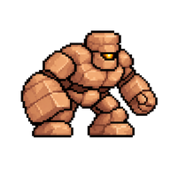
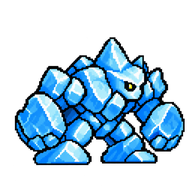
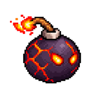
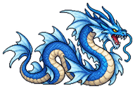
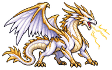
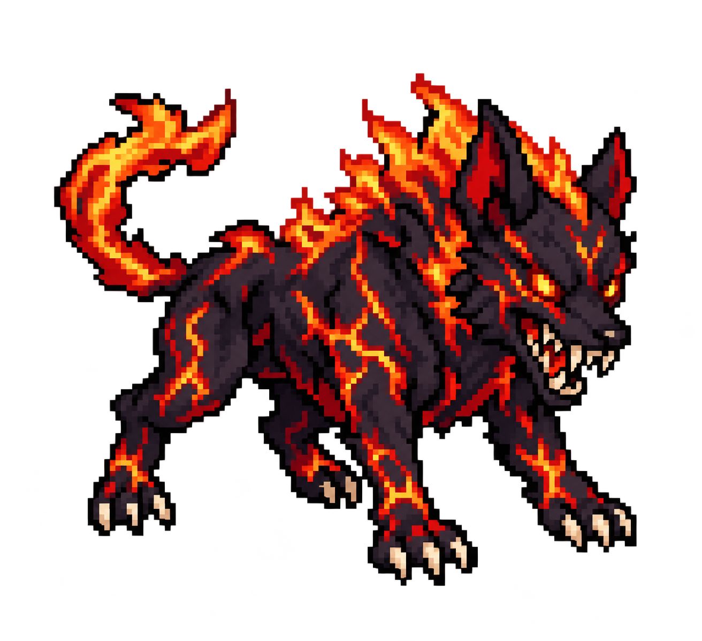
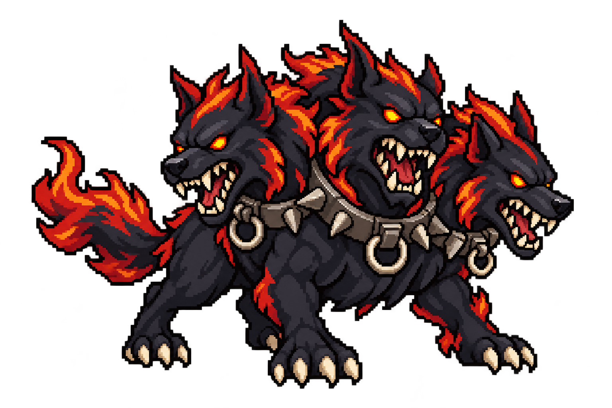
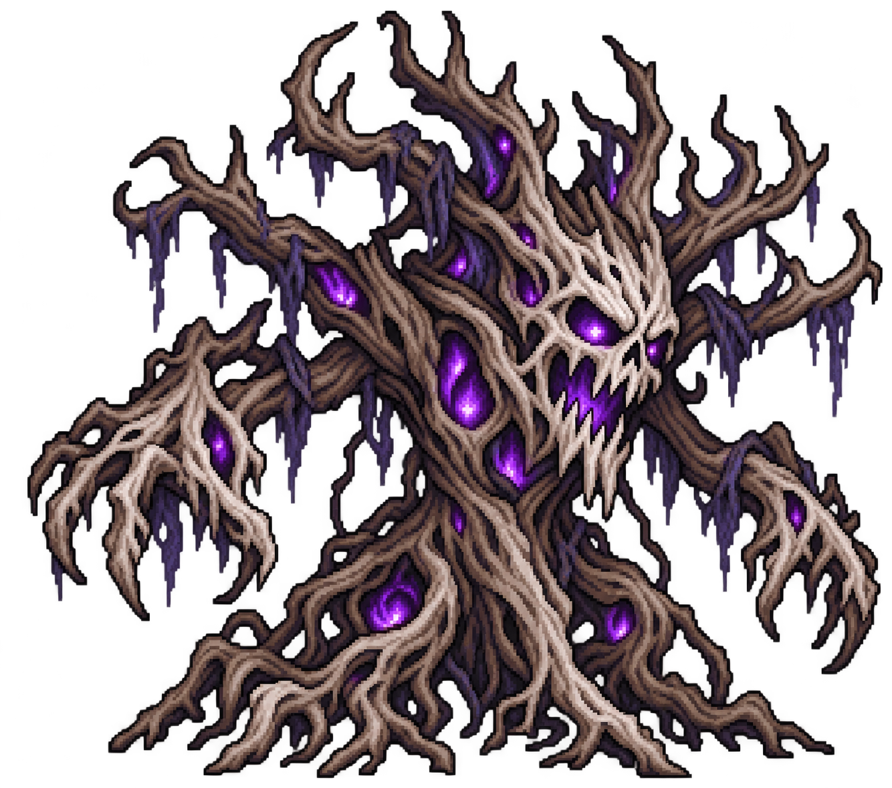

スライム
弱点：🔥 炎物理も魔法もふつうに通る
- HP
- 36
- 攻
- 8
- 速
- 8
- 守
- 2
- 魔防
- 1
通常物理攻撃
GAMBIT QUEST 攻略Wiki
スキル・装備・職業・モンスターの確認データをまとめています。
実測とゲーム内表示をもとに整理。推測・未確認の情報は本文に明記しています。
シーズン2をメイン表示。旧環境の汎用データは「シーズン1 アーカイブ」に保存しています。新旧の数値を混同しないようにご注意ください。
2026年10月のワイプ後に確認された内容だけを優先掲載します。未確認の詳細は埋めず、シーズン1の資料と分離しています。
13職追加で全43職。転生、宝箱排出、弱体耐性、速、槍、戦闘倍速などに変更あり。旧環境のスキル270件・装備・周回効率は現行確定資料として扱いません。
旧スキル・装備・職業・仕様は上部の「シーズン1（旧資料）」で参照できます。
目的から選ぶ：JP・G・魔石を稼ぐ ／ 加速スキルを比べる ／ 転職条件を調べる。確認済みは画面・提供テキストの確認範囲、推定は未実測の補完、未確認は根拠が不足している項目です。
出典：開発者公開「ガンビットクエスト_シーズン2紹介_v4.pptx」（ユーザー提供、2026-10-10確認）。表の頁はスライド番号。告知内容として記載し、詳細な式・未公開名・実測していない挙動は補わない。
| 項目 | 告知内容 | 頁 |
|---|---|---|
| ワイプ | シーズン2公開時にセーブデータを初期化。ユーザーから実施済みの報告あり。 | 3 |
| 職業 | 13職追加で全43職。遊び人系統3職と最上位職10職。系統限定スキルは廃止し、本職の特徴は固有パッシブで表現。未公開の職名・条件は推測しない。 | 5 |
| 職業Lv・転生 | 必要JPを引き上げ。基本職・上位職・最上位職の順に重く、キャラLvが高いほど必要JPが増加。ボス撃破JPボーナスに上限。転生の「転職条件半分」「パッシブ常時装備」は廃止し、転生Pで買う効果のみ。 | 6 |
| 魔界の解放 | 魔王城WAVE50のボス撃破で魔界の門を解放。マップ右上「魔界へ」で切替。敵は魔王城終盤より強い水準から開始。前ダンジョンWAVE20突破で次を解放。 | 7 |
| 弱体と除去 | 守は攻撃↓・防御↓・オイル・回復不可・MP燃焼などステータス低下への耐性。「浄化」で除去。信仰は毒・鈍足・暗闇・破滅など状態異常への耐性。キュア・リカバーで治療。 | 9 |
| 耐性・成功率 | 守・信仰の耐性と技の状態異常成功率は敵の強さとの比で決定。格上に通りにくく、格下に通りやすい。具体的な係数は資料にない。 | 10 |
| 会心・Lv上限 | 会心率はパッシブ・装備・職業固有で積む（資料表記：上限なし）。会心ダメージは力と敵の守の比で伸びる。Lv上限は転生で最大250。 | 10 |
| 槍 | 槍の技・武器を力参照に統一し、成長も力寄りに変更。個別の数値・効果文は現行画面で再確認する。 | 10 |
| 速・行動値 | 速の効果は積むほど逓減。敵の伸びも調整。速＋％は行動値＋％となり、速ステータスではなく行動の速さに掛かる。多段回数は速ステータスで決まる。 | 11 |
| 倍速・持続時間 | ×2・×3でも数字や連撃の演出を維持し、行動間隔を見直し。強化・弱体の長さも調整。旧ログの時間効率は現環境で再測定する。 | 11 |
| 宝箱 | 地上／魔界の切替を追加。魔界の木箱～竜宝の5段は魔界専用スキル・装備を排出。魔界の門へ入れると1段目、魔界のクリア数で上位段解放。必要クリア数の詳細は未確認。 | 12 |
| 排出内容 | ラインナップ一新。全箱で排出スキルLv1～15、N・Rはどの箱にも出る。地上にも装備追加。魔界装備の固定値は地上最上段を超える。旧初出宝箱欄は現行排出先の根拠にしない。 | 12 |
| 追加数 | スキル324（アクティブ235・パッシブ89）、武器防具141（地上36・魔界105）、敵48（ボス8・レア8を含む）。旧表示270件に324を加えて全体総数とはしない。 | 4・13 |
| 新要素 | 新バフ6種：ガード3種・反射・威力↑・絆。燃焼・凍結・回復不可ガード、各種無効で対策。浄化系、新しい魔界の構え、魔物殺し・不死殺し・撃破回復・即死など約20種のパッシブ効果。防具は固有効果の種類で分類。 | 9・13 |
出典：8頁。ボス名は全て非公開。制作素材の名前から対応を確定しない。
| 順 | ダンジョン | テーマ |
|---|---|---|
| 1 | 魔界の門 | 暗闇 |
| 2 | 骸の森 | 不死 |
| 3 | 業火の牢獄 | 炎 |
| 4 | 嘆きの氷湖 | 氷 |
| 5 | 瘴気の沼 | 毒 |
| 6 | 黒鉄の砦 | 魔界軍 |
| 7 | 虚空の回廊 | 闇 |
| 8 | 魔神殿 | ？？？ |
職業Lv付き表示と引き継ぎの確認報告を統合。確認できたLvだけを記載し、候補欄・推定・未確認を分けます。
| 職業 | 確認職業Lv | 固有効果 | 確認範囲・注意 |
|---|---|---|---|
| 聖騎士 | 1 | 聖騎士の誓い：被ダメージ−19%、HP+15%、回復量+20% | Lv2以降未確認 |
| ヴァンガード | 1〜12 | 先陣の盾：WAVE開始時、自分に最大HP15%・自分以外の味方に各人の最大HP8%のバリア／自分の技で張るバリア量+50%／バリア上限は最大HP75%（本人で確認）／バリアがある味方の被ダメージ−10% | Lv1〜12は同一表示。Lv13以降未確認。味方全員の上限が75%になるとは未確認 |
| スーパースター | 2〜4・11〜13・15 | 千両役者：攻撃命中ごと20%で攻撃↓か防御↓／芸人技の弱体成功率+30%・持続+4秒／弱体2つ以上の敵への与ダメージ+15%／弱体を付けると味方全員のゲージ+5／敵の弱体1つごとに芸人技の威力+10%（上限+50%） | 各Lvで同一。Lv1は候補欄をLv1相当として提示された記録。Lv5〜10は同一との総括報告のみ、Lv14の単独確認なし、Lv16以降未確認 |
| 賢者 | 1・3 | 連環詠唱：魔法使用時35%でガンビットの下の行の魔法が続けて発動（魔法以外は飛ばす）。追加消費なし。つながるほど威力+15%・行動ゲージ+10。次の連鎖確率は0.7倍ずつ、最大5連。魔・信仰の攻撃ダメージ+25% | Lv2・Lv4以降未確認。連鎖先の条件判定・ログ表記は未検証 |
| 侍 | 1 | 刀気：待機1秒ごとに次の攻撃+7%（上限+50%）／燕返し・居合のゲージ残し+20%／開幕の行動ゲージ+15 | Lv2以降未確認。待機の時間単位・ゲージ加算順は未検証 |
| 職業Lv | 魔・信仰の攻撃ダメージ | 消費MP／弱点ダメージ | 判定 |
|---|---|---|---|
| 1 | +28% | −15%／+20% | 確認値 |
| 2 | +29% | −15%／+20% | 確認値 |
| 3 | +31% | −15%／+20% | 確認値 |
| 4 | +32% | −15%／+20% | 確認値 |
| 6 | +35% | 今回のLv6記録では未確認 | 確認値 |
| 11 | +43% | −15%／+20% | 確認値 |
| 12 | +44% | −15%／+20% | 確認値 |
| 13 | +46% | −15%／+20% | 確認値 |
| 14 | +47% | −15%／+20% | 確認値 |
| 15 | +49% | −15%／+20% | 確認値 |
| 16 | +50% | −15%／+20% | 確認値 |
| 17 | +52% | −15%／+20% | 確認値 |
| 18 | +53% | −15%／+20% | 確認値 |
| 19 | +54% | −15%／+20% | 確認値 |
| 20 | +56% | −15%／+20% | 確認値・最大Lv |
Lv5・7〜10は未確認。Lv19は+54%で、以前の予測+55%を訂正。増加幅は完全な交互ではなく、成長式・丸め方は未確定です。
| 職業Lv | 回復量 | 回復魔法の消費MP |
|---|---|---|
| 1 | +37% | −56% |
| 2 | +39% | −57% |
| 3 | +41% | −58% |
| 4 | +43% | −59% |
| 5 | +45% | −60% |
| 6 | +47% | −61% |
| 7 | +49% | −62% |
| 8 | +51% | −63% |
| 9 | +53% | −64% |
| 10 | +55% | −65% |
Lv1〜10で行動ごと最大MP1.5%・HP3%回復。固有名は「奇跡」。Lv11以降は未確認です。
| 職業Lv | 会心ダメージ | 区分 |
|---|---|---|
| 1 | +57% | 確認値 |
| 2 | +59% | 確認値 |
| 3 | +61% | 確認値 |
| 4 | +63% | 確認値 |
| 5 | +65% | 確認値 |
| 6 | +67% | 確認値 |
| 7 | +69% | 確認値 |
| 8 | +71% | 確認値 |
| 9 | +73% | 確認値 |
| 10 | +75% | 確認値 |
| 11 | +77% | 確認値 |
| 12 | +79% | 確認値 |
| 13 | +81% | 推定・未実測 |
| 14 | +83% | 推定・未実測 |
| 15 | +85% | 推定・未実測 |
Lv1〜12で会心率+18%、会心時に敵の守・魔防の30%を無視、通常攻撃が20%で後ろの敵にも命中。Lv12会心ダメージ+79%を実測確認し、推定から更新。Lv13〜15の会心ダメージだけは推定、固定部分のLv13以降は未確認です。表記は「槍帝」です。
職業Lv1の「成長」表示。実際の増分・素質補正・端数処理は未検証。スーパースター・賢者・侍の成長欄は未確認です。
| 職業 | Lv1習得技 | HP | MP | 力 | 守 | 魔 | 信仰 | 技 | 速 |
|---|---|---|---|---|---|---|---|---|---|
| 聖騎士 | 盾打ち | 20 | 1.4 | 3 | 2.4 | 0.6 | 2.2 | 1 | 1 |
| ヴァンガード | 防壁 | 18 | 1.2 | 0.8 | 2.6 | 0.5 | 2 | 0.6 | 0.7 |
| 大魔導士 | 炎獄 | 9 | 2.2 | 0.5 | 1 | 3.6 | 1.2 | 0.8 | 1.3 |
| 司祭 | ハイヒール | 13 | 2.2 | 1 | 1.4 | 1.8 | 3.4 | 0.9 | 1.2 |
| 槍帝 | 貫通の矢 | 18 | 1.3 | 3.8 | 1.9 | 0.6 | 1 | 1.6 | 1.4 |
| 職業 | 職業Lv | スキル | 習得元の確度 |
|---|---|---|---|
| 大魔導士 | 10 | メテオ | 確認 |
| 司祭 | 10 | 女神の祈り | 習得確認・効果の新旧差あり |
| スーパースター | 10 | 終焉 | 習得確認・現行一覧で毒を残す説明を再確認 |
| 賢者 | 3 | ハイヒール | 習得確認・現行一覧で効果も確認 |
| 槍帝 | 6 | 居合 | 確認 |
| 槍帝 | 10 | 竜の咆哮 | 確認 |
| ヴァンガード | 3 | 鉄壁陣 | 推定（同時に複数職がLv3となり習得元を特定できず） |
| ヴァンガード | 6 | バリアの反射 | 確認 |
| ヴァンガード | 10 | 聖域 | 確認 |
職業LvとスキルLvは別です。効果・基礎値と高Lv値の違いはスキル一覧を参照。
2026-10-14提供テキスト。僧侶・格闘家は職業Lv10、ほか9職はLv1での固有パッシブ表示です。「Lv1で習得する技」と「確認した職業Lv」を区別しています。
| 職業 | 確認職業Lv | Lv1習得技 | 固有 | 表示効果 |
|---|---|---|---|---|
| 戦士 | 1 | 強撃 | 鉄壁 | 受けるダメージ−11% |
| 魔導士 | 1 | 炎 | 魔力の泉 | 魔・信仰の攻撃ダメージ+12% |
| 僧侶 | 10 | ヒール | 慈愛 | 回復量+35%、回復魔法の消費MP−40% |
| 盗賊 | 1 | 毒の刃 | 早業 | 行動値+5%、状態異常の成功率+11% |
| 戦略家 | 1 | デコイ | 軍略 | ガンビット枠+1、消費MP−10% |
| 弓使い | 1 | 狙い撃ち | 狙撃 | 会心率+9%、会心ダメージ+11% |
| 格闘家 | 10 | 連打 | 連撃の心得 | 速60以上なら多段技の回数+1、多段技の2発目以降の威力+10% |
| 呪術師 | 1 | 呪詛 | 呪いの才 | 状態異常の成功率+27%、弱体2つ以上の敵への与ダメージ+10% |
| 槍兵 | 1 | 疾風突き | 一点突破 | 会心ダメージ+32%、会心率+9% |
| サモナー | 1 | 雷獣召喚 | 召喚の心得 | 召喚の効果+4秒、召喚の威力+12% |
| 遊び人 | 1 | からかう | 悪ふざけ | 攻撃命中ごと20%で攻撃↓か防御↓、芸人の技の弱体成功率+30% |
画面の「成長」欄をそのまま整理。実際のレベルアップ増分・素質補正・端数処理との関係は未検証です。
| 職業 | 確認職業Lv | HP | MP | 力 | 守 | 魔 | 信仰 | 技 | 速 |
|---|---|---|---|---|---|---|---|---|---|
| 戦士 | 1 | 14 | 0.7 | 2.4 | 1.5 | 0.4 | 0.6 | 0.8 | 0.8 |
| 魔導士 | 1 | 7 | 1.5 | 0.4 | 0.7 | 2.6 | 0.8 | 0.6 | 0.9 |
| 僧侶 | 10 | 10 | 1.5 | 0.8 | 1 | 1 | 2.4 | 0.7 | 1 |
| 盗賊 | 1 | 9 | 1.1 | 1.2 | 0.9 | 0.5 | 0.5 | 2.4 | 1.8 |
| 戦略家 | 1 | 9 | 1.4 | 1 | 1 | 1.6 | 1.4 | 1.4 | 1.4 |
| 弓使い | 1 | 9 | 1.2 | 1.5 | 0.9 | 0.5 | 0.6 | 2.4 | 1.4 |
| 格闘家 | 10 | 12 | 0.8 | 2.2 | 1.2 | 0.4 | 0.6 | 1 | 2 |
| 呪術師 | 1 | 8 | 1.6 | 0.5 | 0.8 | 2.3 | 1.2 | 0.9 | 1 |
| 槍兵 | 1 | 12 | 0.8 | 2.6 | 1.3 | 0.4 | 0.6 | 1.2 | 1 |
| サモナー | 1 | 8 | 1.8 | 0.5 | 0.8 | 2 | 1.6 | 0.7 | 1 |
| 遊び人 | 1 | 9 | 1.3 | 0.8 | 0.8 | 1.2 | 0.8 | 2 | 1.5 |
| モンク | 1 | 14 | 1 | 2.5 | 1.4 | 0.5 | 0.9 | 1.2 | 2.3 |
以下7職の効果は転職候補欄の表示。職業Lvは明記されていないため、Lv1確定値や全Lv共通値とは扱いません。条件の現在Lvと仲間の解放状況は省略しています。
| 職業 | 解放条件 | 固有 | 候補欄の表示効果 |
|---|---|---|---|
| 騎士 | 戦士Lv10＋僧侶Lv10 | 守護 | 受けるダメージ−15%、HP+10% |
| ウィザード | 魔導士Lv10＋戦略家Lv10 | 魔導 | 魔・信仰の攻撃ダメージ+20%、消費MP−10% |
| 神官 | 僧侶Lv10＋魔導士Lv10 | 祝福 | 回復量+27%、行動ごと最大MP1%回復、回復魔法の消費MP−46% |
| 暗殺者 | 盗賊Lv10＋戦士Lv10 | 急所狙い | 行動値+6%、会心率+11%、状態異常成功率+21% |
| 軍師 | 戦略家Lv10＋盗賊Lv10 | 采配 | ガンビット枠+2、消費MP−15%、開幕ゲージ+30 |
| レンジャー | 弓使いLv10＋盗賊Lv10 | 野伏 | 会心率+15%、会心ダメージ+21%、6%で物理攻撃を回避 |
| 旅芸人 | 遊び人Lv10＋盗賊Lv10 | 旅の芸 | 攻撃命中ごと20%で攻撃↓か防御↓、芸人技の弱体成功率+30%・弱体持続+4秒、弱体2つ以上の敵への与ダメージ+15% |
Lv1習得「連環」。固有「気の流れ」：速60以上なら多段技の回数+1、多段技の2発目以降の威力+9%、被弾した直後の攻撃+10%。今回のテキストでは転職条件の表示がないため、条件は未確認です。
神官の新旧差：今回の候補欄は行動ごと最大MP1%回復・回復魔法の消費MP−46%。以前の職業Lv付き画面は最大MP1.5%回復でした。画面種別・職業Lv・更新時点による違いは未確定。以前の表は当時の観測として残します。僧侶Lv10の回復魔法MP−40%も今回確認した効果です。
同じキャラクターが必要①Lv15と必要②Lv10を満たす条件。仲間の解放表示だけで個別条件を無視できるとは扱いません。元の21枠・表示順を保ち、判明した名前を更新しています。従来5職の効果欄はLv記載なしの候補表示、新規3職はLv1報告です。
| 転職先 | 必要① Lv15 | 必要② Lv10 | 候補欄の固有効果 |
|---|---|---|---|
| 聖騎士 | 騎士 | 神官 | 聖騎士の誓い：受けるダメージ−19%、HP+15%、回復量+20% |
| 大魔導士 | ウィザード | 神官 | 大魔導：魔・信仰の攻撃ダメージ+28%、消費MP−15%、弱点ダメージ+20% |
| 司祭 | 神官 | 騎士 | 奇跡：回復量+37%、行動ごと最大MP1.5%回復・HP3%回復、回復魔法の消費MP−56% |
| ？？？？ | 暗殺者 | 軍師 | 未確認 |
| ？？？？ | 軍師 | ウィザード | 未確認 |
| ？？？？ | モンク | 騎士 | 未確認 |
| ？？？？ | ？？？？ | 神官 | 未確認 |
| 槍帝 | 竜騎士 | レンジャー | 槍帝の極み：会心ダメージ+57%、会心率+18%、会心時に守・魔防30%無視、通常攻撃20%で後方にも命中（Lv1） |
| ？？？？ | ？？？？ | 神官 | 未確認 |
| ？？？？ | レンジャー | 暗殺者 | 未確認 |
| スーパースター | 旅芸人 | 暗殺者 | 千両役者：攻撃命中ごと20%で攻撃↓か防御↓、芸人技の弱体成功率+30%・弱体持続+4秒、弱体2つ以上の敵への与ダメージ+15%、弱体を付けると味方全員ゲージ+5、敵の弱体1つごとに芸人技の威力+10%（上限+50%） |
| ？？？？ | 騎士 | ウィザード | 未確認 |
| 侍 | 竜騎士 | 暗殺者 | 刀気：待機1秒ごとに次の攻撃+7%（上限+50%）／燕返し・居合のゲージ残し+20%／開幕の行動ゲージ+15（Lv1） |
| ？？？？ | 騎士 | モンク | 未確認 |
| ヴァンガード | 騎士 | 神官 | 先陣の盾：WAVE開始時に自分へ最大HP15%のバリア、味方全員（自分以外）へ最大HP8%のバリア、自分の技で張るバリア量+50%、バリア上限は最大HP75%、バリアがある味方の被ダメージ−10% |
| ？？？？ | 軍師 | 暗殺者 | 未確認 |
| 賢者 | 神官 | ウィザード | 連環詠唱：魔法使用時35%でガンビットの下の行の魔法が続けて発動（魔法以外は飛ばす）。追加消費なし。つながるほど威力+15%・行動ゲージ+10。次の連鎖確率は0.7倍ずつ、最大5連。魔・信仰の攻撃ダメージ+25%（Lv1） |
| ？？？？ | 暗殺者 | レンジャー | 未確認 |
| ？？？？ | 神官 | 軍師 | 未確認 |
| ？？？？ | 神官 | レンジャー | 未確認 |
| ？？？？ | ウィザード | 暗殺者 | 未確認 |
ヴァンガードの味方用バリアは各人の最大HP8%と整合する観測あり。本人の上限75%を全員へ拡張したり、軽減の重複処理を断定したりしません。
初級5職のLv別表示値と、騎士・ウィザード・神官・旅芸人のLv1～15（未確認Lvを区別）を統合。戦士はLv8、槍兵はLv6、魔導士・僧侶・遊び人はLv9まで確認。戦士Lv5鉄壁−15%はユーザー指定による補完（直接画面未確認）。その他の未確認Lvは埋めません。初級職Lv10技の欄は、当時の画面に表示された習得予定の記録です。
| 職業・固有 | Lv1 | Lv2 | Lv3 | Lv4 | Lv5 | Lv6 | Lv7 | Lv8 | Lv9 |
|---|---|---|---|---|---|---|---|---|---|
| 戦士・鉄壁：被ダメ軽減 | −11% | −12% | −13% | −14% | −15% | −16% | −17% | −18% | 未確認 |
| 槍兵・一点突破：会心ダメージ | +32% | +34% | +36% | +38% | +40% | +42% | 未確認 | 未確認 | 未確認 |
| 槍兵：会心率 | +9% | +9% | +9% | +9% | +9% | +9% | 未確認 | 未確認 | 未確認 |
| 魔導士・魔力の泉：魔・信仰攻撃 | +12% | +13% | +15% | +16% | +18% | +19% | +21% | +22% | +24% |
| 僧侶・慈愛：回復量 | +17% | +19% | +21% | +23% | +25% | +27% | +29% | +31% | +33% |
| 遊び人・悪ふざけ | 同一表示 | 同一表示 | 同一表示 | 同一表示 | 同一表示 | 同一表示 | 同一表示 | 同一表示 | 同一表示 |
遊び人「悪ふざけ」：攻撃命中ごと20%で攻撃↓か防御↓、芸人の技の弱体成功率+30%。
Lv10での次回習得予定：戦士＝回転斬り／槍兵＝かぶと割り／魔導士＝大爆発／僧侶＝ヒールオール／遊び人＝お手玉。戦士Lv6画面で次の習得予定がLv10に更新されたことを確認。
魔導士Lv1～8の表示増加幅は+1、+2、+1、+2、+1、+2、+1ポイント。端数処理・成長式は未確認。上位職名の伏字も未確認のまま保持。
必要JPの画面実測：戦士Lv4→5は1,964JP、魔導士・僧侶・遊び人Lv7→8は5,379JP。キャラLvによる変動があるため、別キャラ・別時点の要求JPと単純比較しない。
2026-10-11提供画面での必要JP：戦士Lv6→7は4,076JP、魔導士・僧侶・遊び人Lv8→9は6,840JP。必要JPはキャラLvでも変動するため、固定の成長式とは断定しません。
2026-10-11追加画像：戦士Lv7鉄壁−17%、魔導士Lv9魔・信仰攻撃+24%、僧侶Lv9回復量+33%、遊び人Lv9悪ふざけは同一表示。次Lvの必要JPは戦士Lv7→8が5,977、魔導士・僧侶・遊び人Lv9→10が9,395（観測時の値。キャラLvで変動）。個人所持JPは掲載しません。出典：213358、213358-1、213401、213416。
2026-10-11提供の最新テキスト：戦士Lv8の鉄壁は受けるダメージ−18%。Lv8→9の必要JPは観測時7,600JP。キャラLvによる変動があるため固定値として一般化しません。Lv10の習得技とガチャからの取得は別です。
基本職Lv10＋Lv10。職名が表示された組み合わせだけ転職先を記載し、その他は未確認。1キャラクターごとに条件を満たす必要があります。
| 必要基本職① | 必要基本職② | 上位職 |
|---|---|---|
| 戦士 Lv10 | 僧侶 Lv10 | 騎士 |
| 盗賊 Lv10 | 戦士 Lv10 | 暗殺者 |
| 槍兵 Lv10 | 戦士 Lv10 | 未確認 |
| 魔導士 Lv10 | 戦略家 Lv10 | ウィザード |
| 僧侶 Lv10 | 魔導士 Lv10 | 神官 |
| 呪術師 Lv10 | 魔導士 Lv10 | 未確認 |
| サモナー Lv10 | 魔導士 Lv10 | 未確認 |
| 格闘家 Lv10 | 僧侶 Lv10 | 未確認 |
| 遊び人 Lv10 | 盗賊 Lv10 | 旅芸人 |
| 戦略家 Lv10 | 盗賊 Lv10 | 軍師 |
| 弓使い Lv10 | 盗賊 Lv10 | レンジャー |
2026-10-12までのゲーム内職業画面を統合。Lv1・2・4～7・9・10・14・15は表示確認値。Lv3だけ推定、Lv8とLv11～13は未確認。とくにウィザードの途中Lvは単純補間しない。旅芸人の「同一効果」は各確認Lvで変化がないことを指す。 神官のMP回復1.5%は当時の値で、最新候補欄との差は上記に注記しています。
| 職業・固有 | Lv1 | Lv2 | Lv3 | Lv4 | Lv5 | Lv6 | Lv7 | Lv8 | Lv9 | Lv10 | Lv11 | Lv12 | Lv13 | Lv14 | Lv15 | その他の固定効果 |
|---|---|---|---|---|---|---|---|---|---|---|---|---|---|---|---|---|
| 騎士・守護（被ダメ軽減） | −15% | −16% | −17%（推定） | −18% | −19% | −20% | −21% | 未確認 | −23% | −24% | 未確認 | 未確認 | 未確認 | −28% | −29% | HP+10% |
| ウィザード・魔導（魔・信仰攻撃） | +20% | +21% | +23%（推定） | +24% | +26% | +27% | +28% | 未確認 | +32% | +33% | 未確認 | 未確認 | 未確認 | +39% | +41% | 消費MP−10% |
| 神官・祝福（回復量） | +27% | +29% | +31%（推定） | +33% | +35% | +37% | +39% | 未確認 | +43% | +45% | 未確認 | 未確認 | 未確認 | +53% | +55% | 行動ごと最大MP1.5%回復 |
| 旅芸人・旅の芸 | 同一効果 | 同一効果 | 未確認 | 同一効果 | 同一効果 | 同一効果 | 同一効果 | 未確認 | 同一効果 | 同一効果 | 未確認 | 未確認 | 未確認 | 同一効果 | 同一効果 | 命中ごと20%で攻撃↓か防御↓／芸人技の弱体成功率+30%・弱体持続+4秒／弱体2つ以上の敵に与ダメ+15% |
Lv6で習得する補助系スキルは各職の表示で確認。Lv10の詳細は下表を参照。Lv15時のパッシブは騎士−29%・ウィザード+41%・神官+55%・旅芸人は据え置き。
| 職業 | 技 | 表示性能 |
|---|---|---|
| 騎士 | ウォークライ（SR） | Lv10習得予定を確認。性能は既存スキル表の確認値を参照（今回Lv10取得画面の詳細なし） |
| ウィザード | ドレイン（R・Lv1） | 魔参照／MP8／威力×1.30／敵1体。与えたダメージの半分だけ自分を回復 |
| 神官 | リバイブ（SR・Lv1） | 消費MP30%／味方1人。倒れた味方を復活（不死の味方には使えない） |
| 旅芸人 | ショータイム（SSR・Lv1） | 消費MP16／敵全体に攻撃↓・防御↓（18秒）、味方全員のゲージ+15 |
必要JPはキャラクターLvなどの影響を受けます。職業Lvだけで決まる共通要求量として扱わないでください。
最新の判明名・条件は上の最上位職一覧を参照。以下は以前の表示回数を保持した記録です。
解放済み職業名はそのまま掲載。画面上で同じ組み合わせが複数表示される場合は表示回数を保持しています。必要職業Lvは同じキャラクター内で満たす必要があります。
| 確認元 | 必要① Lv15 | 必要② Lv10 | 転職先 | 表示回数 |
|---|---|---|---|---|
| 騎士 | 騎士 | 神官 | ？？？？ | 2 |
| 騎士 | 神官 | 騎士 | ？？？？ | 1 |
| 騎士 | ？？？？ | 騎士 | ？？？？ | 1 |
| 騎士 | 騎士 | ウィザード | ？？？？ | 1 |
| 騎士 | 騎士 | ？？？？ | ？？？？ | 1 |
| ウィザード | ウィザード | 神官 | ？？？？ | 1 |
| ウィザード | 軍師 | ウィザード | ？？？？ | 1 |
| ウィザード | 騎士 | ウィザード | ？？？？ | 1 |
| ウィザード | 神官 | ウィザード | ？？？？ | 1 |
| ウィザード | ウィザード | 暗殺者 | ？？？？ | 1 |
| 神官 | 騎士 | 神官 | ？？？？ | 2 |
| 神官 | ウィザード | 神官 | ？？？？ | 1 |
| 神官 | 神官 | 騎士 | ？？？？ | 1 |
| 神官 | ？？？？ | 神官 | ？？？？ | 2 |
| 神官 | 神官 | ウィザード | ？？？？ | 1 |
| 神官 | 神官 | 軍師 | ？？？？ | 1 |
| 神官 | 神官 | レンジャー | ？？？？ | 1 |
| 旅芸人 | 旅芸人 | 暗殺者 | ？？？？ | 1 |
| 職業 | Lv3 | Lv6 |
|---|---|---|
| 騎士 | かぶと割り | HP強化 |
| ウィザード | 雷 | MP強化 |
| 神官 | 光の矢 | 信仰強化 |
| 旅芸人 | 弱体伝播 | 弱り目 |
v057の職業画面に表示された習得条件。技の効果は現行スキル一覧で確認できます。
職業Lv付き画面の確認値。Lv7・9は未確認。転職候補欄のLv記載なし表示とは分けています。
| 職業Lv | 行動値 | 会心率 | 状態異常成功率 | 確認区分 |
|---|---|---|---|---|
| 3 | +7% | +12% | +23% | 以前の確認記録 |
| 4 | +7% | +12% | +24% | 以前の確認記録 |
| 5 | +8% | +13% | +25% | 以前の確認記録 |
| 6 | +8% | +14% | +26% | 追加確認 |
| 7 | 未確認 | 未確認 | 未確認 | 補間しない |
| 8 | +9% | +15% | +28% | 追加確認 |
| 9 | 未確認 | 未確認 | 未確認 | 補間しない |
| 10 | +10% | +16% | +30% | 追加確認 |
| 11 | +11% | +17% | +31% | 追加確認 |
| 12 | +11% | +17% | +32% | 職業Lv付き画面 |
加速バフの倍率とは別の職業固有効果です。
2026-10-16の追加一覧を統合。現行登録371種（アクティブ241・パッシブ130）で、ゲーム全体の実装総数ではありません。一覧にない既確認の「聖域」も保持。スキルLv未記載の表示値はLv1基礎値と断定せず、過去のLv付き表示と区別します。
370 / 370 種を表示
| スキル | レア | 表示カテゴリ | ゲーム内説明（提供一覧の表示値／Lv記載なし） |
|---|---|---|---|
| 光斬 | N | アクティブ・力参照 | 力参照｜消費HP3%｜威力×1.5｜敵1体／光属性の斬撃 |
| 強撃 | N | アクティブ・力参照 | 力参照｜消費HP4%｜威力×1.8｜敵1体／力をこめた一撃 |
| 氷斬 | N | アクティブ・力参照 | 力参照｜消費HP3%｜威力×1.5｜敵1体／氷属性の斬撃 |
| 炎斬 | N | アクティブ・力参照 | 力参照｜消費HP3%｜威力×1.5｜敵1体／炎属性の斬撃 |
| 燕返し | N | アクティブ・力参照 | 力参照｜消費HP3%｜威力×1.2｜敵1体／攻撃後も行動ゲージが40%残る |
| 疾風突き | N | アクティブ・力参照 | 力参照｜消費HP3%｜威力×1.4｜敵1体／攻撃後も行動ゲージが30%残る |
| 連打 | N | アクティブ・力参照 | 力参照｜消費HP3%｜威力×0.4｜敵1体／1体に2回＋速30ごとに1回（最大+3） |
| 雷斬 | N | アクティブ・力参照 | 力参照｜消費HP3%｜威力×1.5｜敵1体／雷属性の斬撃 |
| かぶと割り | R | アクティブ・力参照 | 力参照｜消費HP4%｜威力×1.3｜敵1体／攻撃＋18秒防御ダウン |
| 一閃突き | R | アクティブ・力参照 | 力参照｜消費HP4%｜威力×1.1｜敵1体／会心率+45%、会心なら威力3.3 |
| 二段斬り | R | アクティブ・力参照 | 力参照｜消費HP4%｜威力×1.0｜敵1体／2回斬る |
| 回転斬り | R | アクティブ・力参照 | 力参照｜消費HP6%｜威力×0.9｜敵全体／敵全体を斬る |
| 強撃・改 | R | アクティブ・力参照 | 力参照｜消費HP4%｜威力×1.9｜敵1体／力参照の一撃（上位） |
| 爆裂拳 | R | アクティブ・力参照 | 力参照｜消費HP4%｜威力×0.6｜敵全体／ランダムな敵に4回 |
| さみだれ突き | SR | アクティブ・力参照 | 力参照｜消費HP6%｜威力×0.7｜敵全体／ランダムな敵に4回 |
| ジャンプ | SR | アクティブ・力参照 | 力参照｜消費HP5%｜威力×4.0｜敵1体／次の番に威力4.0で着地。その間は攻撃を受けない |
| 全てを賭ける | SR | アクティブ・力参照 | 力参照｜消費HP4%｜威力×3.0｜敵1体／自分のバリアを全部消費して威力3.0（バリアがないと1.0） |
| 居合 | SR | アクティブ・力参照 | 力参照｜消費HP5%｜威力×2.0｜敵1体／ゲージが満タンになった直後に使うと威力+50% |
| 捕食 | SR | アクティブ・力参照 | 力参照｜消費HP5%｜威力×1.2｜敵1体／HP30%以下の敵（ボス以外）を即死させ、自分のHP・MPを20%回復。それ以外なら攻撃して自分が12秒鈍足 |
| 捨て身 | SR | アクティブ・力参照 | 力参照｜消費HP6%｜威力×2.5｜敵1体／威力2.5。次の敵の行動まで受けるダメージ2倍 |
| 神速拳 | SR | アクティブ・力参照 | 力参照｜消費HP6%｜威力×0.5｜敵1体／1体に3回＋速30ごとに1回（最大+4）。行動後にゲージが30%残る |
| 血の誓い | SR | アクティブ・力参照 | 力参照｜消費HP8%｜威力×1.8｜敵1体／最大HPの8%を消費する一撃（自傷は被弾として数える） |
| 竜の咆哮 | SSR | アクティブ・力参照 | 力参照｜消費HP10%｜威力×1.6｜敵全体／敵全体に攻撃＋18秒攻撃ダウン |
| 盾の壁 | R | アクティブ・守参照 | 消費MP13｜味方全体／味方全体に守×0.8のバリア |
| 盾打ち | R | アクティブ・守参照 | 守参照｜消費HP3%｜威力×1.6｜敵1体／守を参照して攻撃 |
| 防壁 | R | アクティブ・守参照 | 消費MP5｜自分／自分に守×2.0のバリア＋12秒挑発 |
| 鉄壁陣 | SR | アクティブ・守参照 | 消費MP16｜味方全体／味方全体に守×1.2のバリア |
| ポイズン | N | アクティブ・魔参照 | 魔法｜消費MP3｜敵1体／毒スタック+4（攻撃なし） |
| 呪詛 | N | アクティブ・魔参照 | 魔参照｜消費MP3｜威力×0.3｜敵1体／「破滅」：相手が行動するたび魔×0.4の固定ダメージを4回。重ねがけは3回ぶんまで |
| 氷 | N | アクティブ・魔参照 | 魔参照｜消費MP4｜威力×1.5｜敵1体／氷の魔法 |
| 氷・改 | N | アクティブ・魔参照 | 魔参照｜消費MP6｜威力×2.0｜敵1体／氷の魔法（上位） |
| 炎 | N | アクティブ・魔参照 | 魔参照｜消費MP4｜威力×1.5｜敵1体／炎の魔法 |
| 炎・改 | N | アクティブ・魔参照 | 魔参照｜消費MP6｜威力×2.0｜敵1体／炎の魔法（上位） |
| 雷・改 | N | アクティブ・魔参照 | 魔参照｜消費MP6｜威力×2.0｜敵1体／雷の魔法（上位） |
| インプの火 | R | アクティブ・魔参照 | 魔参照｜消費MP11｜威力×0.9｜敵全体／全体炎。20%で燃焼 |
| オイル | R | アクティブ・魔参照 | 魔法｜消費MP5｜敵1体／18秒、受ける炎ダメージ+50% |
| スロウ | R | アクティブ・魔参照 | 魔法｜消費MP5｜敵1体／18秒鈍足（攻撃なし・成功しやすい） |
| ドレイン | R | アクティブ・魔参照 | 魔参照｜消費MP8｜威力×1.3｜敵1体／ダメージの半分だけ自分を回復 |
| ブライン | R | アクティブ・魔参照 | 魔法｜消費MP5｜敵1体／12秒暗闇（攻撃も魔法も半分はずれる。攻撃なし） |
| マナドレイン | R | アクティブ・魔参照 | 魔参照｜消費MP3｜威力×0.5｜敵1体／魔法ダメージの20%ぶんMPを吸収 |
| 呪縛 | R | アクティブ・魔参照 | 魔法｜消費MP9｜敵1体／18秒防御ダウン（攻撃なし・成功しやすい） |
| 大呪詛 | R | アクティブ・魔参照 | 魔参照｜消費MP10｜威力×0.6｜敵1体／「破滅」：相手が行動するたび魔×0.6＋対象の弱体の数×10%の固定ダメージを4回 |
| 業火 | R | アクティブ・魔参照 | 魔参照｜消費MP11｜威力×2.3｜敵1体／炎の魔法。30%で燃焼（行動のたび最大HPの4%） |
| 氷晶召喚 | R | アクティブ・魔参照 | 魔参照｜消費MP10｜威力×0.6｜自分／24秒、行動のたびランダムな敵に魔×0.6の氷ダメージ（20%で凍結） |
| 氷柱 | R | アクティブ・魔参照 | 魔参照｜消費MP11｜威力×2.3｜敵1体／氷の魔法。15%で凍結（ゲージが止まり、殴ると砕けて1.5倍） |
| 落雷 | R | アクティブ・魔参照 | 魔参照｜消費MP11｜威力×2.3｜敵1体／雷の魔法。30%で感電（雷の技が連鎖する印） |
| 衰弱 | R | アクティブ・魔参照 | 魔法｜消費MP9｜敵1体／18秒攻撃ダウン（攻撃なし・成功しやすい） |
| 雷 | R | アクティブ・魔参照 | 魔参照｜消費MP5｜威力×1.5｜敵1体／雷の魔法 |
| 雷獣召喚 | R | アクティブ・魔参照 | 魔参照｜消費MP9｜威力×0.7｜自分／24秒、行動のたびランダムな敵に魔×0.7の雷ダメージ（30%で感電） |
| 風精召喚 | R | アクティブ・魔参照 | 魔参照｜消費MP10｜威力×0.2｜自分／24秒、行動のたびゲージが最も少ない味方のゲージ+20% |
| インプ召喚 | SR | アクティブ・魔参照 | 魔参照｜消費MP22｜威力×0.9｜自分／インプを召喚。4ターン、行動ごとに敵1体へ炎＋20%で暗闇 |
| スロウオール | SR | アクティブ・魔参照 | 魔法｜消費MP12｜敵全体／敵全体を18秒鈍足 |
| バイオ | SR | アクティブ・魔参照 | 魔参照｜消費MP11｜威力×0.7｜敵全体／敵全体に魔法ダメージ＋毒スタック+2 |
| 吸魂 | SR | アクティブ・魔参照 | 魔参照｜消費MP10｜威力×1.2｜敵1体／魔法攻撃。与えたダメージの10%ぶんMPを吸収 |
| 吹雪 | SR | アクティブ・魔参照 | 魔参照｜消費MP29｜威力×1.4｜敵全体／敵全体に氷。15%で凍結 |
| 大爆発 | SR | アクティブ・魔参照 | 魔参照｜消費MP16｜威力×1.1｜敵全体／敵全体に魔法ダメージ |
| 天罰 | SR | アクティブ・魔参照 | 魔参照｜消費MP32｜威力×3.4｜敵1体／雷の大魔法。必ず感電 |
| 妖精召喚 | SR | アクティブ・魔参照 | 魔参照｜消費MP16｜威力×0.6｜自分／24秒、行動のたびHPの割合が最も低い味方を魔×0.6回復 |
| 守護霊召喚 | SR | アクティブ・魔参照 | 魔参照｜消費MP19｜威力×0.3｜自分／24秒、味方への単体攻撃を25%の確率で肩代わりして無効にする |
| 屍の誓い | SR | アクティブ・魔参照 | 魔参照｜消費MP13｜威力×0.8｜敵1体／倒れている味方の人数×魔×0.8の暗黒攻撃（誰も倒れていなければ×0.3） |
| 屍兵召喚 | SR | アクティブ・魔参照 | 魔参照｜消費MP16｜威力×0.8｜自分／24秒、行動のたび魔×0.8の追加攻撃。味方が倒れるたび+0.3 |
| 岩の巨人召喚 | SR | アクティブ・魔参照 | 魔参照｜消費MP16｜威力×0.8｜自分／24秒、行動のたびHPの割合が最も低い味方に魔×0.8のバリア |
| 影獣召喚 | SR | アクティブ・魔参照 | 魔参照｜消費MP16｜威力×0.5｜自分／24秒、行動のたびランダムな敵に魔×0.5の闇ダメージ＋防御↓（6秒） |
| 時間停止の契約 | SR | アクティブ・魔参照 | 魔法｜消費MP16｜敵全体／敵全体のゲージ-30。味方全員のゲージも-15 |
| 死の宣告 | SR | アクティブ・魔参照 | 魔法｜消費MP14｜敵1体／相手が5回行動したあと、残りHPの40%のダメージ（ボスは12%） |
| 水精召喚 | SR | アクティブ・魔参照 | 魔参照｜消費MP16｜威力×0.1｜自分／24秒、行動のたびMPの割合が最も低い味方（自分以外）のMPを魔×0.1回復 |
| 火炎嵐 | SR | アクティブ・魔参照 | 魔参照｜消費MP29｜威力×1.4｜敵全体／敵全体に炎。30%で燃焼 |
| 炎獄 | SR | アクティブ・魔参照 | 魔参照｜消費MP32｜威力×3.4｜敵1体／炎の大魔法。必ず燃焼 |
| 炎魔召喚 | SR | アクティブ・魔参照 | 魔参照｜消費MP19｜威力×0.3｜自分／24秒、行動のたび敵全体に魔×0.4の炎ダメージ（30%で燃焼） |
| 無作為魔 | SR | アクティブ・魔参照 | 魔法｜消費MP10｜敵1体／持っていない魔法を含め、ランダムな攻撃魔法が出る |
| 痛みの契約 | SR | アクティブ・魔参照 | 魔法｜消費MP10｜味方1人／味方1人に18秒「痛みの契約」：被弾のたびゲージ+15、受けるダメージ+20% |
| 精霊召喚 | SR | アクティブ・魔参照 | 魔参照｜消費MP16｜威力×0.5｜自分／24秒、行動のたび敵全体にそれぞれの弱点属性で魔×0.5の魔法ダメージ |
| 絶対零度 | SR | アクティブ・魔参照 | 魔参照｜消費MP32｜威力×3.4｜敵1体／氷の大魔法。40%で凍結 |
| 雷雲 | SR | アクティブ・魔参照 | 魔参照｜消費MP29｜威力×1.4｜敵全体／敵全体に雷。30%で感電。感電中の敵が2体以上なら連鎖で+30% |
| メテオ | SSR | アクティブ・魔参照 | 魔参照｜消費MP35｜威力×2.3｜敵全体／敵全体に特大の魔法ダメージ |
| 星霊召喚 | SSR | アクティブ・魔参照 | 魔参照｜消費MP40｜威力×0.6｜自分／24秒、行動のたび敵全体にそれぞれの弱点属性で魔×0.6＋味方全体に攻撃UP（6秒） |
| 終焉 | SSR | アクティブ・魔参照 | 魔参照｜消費MP45｜威力×1.5｜敵1体／対象の弱体をすべて起爆：（弱体の数）×技×1.5の固定ダメージ。弱体は消える（毒は数えず、残る） |
| キュア | N | アクティブ・信仰参照 | 信仰参照｜消費MP2｜回復×0.8｜味方1人／毒を消して少し回復 |
| キュア・改 | N | アクティブ・信仰参照 | 信仰参照｜消費MP5｜回復×0.8｜味方1人／状態異常を2つ治す |
| ヒール | N | アクティブ・信仰参照 | 信仰参照｜消費MP8｜回復×1.5｜味方1人／味方1人を回復 |
| ヒール・改 | N | アクティブ・信仰参照 | 信仰参照｜消費MP10｜回復×2.0｜味方1人／味方1人を回復（上位） |
| 光の矢 | N | アクティブ・信仰参照 | 信仰参照｜消費MP4｜威力×1.4｜敵1体／光の魔法 |
| 光・改 | N | アクティブ・信仰参照 | 信仰参照｜消費MP6｜威力×2.0｜敵1体／光の魔法（上位） |
| ハイヒール | R | アクティブ・信仰参照 | 信仰参照｜消費MP22｜回復×2.5｜味方1人／味方1人を大きく回復し、弱体を1つ消す |
| ヒールオール | R | アクティブ・信仰参照 | 信仰参照｜消費MP28｜回復×1.0｜味方全体／味方全体を回復 |
| リカバー | R | アクティブ・信仰参照 | 魔法｜消費MP9｜味方1人／状態異常を全部治す |
| 小浄化 | R | アクティブ・信仰参照 | 魔法｜消費MP8｜味方1人／味方1人のステータス低下を1つ消す |
| 浄化 | R | アクティブ・信仰参照 | 魔法｜消費MP10｜味方1人／味方1人のステータス低下（攻撃↓・防御↓・回復不可など）を全部消す |
| 聖光 | R | アクティブ・信仰参照 | 信仰参照｜消費MP11｜威力×2.2｜敵1体／光の魔法。味方の弱体を1つ消す（HPの割合が最も低い味方） |
| 聖光の雨 | R | アクティブ・信仰参照 | 信仰参照｜消費MP13｜威力×0.9｜敵全体／全体の光魔法 |
| 運命のダイス | R | アクティブ・信仰参照 | 信仰参照｜消費MP5｜威力×0.6｜敵1体／サイコロを振る。2〜5：目×0.6の光の魔法／6：敵全体に威力2.4／1：はずれ |
| シェルオール | SR | アクティブ・信仰参照 | 魔法｜消費MP12｜味方全体／味方全体、18秒以内に次に受けるダメージ1回を半減（受けると消える） |
| フルヒール | SR | アクティブ・信仰参照 | 魔法｜消費MP29｜味方1人／味方1人のHPを全回復。満タンを超えた分はバリアに |
| プロテクオール | SR | アクティブ・信仰参照 | 魔法｜消費MP12｜味方全体／味方全体を18秒防御UP |
| ヘイストオール | SR | アクティブ・信仰参照 | 魔法｜消費MP12｜味方全体／味方全体を18秒加速 |
| リザレクション | SR | アクティブ・信仰参照 | 信仰参照｜消費MP64｜回復×2.7｜味方全体／味方全体を大きく回復 |
| リバイブ・改 | SR | アクティブ・信仰参照 | 魔法｜消費MP35%｜味方1人／倒れた味方をHP50%で復活 |
| 三連光 | SR | アクティブ・信仰参照 | 信仰参照｜消費MP22｜威力×0.9｜敵1体／光の3連魔法 |
| 命の前借り | SR | アクティブ・信仰参照 | 魔法｜消費MP16｜味方1人／味方1人をHP60%ぶん回復。その味方は18秒「回復不可」 |
| 大地の守り | SR | アクティブ・信仰参照 | 魔法｜消費MP13｜味方全体／味方全体、18秒受けるダメージ15%減 |
| 浄化の光 | SR | アクティブ・信仰参照 | 魔法｜消費MP29｜味方全体／味方全体のステータス低下を全部消す |
| 痛み分け | SR | アクティブ・信仰参照 | 魔法｜消費MP13｜味方全体／味方全員のHP割合を平均にそろえる（減った人は被弾として数える） |
| 聖なる爆発 | SR | アクティブ・信仰参照 | 信仰参照｜消費MP26｜威力×1.9｜敵全体／全体の光魔法（大） |
| 裁きの光 | SR | アクティブ・信仰参照 | 信仰参照｜消費MP18｜威力×1.3｜敵全体／敵全体に光の魔法＋味方の弱体を1つ消す |
| 女神の祈り | SSR | アクティブ・信仰参照 | 信仰参照｜消費MP52%｜回復×1.4｜味方全体／味方全体を回復し、倒れた味方も復活 |
| からかう | N | アクティブ・技参照 | 消費MP3｜敵1体／敵1体に攻撃↓か防御↓を1つ（18秒。攻撃なし） |
| 毒の刃 | N | アクティブ・技参照 | 技参照｜消費HP3%｜威力×0.9｜敵1体／攻撃＋毒スタック+3 |
| 盗む | N | アクティブ・技参照 | 技参照｜消費HP2%｜威力×0.8｜敵1体／攻撃しつつゴールドを盗む |
| 聖なる矢 | N | アクティブ・技参照 | 技参照｜消費HP3%｜威力×1.5｜敵1体／光属性の射撃 |
| お手玉 | R | アクティブ・技参照 | 技参照｜消費HP4%｜威力×0.5｜敵全体／ランダムな敵に3回。当たるたび25%で攻撃↓か防御↓ |
| 値切り | R | アクティブ・技参照 | 技参照｜消費HP2%｜威力×0.9｜敵1体／攻撃。その敵を倒したときのゴールド+30% |
| 急所突き | R | アクティブ・技参照 | 技参照｜消費HP3%｜威力×1.3｜敵1体／会心が出やすい攻撃 |
| 攻撃破壊 | R | アクティブ・技参照 | 技参照｜消費HP3%｜威力×1.0｜敵1体／攻撃＋18秒攻撃ダウン（与ダメージ×0.8） |
| 毒矢 | R | アクティブ・技参照 | 技参照｜消費MP4｜威力×1.0｜敵1体／攻撃＋毒スタック+3 |
| 狙い撃ち | R | アクティブ・技参照 | 技参照｜消費MP4｜威力×1.4｜敵1体／会心が出やすい一矢 |
| 目つぶし | R | アクティブ・技参照 | 技参照｜消費HP3%｜威力×0.8｜敵1体／攻撃＋12秒暗闇（攻撃も魔法も半分はずれる） |
| 鈍足の刃 | R | アクティブ・技参照 | 技参照｜消費HP3%｜威力×0.9｜敵1体／攻撃＋18秒鈍足（行動が遅くなる） |
| 防御破壊 | R | アクティブ・技参照 | 技参照｜消費HP3%｜威力×1.0｜敵1体／攻撃＋18秒防御ダウン（守・魔防×0.6） |
| 魔物狩り | R | アクティブ・技参照 | 技参照｜消費HP4%｜威力×1.6｜敵1体／魔界の敵へ+30% |
| 乱れ撃ち | SR | アクティブ・技参照 | 技参照｜消費MP11｜威力×0.7｜敵全体／ランダムな敵に4回攻撃 |
| 代償の狙い | SR | アクティブ・技参照 | 技参照｜消費MP10｜威力×1.4｜敵1体／必ず会心の一矢。このWAVE中、ほかの技では会心が出なくなる |
| 外道の刃 | SR | アクティブ・技参照 | 技参照｜消費HP4%｜威力×1.5｜敵1体／攻撃し、対象の毒と弱体をすべて消して、消した数×ゲージ+10 |
| 弱体爆発 | SR | アクティブ・技参照 | 技参照｜消費HP4%｜威力×1.2｜敵1体／対象の弱体をすべて消し、消した数×技×1.2の攻撃（毒は数えない） |
| 毒の池 | SR | アクティブ・技参照 | 消費HP3%｜敵全体／敵全体に毒+1（すでに毒なら+2）。味方全員にも毒+1 |
| 毒の起爆 | SR | アクティブ・技参照 | 技参照｜消費HP3%｜威力×0.5｜敵1体／対象の毒スタック×技×0.5の固定ダメージ。毒は0に |
| 毒の転写 | SR | アクティブ・技参照 | 消費HP3%｜敵1体／自分の状態異常をすべて対象の敵に移す（何もなければ不発） |
| 矢の雨 | SR | アクティブ・技参照 | 技参照｜消費MP11｜威力×0.8｜敵全体／敵全体に矢を降らせる |
| 貫通の矢 | SR | アクティブ・技参照 | 技参照｜消費MP10｜威力×1.5｜敵1体／敵の守を30%無視し、弱体1つごとにさらに15%無視する一矢 |
| 連射 | SR | アクティブ・技参照 | 技参照｜消費MP11｜威力×0.9｜敵全体／ランダムな敵に3回、会心が出やすい |
| 魔法剣・氷 | R | アクティブ・力＋魔参照（魔法剣） | 力＋魔参照｜消費HP2%、消費MP2｜威力×1.4｜敵1体／力と魔の平均を参照する氷の斬撃。15%で凍結 |
| 魔法剣・炎 | R | アクティブ・力＋魔参照（魔法剣） | 力＋魔参照｜消費HP2%、消費MP2｜威力×1.4｜敵1体／力と魔の平均を参照する炎の斬撃 |
| 魔法剣・雷 | R | アクティブ・力＋魔参照（魔法剣） | 力＋魔参照｜消費HP2%、消費MP2｜威力×1.4｜敵1体／力と魔の平均を参照する雷の斬撃。30%で感電 |
| 暴食 | SR | アクティブ・力＋魔参照（魔法剣） | 力＋魔参照｜消費HP4%｜威力×1.0｜敵1体／自分の強化をすべて消し、消した数×力＋魔×1.0の攻撃 |
| チャージ | N | アクティブ・参照なし・補助 | 自分／手番を使ってMPを最大の20%回復 |
| かばう | R | アクティブ・参照なし・補助 | 味方1人／18秒、その味方への単体攻撃を代わりに受ける |
| シェル | R | アクティブ・参照なし・補助 | 消費MP6｜味方1人／18秒以内に次に受けるダメージ1回を半減（物理・魔法とも。受けると消える） |
| デコイ | R | アクティブ・参照なし・補助 | 消費MP5｜味方1人／味方1人に18秒挑発をつける |
| プロテク | R | アクティブ・参照なし・補助 | 消費MP6｜味方1人／味方1人を18秒防御UP |
| リジェネ | R | アクティブ・参照なし・補助 | 消費MP6｜味方1人／48秒、行動のたびHP5%回復 |
| 全員防御 | R | アクティブ・参照なし・補助 | 消費MP10｜味方全体／味方全体を12秒防御↑ |
| 尾を引く | R | アクティブ・参照なし・補助 | 消費MP4、構え（行動を使わない）｜自分／【構え】次の強化・弱体の持続が3倍 |
| 挑発 | R | アクティブ・参照なし・補助 | 自分／18秒、敵の単体攻撃を自分に集める。受けるダメージ30%減 |
| 捕捉 | R | アクティブ・参照なし・補助 | 消費MP3、構え（行動を使わない）｜自分／【構え】次の回復技の相手に回復量と同じバリア |
| 毒塗り | R | アクティブ・参照なし・補助 | 消費MP3、構え（行動を使わない）｜自分／【構え】次の攻撃に必ず毒+4 |
| 気合ため | R | アクティブ・参照なし・補助 | 消費HP3%、構え（行動を使わない）｜自分／【構え】次の攻撃の威力2.0倍（HP3%） |
| 薬の調合 | R | アクティブ・参照なし・補助 | 消費MP5｜味方1人／自分のLv×4を回復し、毒を消す（錬金術師ならWAVEが深いほど増える） |
| 誘いの舞 | R | アクティブ・参照なし・補助 | 消費MP5｜自分／18秒、挑発（敵の単体攻撃を集める）＋回避+20% |
| 踊り・加速 | R | アクティブ・参照なし・補助 | 消費MP8｜味方全体／味方全体を12秒加速 |
| 連環 | R | アクティブ・参照なし・補助 | 消費MP2、構え（行動を使わない）｜自分／【構え】次の技が直前と同じなら威力+70%、違うなら消費なし |
| 雇う | R | アクティブ・参照なし・補助 | 消費MP4｜味方1人／ゴールド（5＋深さ×2）を払い、味方1人をすぐ行動させる（ゲージMAX）。自分とゲージMAXの味方には使えない |
| 鬨の声 | R | アクティブ・参照なし・補助 | 消費MP10｜味方全体／味方全体を18秒攻撃↑ |
| 魔力の小歌 | R | アクティブ・参照なし・補助 | 味方全体／味方全体のMPを5%回復 |
| 魔力の霊薬 | R | アクティブ・参照なし・補助 | 消費HP5%｜味方1人／自分のHP5%を材料に、味方1人のMPを自分のLv×0.8回復（錬金術師ならWAVEが深いほど多い） |
| 鼓舞の歌 | R | アクティブ・参照なし・補助 | 消費MP6｜味方全体／味方全体、18秒与ダメージ+15%・受けるダメージ-15% |
| ウォークライ | SR | アクティブ・参照なし・補助 | 消費HP5%｜味方全体／味方全体を18秒攻撃UP |
| ディスペル | SR | アクティブ・参照なし・補助 | 消費MP10｜敵1体／敵の「ため」と強化をすべて消す。ボスのためは解除するたび効きにくくなる（2回目60%・3回目36%…） |
| バブル | SR | アクティブ・参照なし・補助 | 消費MP13｜味方1人／最大HPの50%のバリア（受けるダメージを肩代わり。最大HPの50%まで） |
| ヘイスト | SR | アクティブ・参照なし・補助 | 消費MP10｜味方1人／味方1人を24秒加速 |
| リバイブ | SR | アクティブ・参照なし・補助 | 消費MP30%｜味方1人／倒れた味方を復活（不死の味方には使えない） |
| 仁王立ち | SR | アクティブ・参照なし・補助 | 消費HP5%｜自分／18秒、味方への単体攻撃を全部受け、受けるダメージ30%減 |
| 分裂 | SR | アクティブ・参照なし・補助 | 消費MP5、構え（行動を使わない）｜自分／【構え】次の単体技がもう1体にも威力100%で当たる |
| 勇者の構え | SR | アクティブ・参照なし・補助 | 消費MP5、構え（行動を使わない）｜自分／【構え】次の単体技が全体化（威力60%） |
| 命の譲渡 | SR | アクティブ・参照なし・補助 | 消費HP50%｜味方1人／自分のHP50%を味方1人に移す（回復ではないので回復不可でも通る） |
| 守りの構え | SR | アクティブ・参照なし・補助 | 消費MP3、構え（行動を使わない）｜自分／【構え】次の行動まで受けるダメージ半減。受けたダメージの30%を次の技に上乗せ |
| 必中の構え | SR | アクティブ・参照なし・補助 | 消費MP5、構え（行動を使わない）｜自分／【構え】次の弱体・状態異常が必ず入る |
| 時間買収 | SR | アクティブ・参照なし・補助 | 消費MP10｜味方全体／味方全員のゲージ+30。自分のゲージは0になり、次の行動まで「回復不可」 |
| 満身の力 | SR | アクティブ・参照なし・補助 | 消費MP2、構え（行動を使わない）｜自分／【構え】次の技にHPの減っている割合×1.5ぶん威力上乗せ（HP10%なら+135%） |
| 瀉血 | SR | アクティブ・参照なし・補助 | 自分／HP10%を消費してMPを最大の25%回復 |
| 無心の構え | SR | アクティブ・参照なし・補助 | 消費MP2、構え（行動を使わない）｜自分／【構え】12秒、物理攻撃を受けると必ず反撃 |
| 無音詠唱 | SR | アクティブ・参照なし・補助 | 構え（行動を使わない）｜自分／【構え】次の技のMP・HP消費が半分（一部の強力な技には効かない） |
| 爆薬 | SR | アクティブ・参照なし・補助 | 消費MP13｜敵全体／自分のLv^1.5×1.2の固定ダメージ（Lv30で197、Lv60で558。錬金術師ならWAVEが深いほど増える） |
| 跡を残す | SR | アクティブ・参照なし・補助 | 消費MP4、構え（行動を使わない）｜自分／【構え】次の技のあとゲージが75%残る |
| 踊り・誘惑 | SR | アクティブ・参照なし・補助 | 消費MP11｜敵全体／敵全体を18秒鈍足 |
| 銭投げ | SR | アクティブ・参照なし・補助 | 消費MP13｜敵全体／所持ゴールドの2%を消費し、消費額÷10の固定ダメージ |
| 門衛の構え | SR | アクティブ・参照なし・補助 | 消費MP4、構え（行動を使わない）｜自分／【構え】次の技のあと、被弾ごとに最大HP10%のバリア（12秒） |
| 魔力の歌 | SR | アクティブ・参照なし・補助 | 消費MP13｜味方全体／味方全体のMPを最大の8%回復 |
| ショータイム | SSR | アクティブ・参照なし・補助 | 消費MP16｜敵全体／敵全体に攻撃↓と防御↓（18秒）。味方全員のゲージ+15 |
| 狂乱 | SSR | アクティブ・参照なし・補助 | 消費HP5%｜自分／18秒「狂乱」：行動のたび50%で続けて行動。その間「回復不可」 |
| 聖域 | SSR | アクティブ・参照なし・補助 | 消費MP60｜味方全体／バリアを上限まで張り直し、12秒間受けるダメージ−30%。ヴァンガードLv10習得、スキルLv未記載。全員の上限75%化やバリア量+50%との関係は未検証 |
| 骨砕き | N | アクティブ・力参照 | 力参照｜消費HP4%｜威力×1.6｜敵1体／不死の敵へ+30% |
| 光槍 | R | アクティブ・力参照 | 力参照｜消費HP4%｜威力×2.0｜敵1体／光属性の突き |
| 光牙 | R | アクティブ・力参照 | 力参照｜消費HP4%｜威力×2.0｜敵1体／光属性の強撃 |
| 氷牙 | R | アクティブ・力参照 | 力参照｜消費HP4%｜威力×2.0｜敵1体／氷属性の強撃 |
| 炎槍 | R | アクティブ・力参照 | 力参照｜消費HP4%｜威力×2.0｜敵1体／炎属性の突き |
| 炎牙 | R | アクティブ・力参照 | 力参照｜消費HP4%｜威力×2.0｜敵1体／炎属性の強撃 |
| 雷の槍 | R | アクティブ・力参照 | 力参照｜消費HP4%｜威力×2.0｜敵1体／雷属性の突き |
| 雷牙 | R | アクティブ・力参照 | 力参照｜消費HP4%｜威力×2.0｜敵1体／雷属性の強撃 |
| 吸血の刃 | SR | アクティブ・力参照 | 力参照｜消費HP5%｜威力×2.2｜敵1体／与ダメの30%吸収 |
| 氷槍 | R | アクティブ・力参照 | 力参照｜消費HP4%｜威力×2.0｜敵1体／氷属性の突き |
| 雷神斬り | SSR | アクティブ・力参照 | 力参照｜消費HP10%｜威力×1.9｜敵全体／雷をまとった全体攻撃 |
| 骨の陣 | SR | アクティブ・守参照 | 消費MP22｜味方全体／味方全体に守×1.0のバリア |
| 骨の壁 | R | アクティブ・守参照 | 消費MP6｜自分／自分に守×1.5のバリア |
| バイオ・改 | R | アクティブ・魔参照 | 魔参照｜消費MP11｜威力×1.4｜敵1体／魔法＋毒+2 |
| ポイズン・改 | R | アクティブ・魔参照 | 魔法｜消費MP8｜敵1体／毒+3（攻撃なし） |
| 呪詛・改 | R | アクティブ・魔参照 | 魔参照｜消費MP8｜威力×0.5｜敵1体／破滅（上位） |
| 死の指 | R | アクティブ・魔参照 | 魔法｜消費MP18｜敵1体／死の宣告（上位：4回行動後） |
| 死霊吸収 | R | アクティブ・魔参照 | 魔参照｜消費MP13｜威力×1.4｜敵1体／ダメージの50%を吸収。不死の敵には×2 |
| 氷の嵐 | R | アクティブ・魔参照 | 魔参照｜消費MP18｜威力×1.3｜敵全体／氷の全体魔法 |
| 氷撃 | R | アクティブ・魔参照 | 魔参照｜消費MP11｜威力×2.4｜敵1体／氷の魔法（中） |
| 雷撃 | R | アクティブ・魔参照 | 魔参照｜消費MP11｜威力×2.4｜敵1体／雷の魔法（中） |
| 魂の炎 | R | アクティブ・魔参照 | 魔参照｜消費MP10｜威力×1.9｜敵1体／炎の魔法。破滅中の敵へ+30% |
| グール召喚 | SR | アクティブ・魔参照 | 魔参照｜消費MP26｜威力×1.0｜自分／グールを召喚。4ターン、敵を殴って毒+1 |
| 墓場引き | SR | アクティブ・魔参照 | 魔参照｜消費MP19｜威力×1.2｜敵1体／魔法＋18秒鈍足 |
| 大氷撃 | SR | アクティブ・魔参照 | 魔参照｜消費MP26｜威力×3.2｜敵1体／氷の魔法（大） |
| 大炎撃 | SR | アクティブ・魔参照 | 魔参照｜消費MP26｜威力×3.2｜敵1体／炎の魔法（大） |
| 大雷撃 | SR | アクティブ・魔参照 | 魔参照｜消費MP26｜威力×3.2｜敵1体／雷の魔法（大） |
| 骨の牢 | SSR | アクティブ・魔参照 | 魔参照｜消費MP55｜威力×1.5｜敵1体／魔法＋12秒ストップ（ボス無効） |
| 炎の嵐 | R | アクティブ・魔参照 | 魔参照｜消費MP18｜威力×1.3｜敵全体／炎の全体魔法 |
| 炎撃 | R | アクティブ・魔参照 | 魔参照｜消費MP11｜威力×2.4｜敵1体／炎の魔法（中） |
| 雷の嵐 | R | アクティブ・魔参照 | 魔参照｜消費MP18｜威力×1.3｜敵全体／雷の全体魔法 |
| 怨霊召喚 | SR | アクティブ・魔参照 | 魔参照｜消費MP29｜威力×0.8｜自分／怨霊を召喚。行動ごとに敵1体へ回復不可 |
| 不死王の息 | SSR | アクティブ・魔参照 | 魔参照｜消費MP65｜威力×1.4｜敵全体／全体魔法＋18秒回復不可 |
| 不死鳥召喚 | SSR | アクティブ・魔参照 | 魔参照｜消費MP35｜威力×0.4｜自分／24秒、行動のたび味方全体を魔×0.4回復し、倒れている味方がいればHP30%で1人復活（召喚中1回） |
| ヒールオール・改 | R | アクティブ・信仰参照 | 信仰参照｜消費MP36｜回復×1.0｜味方全体／味方全体を回復 |
| 光の嵐 | R | アクティブ・信仰参照 | 信仰参照｜消費MP18｜威力×1.3｜敵全体／光の全体魔法 |
| 不死の儀 | SR | アクティブ・信仰参照 | 魔法｜消費MP32｜味方1人／味方1人に不死（倒れてもHP0で1ターン動く） |
| 全体キュア | SR | アクティブ・信仰参照 | 信仰参照｜消費MP22｜回復×0.5｜味方全体／味方全体の状態異常を2つずつ治す |
| 大光撃 | SR | アクティブ・信仰参照 | 信仰参照｜消費MP26｜威力×3.2｜敵1体／光の魔法（大） |
| 魂の絆 | SR | アクティブ・信仰参照 | 魔法｜消費MP22｜味方1人／18秒 その味方が受けるダメージの30%を自分が肩代わり |
| 光撃 | R | アクティブ・信仰参照 | 信仰参照｜消費MP11｜威力×2.4｜敵1体／光の魔法（中） |
| 墓守の加護 | R | アクティブ・信仰参照 | 魔法｜消費MP11｜味方1人／18秒 回復不可を防ぐ |
| 最後の祈り | SSR | アクティブ・信仰参照 | 信仰参照｜消費MP60%｜回復×0.8｜味方全体／味方全体を復活（HP30%）＋回復 |
| グールの爪 | R | アクティブ・技参照 | 技参照｜消費HP4%｜威力×0.7｜敵1体／3連撃。毒+1ずつ |
| 影渡り | R | アクティブ・技参照 | 消費MP8｜自分／12秒 回避+20% |
| 氷刃 | R | アクティブ・技参照 | 技参照｜消費HP4%｜威力×1.8｜敵1体／氷属性の刺突。会心+10% |
| 腐敗の矢 | R | アクティブ・技参照 | 技参照｜消費HP3%｜威力×1.3｜敵1体／毒+2 |
| 雷刃 | R | アクティブ・技参照 | 技参照｜消費HP4%｜威力×1.8｜敵1体／雷属性の刺突。会心+10% |
| 疫病の矢 | SR | アクティブ・技参照 | 技参照｜消費HP4%｜威力×1.6｜敵1体／毒+3＋防御↓ |
| 髑髏の雨 | SR | アクティブ・技参照 | 技参照｜消費HP6%｜威力×0.6｜敵全体／ランダム4回 |
| 必中の一矢 | SSR | アクティブ・技参照 | 技参照｜消費MP23｜威力×2.2｜敵1体／必ず会心になる一矢 |
| 光刃 | R | アクティブ・技参照 | 技参照｜消費HP4%｜威力×1.8｜敵1体／光属性の刺突。会心+10% |
| 炎刃 | R | アクティブ・技参照 | 技参照｜消費HP4%｜威力×1.8｜敵1体／炎属性の刺突。会心+10% |
| MPパサー・改 | R | アクティブ・参照なし・補助 | 味方1人／自分のMP20%を味方へ |
| かばう・改 | R | アクティブ・参照なし・補助 | 味方1人／24秒 その味方への単体攻撃を代わりに受ける |
| シェルオール・改 | R | アクティブ・参照なし・補助 | 消費MP15｜味方全体／味方全体にシェル |
| 挑発・改 | R | アクティブ・参照なし・補助 | 自分／18秒挑発＋受けるダメ-20% |
| ヘイストオール・改 | SR | アクティブ・参照なし・補助 | 消費MP26｜味方全体／味方全体を18秒加速 |
| 占い | SR | アクティブ・参照なし・補助 | 消費MP8｜味方全体／70%で、ランダムな強化1つを味方全体に12秒 |
| 死霊の構え | SR | アクティブ・参照なし・補助 | 消費MP5、構え（行動を使わない）｜自分／【構え】次の技を使ったあと12秒 不死 |
| プロテクオール・改 | R | アクティブ・参照なし・補助 | 消費MP15｜味方全体／味方全体を24秒防御↑ |
| 全体化 | SR | アクティブ・参照なし・補助 | 消費MP6、構え（行動を使わない）｜自分／【構え】次の単体技が全体に威力75%でかかる |
| スキル | レア | 表示カテゴリ | ゲーム内説明（提供一覧の表示値／Lv記載なし） |
|---|---|---|---|
| HP強化 | N | パッシブ・能力強化 | HP+6%、被弾10回ごとにHP3%回復 |
| MP強化 | N | パッシブ・能力強化 | MP+5%、MPが0になったときMP10%回復（1WAVE1回） |
| 信仰強化 | N | パッシブ・能力強化 | 信仰+4%、回復技を使うと自分に最大HPの3%のバリア |
| 力強化 | N | パッシブ・能力強化 | 力+4%、HP消費技の消費-10% |
| 守強化 | N | パッシブ・能力強化 | 守+6%、被弾するたび守+1%（最大+50%、WAVEでリセット） |
| 技強化 | N | パッシブ・能力強化 | 技+4%、弱体を付けたときゲージ+5 |
| 魔強化 | N | パッシブ・能力強化 | 魔+4%、MP満タンのとき魔法+10% |
| HP強化・改 | R | パッシブ・能力強化 | HP+10% |
| MP強化・改 | R | パッシブ・能力強化 | MP+10% |
| 俊足 | R | パッシブ・能力強化 | 行動値+5%、開幕の行動ゲージ+20 |
| 力強化・改 | R | パッシブ・能力強化 | 力+8% |
| 魔強化・改 | R | パッシブ・能力強化 | 魔+8% |
| 会心の心得 | R | パッシブ・攻撃 | 会心率+8% |
| 巨人殺し | R | パッシブ・攻撃 | ボスへのダメージ+12% |
| 弱点特効 | R | パッシブ・攻撃 | 弱点ダメージ+20% |
| 毒使い | R | パッシブ・攻撃 | 状態異常の成功率+15% |
| 魔法の心得 | R | パッシブ・攻撃 | 魔・信仰の攻撃ダメージ+10% |
| 魔物殺し | R | パッシブ・攻撃 | 魔界の敵へのダメージ+10% |
| 鷹の目 | R | パッシブ・攻撃 | 会心率+6%、会心ダメージ+15% |
| 会心強化 | SR | パッシブ・攻撃 | 会心ダメージ+25% |
| 光の心得 | SR | パッシブ・攻撃 | 光属性の魔法+20% |
| 制圧射撃 | SR | パッシブ・攻撃 | ため中の敵へのダメージ+40%・20%でためを止める |
| 反撃 | SR | パッシブ・攻撃 | 20%で物理攻撃に反撃 |
| 吸収 | SR | パッシブ・攻撃 | 与ダメージの8%を吸収 |
| 怒りの蓄積 | SR | パッシブ・攻撃 | 被弾するたび与ダメージ+6%（0ダメージ・自傷も数える。最大+60%、WAVEでリセット） |
| 抜刀待ち | SR | パッシブ・攻撃 | 待機1秒ごとに次の攻撃+5%（最大+50%） |
| 暴走 | SR | パッシブ・攻撃 | 攻撃するたび威力+2%（そのWAVE中）、行動するたび速+2%（WAVE中、最大10回） |
| 毒の心得 | SR | パッシブ・攻撃 | 毒ダメージ+30% |
| 聖なる刃 | SR | パッシブ・攻撃 | 「攻撃」が光属性になる |
| 背水 | SR | パッシブ・攻撃 | HP50%以下で与ダメージ+25% |
| 毒無効 | N | パッシブ・防御 | 毒にならない |
| 回避 | R | パッシブ・防御 | 10%で物理攻撃を回避 |
| 弱体耐性 | R | パッシブ・防御 | 15%でステータス低下を防ぐ |
| 鉄壁 | R | パッシブ・防御 | 受けるダメージ-6% |
| ターンアンデッド | SR | パッシブ・防御 | 倒れたとき「不死」：HP0のまま3回行動し、アクティブ枠1番目の技をMPなしで使い続ける（WAVEに1回、回復・蘇生は受けない） |
| 根性 | SR | パッシブ・防御 | WAVEに1回、HP1で耐える |
| 門番の心得 | SR | パッシブ・防御 | WAVE開始時に最大HPの8%のバリア、盾打ちの威力+10% |
| 回復の心得 | R | パッシブ・回復・MP | 回復量+12% |
| 瞑想 | R | パッシブ・回復・MP | 行動のたびMPを最大の0.8%回復 |
| 自然治癒 | R | パッシブ・回復・MP | 行動のたびHP3%回復 |
| 省エネ | SR | パッシブ・回復・MP | 消費MP-10%、HP消費技の消費-10% |
| 魔力変換 | SR | パッシブ・回復・MP | HPが最も高いとき行動のたびHP2%→MP2% |
| 反動 | R | パッシブ・被弾・瀕死・不死 | ダメージを受けると20%で守護（6秒） |
| 回復の転向 | R | パッシブ・被弾・瀕死・不死 | 回復不可中に受けた回復量の30%を隣の味方が代わりに回復 |
| 形見の忠誠 | R | パッシブ・被弾・瀕死・不死 | 味方が倒れたとき自分のMP全回復・ゲージ満タン |
| 形見の盾 | R | パッシブ・被弾・瀕死・不死 | 倒れた味方がいると受けるダメージ-15% |
| 忍耐 | R | パッシブ・被弾・瀕死・不死 | 被弾するたび受けるダメージ-2%（最大-30%、WAVEでリセット） |
| 痛みを力に | R | パッシブ・被弾・瀕死・不死 | 被弾するたび行動ゲージ+10 |
| バリアの反射 | SR | パッシブ・被弾・瀕死・不死 | バリアが吸ったダメージの50%を攻撃した敵に返す |
| 割れない盾 | SR | パッシブ・被弾・瀕死・不死 | バリアが割れたとき敵全体に割れた量の50%の固定ダメージ |
| 回復の転用 | SR | パッシブ・被弾・瀕死・不死 | 回復不可中に受けた回復量の50%をバリアに |
| 弔いの歌 | SR | パッシブ・被弾・瀕死・不死 | 味方が倒れたとき生存者全員に攻撃↑・加速（18秒） |
| 弔い合戦 | SR | パッシブ・被弾・瀕死・不死 | 倒れている味方1人ごとに威力+25% |
| 待ち伏せ | SR | パッシブ・被弾・瀕死・不死 | 満タン待機中に被弾すると即座に反撃（威力1.0）して待機を続ける |
| 怒りの爆発 | SR | パッシブ・被弾・瀕死・不死 | 被弾10回ごとに、次の技が必ず会心・威力+50% |
| 死にたがり | SR | パッシブ・被弾・瀕死・不死 | 瀕死の間、注目↑・受けるダメージ-30% |
| 死者の歩み | SR | パッシブ・被弾・瀕死・不死 | 不死の間、速+50%・状態異常にならない |
| 盾の報い | SR | パッシブ・被弾・瀕死・不死 | バリアがある間、攻撃にバリア量の30%を上乗せ |
| 釣り合い | SR | パッシブ・被弾・瀕死・不死 | 回復不可の間、会心率×2・受けるダメージ-20% |
| 鉄壁の報い | SR | パッシブ・被弾・瀕死・不死 | 防御・守護中に受けた攻撃に反撃（威力1.2） |
| 不死の置き土産 | SSR | パッシブ・被弾・瀕死・不死 | 不死が終わって倒れたとき敵全体に最大HP×1.0の固定ダメージ |
| 死者の力 | SSR | パッシブ・被弾・瀕死・不死 | 不死の間、威力×2.0 |
| 会心の貯金 | R | パッシブ・毒・弱体・強化・会心・連打 | 会心が出なかった攻撃ごとに会心率+5%（会心が出ると0に） |
| 会心の返し | R | パッシブ・毒・弱体・強化・会心・連打 | 会心が出ると5%回復（物理武器ならHP、魔法武器ならMP） |
| 先手必勝 | R | パッシブ・毒・弱体・強化・会心・連打 | 敵より先に動いた攻撃は威力+20% |
| 周回遅れ | R | パッシブ・毒・弱体・強化・会心・連打 | 敵より後に行動した攻撃は威力+30% |
| 弱体の重ね引き | R | パッシブ・毒・弱体・強化・会心・連打 | 弱体を持つ敵への技が弱体の残りを+4秒 |
| 強化の燃料 | R | パッシブ・毒・弱体・強化・会心・連打 | 強化を受けるたびMP2%回復 |
| 強化の継承 | R | パッシブ・毒・弱体・強化・会心・連打 | 強化が切れるとき隣の味方に50%の長さで移る |
| 強化の輪 | R | パッシブ・毒・弱体・強化・会心・連打 | 味方に強化をかけると自分にも同じ強化（6秒） |
| 後詰め | R | パッシブ・毒・弱体・強化・会心・連打 | 味方が敵を倒したとき、自分の次の技がMP・HP消費なし |
| 毒の収穫 | R | パッシブ・毒・弱体・強化・会心・連打 | 毒で敵が倒れるとパーティ全員のMP10%回復 |
| 毒の絵具 | R | パッシブ・毒・弱体・強化・会心・連打 | 毒5スタック以上の敵には弱体が必ず入る |
| 毒牙の追撃 | R | パッシブ・毒・弱体・強化・会心・連打 | 毒の敵を攻撃すると25%で毒+1 |
| 満タンの余裕 | R | パッシブ・毒・弱体・強化・会心・連打 | HPが満タンのとき消費MP-20% |
| 追い打ち | R | パッシブ・毒・弱体・強化・会心・連打 | 多段技の2発目以降の威力+10% |
| 追い詰め | R | パッシブ・毒・弱体・強化・会心・連打 | 弱体2つ以上の敵への与ダメージ+35% |
| 魔力循環 | R | パッシブ・毒・弱体・強化・会心・連打 | MP70%以上で魔法威力+20% |
| 万能家 | SR | パッシブ・毒・弱体・強化・会心・連打 | このWAVEで使った異なる技の数×威力+8% |
| 上乗せ | SR | パッシブ・毒・弱体・強化・会心・連打 | 自分に強化が3つ以上あるとき与ダメージ+20% |
| 会心連鎖 | SR | パッシブ・毒・弱体・強化・会心・連打 | 会心が出ると行動ゲージ+25 |
| 共鳴 | SR | パッシブ・毒・弱体・強化・会心・連打 | 味方が自分と同じ技を使ったとき自分のゲージ+25 |
| 反響 | SR | パッシブ・毒・弱体・強化・会心・連打 | 同じ技を続けて使うたび威力+5%（WAVE中） |
| 弱り目 | SR | パッシブ・毒・弱体・強化・会心・連打 | 弱体中の敵の攻撃-10% |
| 弱り目に祟り目 | SR | パッシブ・毒・弱体・強化・会心・連打 | 弱体3つ以上の敵への攻撃が必ず会心 |
| 弱体の共振 | SR | パッシブ・毒・弱体・強化・会心・連打 | 弱体を付けたとき、同じ弱体を持つ他の敵全部に威力50%のダメージ |
| 弱体伝播 | SR | パッシブ・毒・弱体・強化・会心・連打 | 弱体をかけると30%で別の敵にも |
| 弱者いじめ | SR | パッシブ・毒・弱体・強化・会心・連打 | 毒スタック1つごとに与ダメージ+3% |
| 残心 | SR | パッシブ・毒・弱体・強化・会心・連打 | 待機したあとの行動はゲージが30%残る |
| 毒の成長 | SR | パッシブ・毒・弱体・強化・会心・連打 | 毒の敵が行動するたび毒+1 |
| 毒の鎧 | SR | パッシブ・毒・弱体・強化・会心・連打 | 自分が毒の間、受けるダメージ-25%・被弾した敵に毒+1 |
| 毒喰らい | SR | パッシブ・毒・弱体・強化・会心・連打 | 毒ダメージが入るたび自分のMP1%回復 |
| 波状攻撃 | SR | パッシブ・毒・弱体・強化・会心・連打 | 同じ対象を続けて攻撃すると威力+2%ずつ（5回まで） |
| 祝福の余韻 | SR | パッシブ・毒・弱体・強化・会心・連打 | 強化が切れるとき対象のHP5%回復 |
| 腐食 | SR | パッシブ・毒・弱体・強化・会心・連打 | 毒10スタック以上の敵は守-20% |
| 速さの代償 | SR | パッシブ・毒・弱体・強化・会心・連打 | 連続行動の2発目は威力+50%、そのあとゲージ-20 |
| 過剰詠唱 | SR | パッシブ・毒・弱体・強化・会心・連打 | 魔法の消費MP+30%、威力+30% |
| 魔力吸収 | SR | パッシブ・毒・弱体・強化・会心・連打 | 弱点を突くとMP5%回復 |
| 状態異常耐性 | N | パッシブ・その他 | 毒以外の状態異常を50%で防ぐ |
| 先制 | R | パッシブ・その他 | 開幕の行動ゲージ+40 |
| 商才 | R | パッシブ・その他 | 宝箱の魔石+10% |
| 学者 | R | パッシブ・その他 | 獲得JP+10% |
| 金運 | R | パッシブ・その他 | 獲得ゴールド+10% |
| 召喚の絆 | SR | パッシブ・その他 | 同時に出せる召喚+1 |
| 応急手当 | SR | パッシブ・その他 | 味方が瀕死になったとき「ヒール・改」がその味方に自動発動（1WAVE1回） |
| 俊足・改 | R | パッシブ・能力強化 | 行動値+8% |
| 信仰強化・改 | R | パッシブ・能力強化 | 信仰+8% |
| 守強化・改 | R | パッシブ・能力強化 | 守+8% |
| 技強化・改 | R | パッシブ・能力強化 | 技+8% |
| 不死狩り | R | パッシブ・攻撃 | 不死の敵へのダメージ+15% |
| 会心の心得・改 | R | パッシブ・攻撃 | 会心率+6% |
| 会心強化・改 | R | パッシブ・攻撃 | 会心ダメージ+20% |
| 毒使い・改 | R | パッシブ・攻撃 | 状態異常の成功率+20% |
| 吸収・改 | SR | パッシブ・攻撃 | 与ダメージの8%を吸収 |
| 毒の心得・改 | SR | パッシブ・攻撃 | 毒ダメージ+25% |
| 破滅の手 | SR | パッシブ・攻撃 | 攻撃が15%で破滅を付ける |
| 冷血 | SR | パッシブ・攻撃 | HP50%以下で与ダメージ+30% |
| 死神の鎌 | SSR | パッシブ・攻撃 | HP15%以下の敵（ボス以外）を一撃で倒す |
| 治癒の護り | R | パッシブ・防御 | 30%で回復不可を防ぐ |
| 骨の鎧 | SR | パッシブ・防御 | 受ける物理ダメージ-10% |
| 不死の意志 | SR | パッシブ・防御 | 倒れたとき「不死」：HP0のまま1回行動し、アクティブ枠1番目の技をMPなしで使い続ける（WAVEに1回、回復・蘇生は受けない） |
| 幽歩 | SR | パッシブ・防御 | 8%で物理攻撃を回避、魔法も回避できる（回避率の30%） |
| 魂喰い | SR | パッシブ・回復・MP | 敵を倒すとHP10%回復、敵を倒すとMP5%回復 |
| 瞑想・改 | R | パッシブ・回復・MP | 行動のたびMPを最大の1.2%回復 |
| 墓守 | SR | パッシブ・被弾・瀕死・不死 | 倒れた味方がいると受けるダメージ-20% |
| 墓場の力 | SSR | パッシブ・被弾・瀕死・不死 | 倒れている味方1人ごとに威力+20%、味方が倒れたとき自分のMP全回復・ゲージ満タン |
| 不死王の契約 | SSR | パッシブ・被弾・瀕死・不死 | 不死の間、魔法のMP消費0・威力×1.5、回復不可の間は不死の残りターンが減らない |
| 魂の貯金 | SR | パッシブ・毒・弱体・強化・会心・連打 | 会心が出なかった攻撃ごとに会心率+3%（会心が出ると0に） |
| 疫病持ち | SR | パッシブ・その他 | 毒を与えると別の敵にも30% |
| 死霊との縁 | SR | パッシブ・その他 | 召喚の威力+20%、召喚の効果+4秒 |
ゲーム内説明の提供文：回復が0になる（0回復も「被弾」に数える）。バリアは張れる。不死の間はずっと回復不可。骸の森の怨霊は攻撃時30%で付与します。
| 対処・関連技 | 確認できた説明 |
|---|---|
| 浄化（R） | 単体のステータス低下を全部解除。説明に回復不可を含む |
| 小浄化（R） | 単体のステータス低下を1つ解除。複数あるときの解除順は未確認 |
| 浄化の光（SR） | 味方全体のステータス低下を全部解除 |
| バリア | 回復不可でも付与可能。鉄壁陣・盾の壁・聖域などの消費MPも確認して使う |
| 門衛の重鎧 | 30%で回復不可を防ぐ。必ず防ぐ効果ではない |
| ガンビット条件 | 「回復不可」そのものを条件指定できるかは未確認 |
回復量が出ない戦闘ログだけで回復不可と断定しません。付与・解除の記録やMP状態の確認が必要です。
| 項目 | 現行の確認内容 | 注記 |
|---|---|---|
| ハイヒール | R／信仰参照／MP22／回復×2.5／味方1人を回復し弱体1つ除去 | 司祭Lv1・賢者Lv3習得。旧S1のMP11・×3.60を現行へ転用しない |
| 貫通の矢 | SR／技参照／MP10／威力×1.5／守30%無視、弱体1つごとにさらに15%無視 | 槍帝Lv1習得。現行効果・レア度の保留を解消 |
| 全てを賭ける | 現行レア度SRを確認 | HP4%・×3.0、バリアなし×1.0。レア度の保留を解消 |
| 終焉 | 弱体数×技×1.5で起爆。毒は数えず、残る | 現行一覧で引き継ぎの説明を再確認。旧S1の毒も消費する記述と区別 |
| 女神の祈り | 消費MP52%・回復×1.4を現行一覧でも確認 | 旧S1はMP35%・×2.00。変更理由・補正差は未確定 |
| 竜の咆哮 | 力参照・HP10%・×1.6・18秒攻撃ダウンを再確認 | 旧S1の力＋技参照・12秒とは別に扱う |
| 鉄壁陣 | SR・MP16・味方全体へ守×1.2バリアを再確認 | ヴァンガードLv3習得元は引き続き推定 |
| バリアの反射 | 一覧の説明は50%。別のスキルLv7表示は58% | ヴァンガードLv6習得。スキルLvによる表示差を保持 |
| 炎魔召喚 | 倍率欄は×0.3、効果文は行動ごと魔×0.4 | 提供一覧の内部に数値差あり。どちらかへ独断で統一しない |
| ディスペル | 今回の一覧でもMP10 | 別画面報告MP25との条件差は未解決 |
| スキル | レア | 確認Lv | 参照 | 消費 | 倍率・回復 | 対象 | 効果・注意 | 出典 |
|---|---|---|---|---|---|---|---|---|
| ウォークライ | SR | 8 | 未表示 | HP5% | — | 味方全体 | 18秒攻撃UP。効果量の数値は未表示。 | 銅箱取得・195126/195159 |
| 魔力の霊薬 | R | 9 | 自分のLv | HP5% | Lv×0.8 | 味方1人 | 自分のHP5%を材料に味方のMPを回復。錬金術師なら補正が深いほど多い。 | 銅箱取得・195126/195159 |
| マナドレイン | R | 3 | 魔 | MP3 | ×0.50 | 敵1体 | 魔法ダメージの20%ぶんMPを吸収。端数処理は未確認。 | 銅箱取得・195852/195914 |
| 爆裂拳 | R | 1 | 力 | HP4% | ×0.60 | 敵全体／ランダムな敵に4回 | 全体表記とランダム4回の適用詳細は未検証。 | 銅箱取得・195852/195909 |
| 捕捉 | R | 15 | — | MP3 | — | 自分 | 構え（行動を使わない）。次の回復技の相手に回復と同じバリア。 | 銅箱取得・195852/195859 |
| 炎 | N | 17 | 魔 | MP4 | ×1.98 | 敵1体 | 炎の魔法。 | 200048 |
| ポイズン | N | 16 | 魔法（画面表記） | MP3 | — | 敵1体 | 毒スタック+4。攻撃なし。 | 200048 |
| 氷 | N | 14 | 魔 | MP4 | ×1.89 | 敵1体 | 氷の魔法。 | 200048 |
| 雷 | R | 15 | 魔 | MP5 | ×1.92 | 敵1体 | 雷の魔法。 | 200048 |
| 雷獣召喚 | R | 2 | 魔 | MP9 | ×0.71 | 自分 | 24秒、行動のたびランダムな敵に魔×0.70の雷ダメージ（30%で感電）。威力欄×0.71と説明文×0.70を別々に保存。 | 200048 |
| ヒール | N | 17 | 信仰 | MP4 | 回復×2.90 | 味方1人 | 味方1人を回復。 | 195650 |
| 光の矢 | N | 14 | 信仰 | MP4 | ×1.76 | 敵1体 | 光の魔法。 | 195650 |
| 毒の刃 | N | 4 | 技 | HP3% | ×0.95 | 敵1体 | 攻撃＋毒スタック+3。消費はHP3%（MP3ではない）。 | 195709 |
| からかう | N | 6 | 未表示 | MP3 | — | 敵1体 | 攻撃↓か防御↓を1つ（18秒、攻撃なし）。 | 195709 |
| シェル | R | 1 | — | MP6 | — | 味方1人 | 18秒以内に次に受けるダメージ1回を半減（物理・魔法とも）。受けると消える。全体軽減ではない。 | 204135 |
| 盾打ち | R | 1 | 守 | HP3% | ×1.60 | 敵1体 | 守を参照して攻撃。元画像204137を再確認し旧転記MP3%をHP3%へ訂正。行動妨害の記載なし。 | 203932/204137 |
| 防御破壊 | R | 6 | 技 | HP3% | ×1.00 | 敵1体 | 攻撃＋18秒防御ダウン（守・魔防×0.6）。取得画面のLv6を採用。 | 213441/213511 |
| 呪縛 | R | 4 | 魔法（画面表記） | MP9 | — | 敵1体 | 18秒防御ダウン。攻撃なし・成功しやすい。 | 213441/213503 |
| 矢の雨 | SR | 15 / 13 | 技 | MP11 | ×0.85 | 敵全体 | 敵全体に矢を降らせる。詳細画面にLv表示なし。取得Lv15と13は確認、倍率を両Lvの確定値とはしない。追加状態異常の記述なし。 | 213441/213519 |
| 目つぶし | R | 1 | 技 | HP3% | ×0.80 | 敵1体 | 攻撃＋12秒暗闇（攻撃も魔法も半分はずれる）。 | 213603/213622 |
| 衰弱 | R | 10 | 魔法（画面表記） | MP9 | — | 敵1体 | 18秒攻撃ダウン。攻撃なし・成功しやすい。 | 213603/213648 |
| スキル | レア | 確認Lv | 表示効果 | 出典 |
|---|---|---|---|---|
| 省エネ | SR | 7 | 消費MP−17%、HP消費技の消費−17%。 | 銅箱取得・195437 |
| 省エネ | SR | 13 | 消費MP−19%、HP消費技の消費−19%。Lvなしの−15%画面をLv13の値にしない。 | 銅箱取得・195454/200048 |
| MP強化 | N | 20 | MP+7%、MP0になったときMP14%回復（1WAVE1回）。 | 200048 |
| 魔強化 | N | 16 | 魔+5%、MP満タンのとき魔法+13%。 | 200048 |
| 信仰強化 | N | 27 | 信仰+6%、回復技を使うと自身に最大HP5%のバリア。 | 195650 |
| 瞑想 | R | 3 | 行動のたびMPを最大値の1%回復。 | 195650 |
| 弱体の重ね引き | R | 1 | 弱体を持つ敵への技が弱体の残りを+4秒。 | 195709 |
| 技強化 | N | 23 | 技+6%、弱体を付けたときゲージ+7。 | 195709 |
| 俊足 | R | 13 | 行動値+6%、開幕の行動ゲージ+25。 | 195709 |
| 会心の返し | R | 13 | 会心が出ると5%回復（物理武器ならHP、魔法武器ならMP）。 | 213441/213537 |
| 弱点特効 | R | 4 | 弱点ダメージ+20%。加算・乗算の細則は未検証。 | 213603/213632 |
| 商才 | R | 2 | 宝箱の魔石+10%。適用範囲・端数処理は未検証。 | 213603/213636 |
取得画面のLvと、今回のLv記載なしの効果文は別の記録です。取得Lvだけを根拠に倍率・効果を対応付けません。
| スキル | レア | 取得Lv記録 |
|---|---|---|
| 連打 | N | 2 ／ 13 |
| キュア | N | 1 |
| 毒無効 | N | 1 |
| 疾風突き | N | 14 |
| HP強化 | N | 14 |
| ウォークライ | SR | 1 ／ 13 |
| ヒール | N | 3 |
| 回転斬り | R | 5 |
| 魔強化 | N | 10 ／ 12 / 3 |
| リジェネ | R | 6 |
| 守強化 | N | 1 |
| 状態異常耐性 | N | 1 |
| 省エネ | SR | 8（効果未確認） |
| 気合ため | R | 7 |
| 力強化 | N | 1 |
| 毒の刃 | N | 1 / 3 |
| プロテク | R | 12 |
| MP強化 | N | 6 |
| からかう | N | 10 |
| 燕返し | N | 9 / 13 ／ 15 |
| 呪詛 | N | 2→10（自動合成表示） |
| チャージ | N | 3 |
燕返し：力参照、消費HP3%、威力×1.20、敵1体／攻撃後も行動ゲージが40%残る（Lv記載なしの説明）。取得画像195852ではLv9とLv13を確認。旧転記名「毒返し」を訂正し、既存燕返しLv15の取得記録へ統合。
2026-10-11追加：SRバイオの説明をユーザー提供テキストから転記。2026-10-14提供の一覧でも収録を再確認。毒スタック+2以外の追加効果は補完しません。
ヘイストの加速率は未表示。追い詰めの弱体判定に毒が含まれるか、商才の適用範囲と端数処理、弱点特効の加算・乗算は未検証。会心の返しは5%回復。矢の雨の説明に状態異常付与の記載はありません。捕捉は次の回復技の相手にバリアを付ける構えです。
出典：2026-10-14提供のゲーム内スキル一覧テキスト（添付ファイルの実体はスキル一覧）。過去のLv別表の出典は画像名 image(20261010-時刻).png の時刻部分。ゲーム全体の収録総数はこの一覧から推定しません。
2026-10-14差分注意：旧記録から表示値が変化した6種は「呪詛」（威力×0.35→0.3、継続ダメージ魔×0.35→0.4）、「ヒール」（MP4・回復×2.20→MP8・回復×1.5）、「攻撃破壊」（与ダメージ×0.75→0.8）、「矢の雨」（威力×0.85→0.8）、「瞑想」（最大MPの1%→0.8%）、「省エネ」（MP・HP消費−15%→−10%）。本表は新しい表示値を優先。更新日・Lvやゲーム内調整理由は未確定です。
ディスペルの消費MPは要再確認：今回の一覧はMP10、別の実機画面報告はMP25。表示時点・Lv・補正条件の違いは未解決です。一律MP10またはMP25とせず、使用時のゲーム画面を確認してください。加速3種の比較・周回検証 →
ダンジョン名を押すと、そのカテゴリを開閉できます。名前・弱点・種類で絞り込むと、一致した敵がいるカテゴリだけを表示します。
はじまりの洞くつ6体、忘れられた遺跡5体、氷の洞穴5体、竜の火山5体、沈んだ神殿6体、天空の塔6体、魔王城6体、魔界の門6体、骸の森6体、どこでも（レア）4体を現行図鑑で確認。以下はWAVE成長前の基準値であり、戦闘中のHPや被ダメージではありません。遭遇・討伐数は性能欄に含めません。成長式は未確認、状態耐性は図鑑に表示された値だけを掲載しています。WAVE成長前の基準値であり、戦闘中のHPや被ダメージではありません。成長式・状態耐性は未確認。遭遇・討伐数は個人の進行記録なので性能欄に含めません。
天空の塔・魔王城は2026-10-14提供のシーズン2図鑑画像で基準値・弱点・行動・耐性を再確認しました。画像素材は同名の登録済み素材を再利用。旧シーズンから能力値を未確認のまま移植したものではありません。
洞くつ：v046までの提供画面。遺跡・氷の洞穴：2026-10-11提供の図鑑画面。火山：2026-10-14提供テキスト。神殿：2026-10-14提供図鑑・テキスト。火山と神殿の画像は旧図鑑と同名の登録済み画像素材を再利用しています。未確認の敵は旧図鑑から移さず、今後の現行画面で追加します。
55 / 55 種を表示
弱点：🔥 炎物理も魔法もふつうに通る
通常物理攻撃
弱点：⚡ 雷物理も魔法もふつうに通る
通常物理攻撃
弱点：❄ 氷物理も魔法もふつうに通る
通常物理攻撃
弱点：🔥 炎物理も魔法もふつうに通る
かみつき：毒45%

弱点：❄ 氷物理に強い（魔法が通る）
ため→大地くだき×1.7
弱点：🔥 炎物理も魔法もふつうに通る
3回行動すると逃走
弱点：☀ 光物理に強い（魔法が通る）
物理攻撃（守で防ぐ）
弱点：⚡ 雷魔法に強い（物理が通る）
魔法攻撃（信仰で防ぐ）／仲間を回復する
弱点：☀ 光物理に強い（魔法が通る）
魔法攻撃（信仰で防ぐ）／全体攻撃「呪いの波動」
弱点：☀ 光魔法に強い（物理が通る）
魔法攻撃（信仰で防ぐ）／ため攻撃「ダークフレア」（×1.6・魔法）／全体攻撃「死の波動」
弱点：☀ 光物理も魔法もふつうに通る
魔法攻撃（信仰で防ぐ）／3回行動すると逃げる／倒すと魔石+40
弱点：🔥 炎魔法に強い（物理が通る）
物理攻撃（守で防ぐ）
弱点：🔥 炎物理も魔法もふつうに通る
物理攻撃（守で防ぐ）
弱点：🔥 炎物理に強い（魔法が通る）
物理攻撃（守で防ぐ）

弱点：🔥 炎物理に強い（魔法が通る）
物理攻撃（守で防ぐ）／ため攻撃「氷塊落とし」（×1.7）
弱点：🔥 炎物理・魔法とも硬い
物理攻撃（守で防ぐ）／2回行動すると逃げる／JP×12
弱点：❄ 氷魔法に強い（物理が通る）
物理攻撃（守で防ぐ）
弱点：❄ 氷物理に強い（魔法が通る）
物理攻撃（守で防ぐ）／攻撃時に毒（45%）

弱点：❄ 氷物理も魔法もふつうに通る
魔法攻撃（信仰で防ぐ）／全体攻撃「爆炎」（炎）
弱点：❄ 氷物理も魔法もふつうに通る
物理攻撃（守で防ぐ）／ため攻撃「メガフレア」（×1.8）／全体攻撃「火炎の息」（炎）
弱点：❄ 氷物理も魔法もふつうに通る
物理攻撃（守で防ぐ）／3回行動すると逃走／撃破時に魔石+50
弱点：⚡ 雷物理も魔法もふつうに通る
物理攻撃（守で防ぐ）／攻撃で鈍足（30%）
弱点：⚡ 雷魔法に強い（物理が通る）
魔法攻撃（信仰で防ぐ）／攻撃で暗闇（30%）
弱点：☀ 光物理に強い（魔法が通る）
魔法攻撃（信仰で防ぐ）／全体攻撃「呪いの潮」
弱点：⚡ 雷魔法に強い（物理が通る）
魔法攻撃（信仰で防ぐ）／仲間を回復する

弱点：⚡ 雷物理も魔法もふつうに通る
魔法攻撃（信仰で防ぐ）／ため攻撃「大津波」（×1.8・魔法）／全体攻撃「水圧」／攻撃で鈍足（50%）
弱点：⚡ 雷物理・魔法とも硬い
物理攻撃（守で防ぐ）／撃破時に魔石+40
弱点：⚡ 雷物理も魔法もふつうに通る
物理攻撃（守で防ぐ）
弱点：☀ 光魔法に強い（物理が通る）
魔法攻撃（信仰で防ぐ）／全体攻撃「かまいたち」
弱点：❄ 氷物理も魔法もふつうに通る
物理攻撃（守で防ぐ）／ゴールドを盗む
弱点：⚡ 雷物理も魔法もふつうに通る
物理攻撃（守で防ぐ）／ため攻撃「ギアクラッシュ」（×1.6）／毒無効・鈍足耐性50%

弱点：❄ 氷物理も魔法もふつうに通る
物理攻撃（守で防ぐ）／ため攻撃「雷嵐」（×1.8・魔法）／全体攻撃「翼の風」
弱点：☀ 光物理・魔法とも硬い
物理攻撃（守で防ぐ）／2回行動すると逃げる／JP×15
弱点：☀ 光物理も魔法もふつうに通る
物理攻撃（守で防ぐ）
弱点：☀ 光魔法に強い（物理が通る）
魔法攻撃（信仰で防ぐ）／全体攻撃「闇の波動」／攻撃で暗闇（30%）
弱点：☀ 光物理も魔法もふつうに通る
物理攻撃（守で防ぐ）／ため攻撃「死の斬撃」（×1.7）／毒耐性80%
弱点：☀ 光物理も魔法もふつうに通る
物理攻撃（守で防ぐ）／攻撃で鈍足（30%）
弱点：なし物理も魔法もふつうに通る
魔法攻撃（信仰で防ぐ）／ため攻撃「滅びの光」（×2・魔法）／全体攻撃「闇の波動」／攻撃で暗闇（40%）／行動のたびHP1%回復／毒耐性50%・鈍足耐性70%・ストップ無効
弱点：☀ 光物理も魔法もふつうに通る
物理攻撃（守で防ぐ）／4回行動すると逃げる／倒すと魔石+80／JP×10
弱点：光物理も魔法もふつうに通る
魔法攻撃（信仰で防ぐ）／攻撃で暗闇30%

弱点：氷物理に強い（魔法が通る）
物理攻撃（守で防ぐ）／攻撃で燃焼（burn）30%
弱点：雷物理も魔法もふつうに通る
物理攻撃（守で防ぐ）
弱点：光物理に強い（魔法が通る）
物理攻撃（守で防ぐ）／攻撃で攻撃↓（atkDown）30%

弱点：氷物理も魔法もふつうに通る
物理攻撃（守で防ぐ）／ため攻撃「地獄の牙」（威力×1.8）／全体炎攻撃「三つ首の咆哮」／攻撃で燃焼（burn）40%
弱点：なし物理・魔法とも硬い
物理攻撃（守で防ぐ）／2回行動すると逃走／JP×40／毒・鈍足・暗闇・ストップ無効
弱点：炎物理に強い（魔法が通る）
物理攻撃（守で防ぐ）／攻撃で毒40%／ゴールドを盗む
弱点：光魔法に強い（物理が通る）
魔法攻撃（信仰で防ぐ）／攻撃で回復不可（noHeal）30%
弱点：炎物理に強い（魔法が通る）
物理攻撃（守で防ぐ）／全体攻撃「毒の花粉」／攻撃で毒50%
弱点：光物理に強い（魔法が通る）
物理攻撃（守で防ぐ）／攻撃で防御↓（defDown）30%

弱点：炎物理・魔法とも通常
魔法攻撃（信仰で防ぐ）／仲間を回復／ため攻撃「根の串刺し」（×1.7）／全体攻撃「腐敗の胞子」／攻撃で毒50%・回復不可（noHeal）40%／行動ごとにHP2%回復／毒無効
弱点：炎物理・魔法とも硬い
物理攻撃（守で防ぐ）／2回行動すると逃走／討伐でスキル宝箱／ストップ無効
ボス・レアを含め6体確認。遭遇・討伐数は個人の進行記録のため掲載しません。レアは2回行動で逃走し、ストップ無効です。
弱点：なし物理・魔法とも硬い
物理攻撃（守で防ぐ）／2回行動すると逃走／JP×20／毒・鈍足・暗闇・ストップ無効
弱点：炎物理も魔法もふつうに通る
物理攻撃（守で防ぐ）／攻撃で毒（50%）／倒すと魔石+60
弱点：雷物理も魔法もふつうに通る
物理攻撃（守で防ぐ）／2回行動すると逃走
弱点：光魔法に強い（物理が通る）
物理攻撃（守で防ぐ）／3回行動すると逃走／倒すとスキルの宝箱
全ダンジョン共通レア。掲載数値は基準値です。遭遇・討伐数は個人の記録として掲載しません。
2026-10-16提供の現行一覧から武器81種・防具48種を整理。各行の「確認強化」はその能力値を確認した段階です。強化済み数値を+0の基礎値へ換算しません。全実装数ではありません。以前の強化段階は下の記録に保持しています。
固有パッシブ欄が空の装備は「記載なし」と表記し、効果が存在しないとは断定しません。武器固有アクティブは説明のある範囲だけを記載します。
| 装備 | レア | 確認強化 | 表示能力・通常攻撃の参照 | 固有効果 |
|---|---|---|---|---|
| 木の槍 | N | +4 | 「攻撃」が力参照｜力+3、技+3 | 固有パッシブ：攻撃ごとにゲージ+5 |
| 銅の剣 | N | +0 | 「攻撃」が力参照｜力+4 | 固有パッシブ：「攻撃」でHP5%回復 |
| 革のグローブ | N | +4 | 「攻撃」が力参照｜速+4、HP+7 | 固有パッシブ：同じ敵を続けて殴ると威力+5%ずつ（最大5回） |
| 骨の剣 | N | +5 | 「攻撃」が力参照｜力+38 | 固有パッシブ：記載なし |
| 地獄犬の牙 | R | +5 | 「攻撃」が力参照｜力+67 | 固有パッシブ：「攻撃」が炎属性になる、攻撃ごとにゲージ+5 |
| 打刀 | R | +4 | 「攻撃」が力参照｜力+9、技+4 | 固有パッシブ：満タン待機からの攻撃が必ず会心 |
| 鉄のナックル | R | +2 | 「攻撃」が力参照｜速+10、HP+14 | 固有パッシブ：被弾した直後の攻撃+20% |
| 鉄の長槍 | R | +5 | 「攻撃」が力参照｜力+58、技+58 | 固有パッシブ：通常攻撃が10%で後ろの敵にも当たる |
| 鋼の剣 | R | +3 | 「攻撃」が力参照｜力+10 | 固有パッシブ：会心率+5%、会心が出ると5%回復（物理武器ならHP、魔法武器ならMP） |
| 鋼の槍 | R | +2 | 「攻撃」が力参照｜力+9、技+5 | 固有パッシブ：通常攻撃が20%で後ろの敵にも当たる |
| 青銅の斧 | R | +0 | 「攻撃」が力参照｜力+16 | 固有パッシブ：記載なし |
| 竜の爪 | SR | +5 | 「攻撃」が力参照｜速+40、HP+58 | 固有パッシブ：25%で物理攻撃に反撃 |
| 竜騎士の槍 | SR | +3 | 「攻撃」が力参照｜力+30、技+19 | 固有パッシブ：ジャンプの威力+30% |
| 金のそろばん | SR | +5 | 「攻撃」が力参照｜HP+72 | 固有パッシブ：獲得ゴールド+15%、銭投げの消費ゴールド半減 |
| 雷鳴の剣 | SR | +0 | 「攻撃」が力参照｜力+15 | 固有パッシブ：「攻撃」が雷属性になる、攻撃が30%で感電｜固有アクティブ：雷鳴斬（敵全体に雷の斬撃） |
| グールの棍棒 | N | +2 | 「攻撃」が力参照｜力+43 | 固有パッシブ：記載なし |
| 毒木の斧 | R | +5 | 「攻撃」が力参照｜力+78 | 固有パッシブ：通常攻撃が20%で毒を与える |
| 骨の槍 | R | +3 | 「攻撃」が力参照｜力+67、技+67 | 固有パッシブ：会心ダメージ+15% |
| 死霊樹の大枝 | SSR | +5 | 「攻撃」が力参照｜力+157 | 固有パッシブ：倒れたとき「不死」：HP0のまま2回行動し、アクティブ枠1番目の技をMPなしで使い続ける（WAVEに1回、回復・蘇生は受けない）、倒れている味方1人ごとに威力+30% |
| 魔王の剣 | SSR | +1 | 「攻撃」が力参照｜力+67、魔+27 | 固有パッシブ：「攻撃」が光属性になる、ボスへのダメージ+20%、受けるダメージ+5% |
| 竜牙の槍 | SR | +5 | 「攻撃」が力参照｜力+58、技+58 | 固有パッシブ：ボスへのダメージ+15%、ジャンプの威力+10% |
| 神の拳 | SSR | +0 | 「攻撃」が力参照｜速+52、HP+76 | 固有パッシブ：15%で続けて行動、連続行動の2発目は必ず会心 |
| 装備 | レア | 確認強化 | 表示能力・通常攻撃の参照 | 固有効果 |
|---|---|---|---|---|
| 木の盾 | N | +1 | 「攻撃」が守参照｜守+4 | 固有パッシブ：被弾するたび最大HPの2%のバリア |
| 鉄の盾 | R | +5 | 「攻撃」が守参照｜守+13、HP+13 | 固有パッシブ：盾打ちの威力+10% |
| 門番の盾 | R | +5 | 「攻撃」が守参照｜守+58、HP+58 | 固有パッシブ：盾打ちの威力+15% |
| 鉄の大盾 | SR | +2 | 「攻撃」が守参照｜守+27、HP+45、速-7 | 固有パッシブ：盾打ちの威力+30%、被弾するたび最大HPの2%のバリア |
| 鋼の大盾 | SR | +1 | 「攻撃」が守参照｜守+22、HP+22 | 固有パッシブ：盾打ちの威力+20%、受けるダメージ-5% |
| 棺の盾 | SR | +5 | 「攻撃」が守参照｜守+112、HP+112 | 固有パッシブ：盾打ちの威力+20%、倒れたとき「不死」：HP0のまま1回行動し、アクティブ枠1番目の技をMPなしで使い続ける（WAVEに1回、回復・蘇生は受けない） |
| 竜鱗の大盾 | SSR | +0 | 「攻撃」が守参照｜守+64、信仰+32 | 固有パッシブ：盾打ちの威力+30%、WAVE開始時に味方全員（自分以外）に最大HPの5%のバリア |
| 装備 | レア | 確認強化 | 表示能力・通常攻撃の参照 | 固有効果 |
|---|---|---|---|---|
| インプの小杖 | N | +3 | 「攻撃」が魔参照｜魔+33 | 固有パッシブ：消費MP-5% |
| 樫の杖 | N | +2 | 「攻撃」が魔参照｜魔+5 | 固有パッシブ：「攻撃」のMP回復+2% |
| 魔導書 | N | +3 | 「攻撃」が魔参照｜魔+4、MP+5 | 固有パッシブ：MP満タンのとき魔法+10% |
| 炎の杖 | R | +4 | 「攻撃」が魔参照｜魔+10 | 固有パッシブ：炎属性の魔法+25%｜固有アクティブ：ファイアボール（敵全体に炎の魔法） |
| 禁書 | R | +4 | 「攻撃」が魔参照｜魔+12、MP+12 | 固有パッシブ：弱体を付けたとき「呪詛」が自動発動（1WAVE1回） |
| 試薬のフラスコ | R | +4 | 「攻撃」が魔参照｜魔+9、MP+10 | 固有パッシブ：薬・爆薬の効果+20% |
| 長杖 | R | +2 | 「攻撃」が魔参照｜魔+17、MP+15 | 固有パッシブ：記載なし |
| 魂のランタン | R | +3 | 「攻撃」が魔参照｜魔+57 | 固有パッシブ：光属性の魔法+15% |
| 賢者のフラスコ | SR | +2 | 「攻撃」が魔参照｜魔+27、MP+27 | 固有パッシブ：薬・爆薬の効果+25% |
| 賢者の杖 | SR | +4 | 「攻撃」が魔参照｜魔+25 | 固有パッシブ：消費MP-20% |
| 錬金釜 | SSR | +0 | 「攻撃」が魔参照｜魔+40、HP+80 | 固有パッシブ：薬・爆薬の効果+40%、スキルLvを20%高いものとして扱う |
| 魔王の杖 | SSR | +0 | 「攻撃」が魔参照｜魔+64、MP+40 | 固有パッシブ：MP満タンのとき魔法+30%、消費MP+10% |
| 怨霊のオーブ | R | +1 | 「攻撃」が魔参照｜魔+63 | 固有パッシブ：破滅のダメージ+15% |
| 死者の書 | SR | +1 | 「攻撃」が魔参照｜魔+31、MP+22 | 固有パッシブ：破滅のダメージ+30%、味方が倒れたとき「屍兵召喚」が自動発動 |
| 疫病の杖 | SR | +5 | 「攻撃」が魔参照｜魔+123 | 固有パッシブ：通常攻撃が30%で毒を与える、毒ダメージ+20% |
| 装備 | レア | 確認強化 | 表示能力・通常攻撃の参照 | 固有効果 |
|---|---|---|---|---|
| 木のハープ | N | +1 | 「攻撃」が信仰参照｜信仰+2、速+2 | 固有パッシブ：歌・踊りを使うと自分のゲージ+10 |
| 木のメイス | N | +5 | 「攻撃」が信仰参照｜信仰+6 | 固有パッシブ：回復技のあと自分のMP3%回復 |
| 灰の錫杖 | N | +5 | 「攻撃」が信仰参照｜信仰+38 | 固有パッシブ：回復量+5% |
| 聖なるメイス | R | +4 | 「攻撃」が信仰参照｜信仰+15 | 固有パッシブ：回復した相手の弱体を1つ消す |
| 銀のフルート | R | +2 | 「攻撃」が信仰参照｜信仰+9、速+5 | 固有パッシブ：歌・踊りの効果+4秒 |
| 銀の鏡 | R | +2 | 「攻撃」が信仰参照｜信仰+7、魔+7 | 固有パッシブ：占いの当たり率+20%、被弾すると25%で攻撃した敵の強化を1つ奪う |
| 司教の錫杖 | SR | +5 | 「攻撃」が信仰参照｜信仰+45、MP+27 | 固有パッシブ：回復量+10%、消費MP-5% |
| 地獄の竪琴 | SR | +5 | 「攻撃」が信仰参照｜信仰+96 | 固有パッシブ：歌・踊りの効果+4秒、歌・踊りを使うと自分のゲージ+10 |
| 祈りの聖杖 | SR | +4 | 「攻撃」が信仰参照｜信仰+33 | 固有パッシブ：味方が瀕死になったとき「ヒール」がその味方に自動発動（1WAVE1回） |
| 魔笛 | SR | +5 | 「攻撃」が信仰参照｜信仰+29、速+16 | 固有パッシブ：歌・踊りの効果+4秒、歌・踊りの消費MP-20% |
| 墓標の錫杖 | N | +2 | 「攻撃」が信仰参照｜信仰+43 | 固有パッシブ：回復した相手の弱体を1つ消す |
| 鎮魂の数珠 | R | +3 | 「攻撃」が信仰参照｜信仰+67 | 固有パッシブ：回復量+10%、浄化の技が状態異常も消す |
| 妃の竪琴 | SSR | +0 | 「攻撃」が信仰参照｜信仰+44、速+24 | 固有パッシブ：歌で強化をかけた味方に最大HPの10%のバリア |
| 装備 | レア | 確認強化 | 表示能力・通常攻撃の参照 | 固有効果 |
|---|---|---|---|---|
| 短剣 | N | +0 | 「攻撃」が技参照｜技+3、速+2 | 固有パッシブ：毒の敵を攻撃すると100%で毒+1 |
| 短弓 | N | +2 | 「攻撃」が技参照｜技+5 | 固有パッシブ：攻撃が対象の注目を上げない |
| 鉤爪ナイフ | N | +3 | 「攻撃」が技参照｜技+33 | 固有パッシブ：毒の敵を攻撃すると5%で毒+1 |
| 毒牙のナイフ | R | +2 | 「攻撃」が技参照｜技+9、速+5 | 固有パッシブ：通常攻撃が35%で毒を与える |
| 狩猟弓 | R | +3 | 「攻撃」が技参照｜技+30 | 固有パッシブ：会心ダメージ+10% |
| 石像の短剣 | R | +3 | 「攻撃」が技参照｜技+57 | 固有パッシブ：状態異常の成功率+10%、10%でステータス低下を防ぐ |
| 鉄扇 | R | +4 | 「攻撃」が技参照｜技+10、速+9 | 固有パッシブ：8%で物理攻撃を回避、回避したとき反撃（威力0.8） |
| 銀貨の袋 | R | +4 | 「攻撃」が技参照｜技+10、HP+10 | 固有パッシブ：獲得ゴールド+15% |
| 長弓 | R | +1 | 「攻撃」が技参照｜技+8 | 固有パッシブ：このWAVEでまだ攻撃していない敵に必ず会心 |
| 双剣 | SR | +0 | 「攻撃」が技参照｜技+40、速+24 | 固有パッシブ：8%で続けて行動 |
| 影の舞扇 | SR | +5 | 「攻撃」が技参照｜技+96 | 固有パッシブ：10%で物理攻撃を回避、歌・踊りを使うと自分のゲージ+15 |
| 疾風の短剣 | SR | +2 | 「攻撃」が技参照｜技+20、速+15 | 固有パッシブ：行動後にゲージ15%残る |
| 舞扇 | SR | +5 | 「攻撃」が技参照｜技+26、速+26 | 固有パッシブ：8%で物理攻撃を回避、歌・踊りを使うと自分のゲージ+10 |
| 鷹の弓 | SR | +3 | 「攻撃」が技参照｜技+20 | 固有パッシブ：会心ダメージ+20% |
| 骨の弓 | R | +4 | 「攻撃」が技参照｜技+83 | 固有パッシブ：会心率+5%、通常攻撃が10%で毒を与える |
| 魂刈りの鎌 | SR | +2 | 「攻撃」が技参照｜技+95 | 固有パッシブ：与ダメージの8%を吸収、スキルLvを10%高いものとして扱う |
| 影の短剣 | SSR | +1 | 「攻撃」が技参照｜速+40、技+16 | 固有パッシブ：状態異常の成功率+25% |
| 黄金の天秤 | SSR | +0 | 「攻撃」が技参照｜技+48、信仰+32 | 固有パッシブ：獲得ゴールド+30%、銭投げの消費ゴールド半減 |
| 装備 | レア | 確認強化 | 表示能力・通常攻撃の参照 | 固有効果 |
|---|---|---|---|---|
| 見習いの魔剣 | N | +4 | 「攻撃」が力＋魔参照｜力+4、魔+4 | 固有パッシブ：魔法剣の消費MP-100% |
| 呪いの魔剣 | R | +5 | 「攻撃」が力＋魔参照｜力+58、魔+58 | 固有パッシブ：属性つきの物理ダメージ+20%、HP消費技の消費+2% |
| 魔力の剣 | R | +5 | 「攻撃」が力＋魔参照｜力+10、魔+10 | 固有パッシブ：魔法剣の消費MP-15% |
| 蒼炎の剣 | SR | +2 | 「攻撃」が力＋魔参照｜力+20、魔+20 | 固有パッシブ：「攻撃」が炎属性になる、属性つきの物理ダメージ+15% |
| 雷電の魔剣 | SR | +5 | 「攻撃」が力＋魔参照｜力+40、魔+40 | 固有パッシブ：「攻撃」が雷属性になる、攻撃が25%で感電 |
| 死霊の魔剣 | SR | +5 | 「攻撃」が力＋魔参照｜力+112、魔+112 | 固有パッシブ：「攻撃」が光属性になる、属性つきの物理ダメージ+20%、「攻撃」でHP3%回復 |
| 装備 | レア | 確認強化 | 表示能力・通常攻撃の参照 | 固有効果 |
|---|---|---|---|---|
| 狩人の革鎧 | R | +1 | 守+9、技+4 | 固有パッシブ：会心率+4%、会心が出たとき回避+20%（6秒） |
| 戦狂の鎧 | SR | +5 | 守+16、力+19 | 固有パッシブ：HP50%以下で与ダメージ+20% |
| 暗殺者の装束 | SR | +5 | 守+22、技+19 | 固有パッシブ：状態異常の成功率+15%、注目が最も低いとき弱体が必ず入る |
| 獄炎のローブ | SR | +5 | 守+58、魔+58、MP+96 | 固有パッシブ：燃焼中の敵への物理ダメージ+20%、炎の魔法が燃焼を付与 |
| 魔剣士のコート | SR | +5 | 守+35、力+18、魔+18 | 固有パッシブ：属性つきの物理ダメージ+10%、受ける炎・氷・雷ダメージ-10% |
| 死霊術師の衣 | SR | +5 | 守+78、魔+78、MP+112 | 固有パッシブ：倒れたとき「不死」：HP0のまま2回行動し、アクティブ枠1番目の技をMPなしで使い続ける（WAVEに1回、回復・蘇生は受けない）、破滅のダメージ+20% |
| 剣聖の道着 | SSR | +0 | 守+36、力+32、速+24 | 固有パッシブ：構えの判定がゲージ40%で、20%で物理攻撃に反撃 |
| 装備 | レア | 確認強化 | 表示能力・通常攻撃の参照 | 固有効果 |
|---|---|---|---|---|
| 小悪魔の外套 | R | +5 | 守+48、速+48 | 固有パッシブ：6%で物理攻撃を回避 |
| 炎耐の胴着 | R | +5 | 守+58、HP+77 | 固有パッシブ：受ける炎・氷・雷ダメージ-15% |
| 盗賊の外套 | R | +1 | 守+8、速+3 | 固有パッシブ：12%で物理攻撃を回避 |
| 門番の鎧 | R | +4 | 守+71、HP+89 | 固有パッシブ：15%でステータス低下を防ぐ |
| 守りのマント | SR | +5 | 守+40、MP+27 | 固有パッシブ：WAVE開始時に最大HPの15%のバリア |
| 森の外套 | SR | +5 | 守+18、技+11 | 固有パッシブ：8%で物理攻撃を回避、回避したとき次の攻撃が必ず会心 |
| 竜鱗の鎧 | SR | +2 | 守+42、HP+66 | 固有パッシブ：受ける炎・氷・雷ダメージ-25% |
| 舞衣 | SR | +3 | 守+16、速+22 | 固有パッシブ：10%で物理攻撃を回避、回避したとき反撃（威力0.5） |
| 銀の鎧 | SR | +5 | 守+58、信仰+22 | 固有パッシブ：受ける魔法ダメージ-15% |
| 門衛の重鎧 | SR | +5 | 守+106、HP+134 | 固有パッシブ：WAVE開始時に最大HPの12%のバリア、30%で回復不可を防ぐ |
| 不死鳥の鎧 | SSR | +0 | 守+56、HP+128 | 固有パッシブ：倒れたとき「不死」：HP0のまま3回行動し、アクティブ枠1番目の技をMPなしで使い続ける（WAVEに1回、回復・蘇生は受けない）、不死が終わったときHP30%で復活 |
| 魔王のローブ | SSR | +0 | 守+36、MP+80、魔+24 | 固有パッシブ：受ける魔法ダメージ-20%、行動のたびMPを最大の2%回復 |
| 魔王の鎧 | SSR | +1 | 守+72、HP+108 | 固有パッシブ：倒れたとき「不死」：HP0のまま2回行動し、アクティブ枠1番目の技をMPなしで使い続ける（WAVEに1回、回復・蘇生は受けない）、回復不可の間、会心率×2・受けるダメージ-30% |
| グールの皮鎧 | R | +2 | 守+69、HP+87 | 固有パッシブ：行動のたびHP2%回復、毒にならない |
| 怨霊の帳 | R | +4 | 守+52、魔+52 | 固有パッシブ：受ける魔法ダメージ-15% |
| 骨の板金鎧 | R | +5 | 守+101、力+34 | 固有パッシブ：30%で回復不可を防ぐ |
| 森番の鎧 | SR | +5 | 守+123、HP+157 | 固有パッシブ：被弾するたび最大HPの3%のバリア、毒にならない |
| 不死王のローブ | SSR | +2 | 守+78、魔+87、MP+139 | 固有パッシブ：倒れたとき「不死」：HP0のまま3回行動し、アクティブ枠1番目の技をMPなしで使い続ける（WAVEに1回、回復・蘇生は受けない）、不死の間、魔法のMP消費0・威力×1.5 |
| 影の衣 | SSR | +0 | 守+36、技+32 | 固有パッシブ：15%で物理攻撃を回避、回避したとき反撃 |
| 装備 | レア | 確認強化 | 表示能力・通常攻撃の参照 | 固有効果 |
|---|---|---|---|---|
| 灰のローブ | N | +5 | 守+29、MP+77 | 固有パッシブ：行動のたびMPを最大の1%回復 |
| 神官の法衣 | N | +3 | 守+4、信仰+3 | 固有パッシブ：回復技を使うと自分に最大HPの3%のバリア |
| 魔法のローブ | R | +4 | 守+7、MP+18 | 固有パッシブ：行動のたびMPを最大の1%回復 |
| 吟遊詩人のマント | SR | +5 | 守+19、信仰+19、速+13 | 固有パッシブ：歌で強化をかけた味方に最大HPの5%のバリア、強化の持続+4秒 |
| 聖者の法衣 | SR | +5 | 守+21、MP+34 | 固有パッシブ：行動のたびHP4%回復、回復不可中はリジェネ分がバリアになる |
| 錬金術師の外套 | SR | +2 | 守+25、魔+17、HP+35 | 固有パッシブ：薬・爆薬の効果+20%、回復技を使うと自分に最大HPの3%のバリア |
| 装備 | レア | 確認強化 | 表示能力・通常攻撃の参照 | 固有効果 |
|---|---|---|---|---|
| 布のローブ | N | +5 | 守+3、MP+10 | 固有パッシブ：被弾するたびMP1%回復 |
| 武道衣 | N | +2 | 守+4、速+2 | 固有パッシブ：HP消費技の消費-20% |
| 革の鎧 | N | +2 | 守+6、HP+10 | 固有パッシブ：被弾するたびHP1%回復 |
| 商人のベスト | R | +4 | 守+9、HP+16 | 固有パッシブ：獲得ゴールド+10%、獲得JP+5% |
| 商人の外套 | R | +2 | 守+7、HP+14 | 固有パッシブ：獲得ゴールド+10% |
| 学者のローブ | R | +3 | 守+8、MP+18 | 固有パッシブ：獲得JP+10% |
| 芸人の衣装 | R | +5 | 守+10、速+10 | 固有パッシブ：歌・踊りの消費MP-20% |
| 鉄の鎧 | R | +5 | 守+16、HP+21 | 固有パッシブ：被弾5回ごとに防御↑（6秒） |
| 骨の鎖帷子 | R | +5 | 守+67、力+29 | 固有パッシブ：被弾するたびHP2%回復 |
| 侍の鎧 | SR | +3 | 守+38、力+19 | 固有パッシブ：行動後にゲージ10%残る、開幕の行動ゲージ+10 |
| 占い師のローブ | SR | +4 | 守+30、信仰+30、MP+33 | 固有パッシブ：占いの当たり率+15% |
| 巨人のベルト | SR | +5 | HP+214 | 固有パッシブ：HP消費技の威力+15% |
| 射手の外套 | R | +1 | 守+39、技+39 | 固有パッシブ：会心が出たとき回避+50%（6秒） |
| 神聖の鎧 | SSR | +0 | 守+60、信仰+32 | 固有パッシブ：挑戦に1回、味方が倒れたとき自動でリバイブ（MP消費） |
| 装備 | レア | 確認強化 | 表示能力・通常攻撃の参照 | 固有効果 |
|---|---|---|---|---|
| インプの革鎧 | N | +5 | 守+48、HP+58 | 固有パッシブ：記載なし |
| 騎士の鎧 | SR | +5 | 守+48、HP+77 | 固有アクティブ：鉄壁の構え（挑発＋自分を18秒防御UP（受けるダメージ約半分）） |
木の盾は現行一覧で「被弾するたび最大HP2%のバリア」と確認。聖者の法衣は行動ごとHP4%回復、鉄の鎧は被弾5回ごとに防御↑（6秒）を再確認しました。以前の異なる説明は下の記録へ保存しています。
2026-10-11の防具一覧 image(20261010-195036).png で確認した表示値。強化段階を併記し、+0の基礎値と強化済みの値を混同しません。装備のおすすめ組み合わせや個人の着用状況は掲載しません。
能力値の表は2026-10-11時点・表記された強化段階の観測です。2026-10-14の説明と相違した聖者の法衣・鉄の鎧は効果欄に併記しました。強化済み能力値を+0の基礎値として扱わないでください。
| 装備 | レア | 強化 | 防具分類 | 表示能力 | 固有パッシブ |
|---|---|---|---|---|---|
| 神官の法衣 | N | +2 | 回復・MP | 守+4、信仰+2 | 回復技を使うと自分に最大HP3%のバリア。 |
| 魔法のローブ | R | +3 | 回復・MP | 守+7、MP+16 | 行動のたびMPを最大値の1%回復。 |
| 聖者の法衣 | SR | +0 | 回復・MP | 守+13、MP+21 | 新しい説明：行動のたびHP4%回復、回復不可中はリジェネ分がバリアになる。旧転記「MP4回復」と不一致（原因未確認）。 |
| 布のローブ | N | +4 | その他 | 守+3、MP+9 | 被弾するたびMP1%回復。 |
| 武道衣 | N | +2 | その他 | 守+4、速+2 | HP消費技の消費−20%。 |
| 革の鎧 | N | +2 | その他 | 守+6、HP+10 | 被弾するたびHP1%回復。 |
| 学者のローブ | R | +0 | その他 | 守+6、MP+13 | 獲得JP+10%。本人／全体など適用範囲は未検証。 |
| 芸人の衣装 | R | +0 | その他 | 守+6、速+6 | 歌・踊りの消費MP−20%。 |
| 鉄の鎧 | R | +2 | その他 | 守+12、HP+16 | 新しい説明：被弾5回ごとに防御↑（6秒）。旧転記「9回」と不一致。強化段階・更新時点による差は未確認。 |
| 装備 | レア | 取得時の強化 |
|---|---|---|
| 木の槍 | N | +4 |
| 木のメイス | N | +2 / +3 |
| 見習いの魔剣 | N | +4 |
| 革のグローブ | N | +2 |
| 炎の杖 | R | +2 |
2026-10-11取得画面に基づく当時の銅箱排出確認。現在の効果説明は上の現行装備表を参照。排出先を今回の所持一覧だけから推定しません。
| 装備 | レア | 確認強化 | 表示能力・通常攻撃の参照 | 固有効果 |
|---|---|---|---|---|
| 木の槍 | N | +4 | 「攻撃」が力参照｜力+3、技+3 | 固有パッシブ：攻撃ごとにゲージ+5 |
| 銅の剣 | N | +0 | 「攻撃」が力参照｜力+4 | 固有パッシブ：「攻撃」でHP5%回復 |
| 革のグローブ | N | +4 | 「攻撃」が力参照｜速+4、HP+7 | 固有パッシブ：同じ敵を続けて殴ると威力+5%ずつ（最大5回） |
| 打刀 | R | +3 | 「攻撃」が力参照｜力+8、技+4 | 固有パッシブ：満タン待機からの攻撃が必ず会心 |
| 鉄のナックル | R | +2 | 「攻撃」が力参照｜速+10、HP+14 | 固有パッシブ：被弾した直後の攻撃+20% |
| 鋼の剣 | R | +2 | 「攻撃」が力参照｜力+9 | 固有パッシブ：会心率+5%、会心が出ると5%回復（物理武器ならHP、魔法武器ならMP） |
| 鋼の槍 | R | +1 | 「攻撃」が力参照｜力+8、技+4 | 固有パッシブ：通常攻撃が20%で後ろの敵にも当たる |
| 青銅の斧 | R | +0 | 「攻撃」が力参照｜力+16 | 固有パッシブ：記載なし |
| 竜の爪 | SR | +1 | 「攻撃」が力参照｜速+28、HP+40 | 固有パッシブ：25%で物理攻撃に反撃 |
| 竜騎士の槍 | SR | +1 | 「攻撃」が力参照｜力+25、技+16 | 固有パッシブ：ジャンプの威力+30% |
| 金のそろばん | SR | +4 | 「攻撃」が力参照｜HP+67 | 固有パッシブ：獲得ゴールド+15%、銭投げの消費ゴールド半減 |
| 雷鳴の剣 | SR | +0 | 「攻撃」が力参照｜力+15 | 固有パッシブ：「攻撃」が雷属性になる、攻撃が30%で感電｜固有アクティブ：雷鳴斬（敵全体に雷の斬撃） |
| 木の盾 | N | +1 | 「攻撃」が守参照｜守+4 | 固有パッシブ：被弾するたび最大HPの2%のバリア |
| 鉄の盾 | R | +3 | 「攻撃」が守参照｜守+11、HP+11 | 固有パッシブ：盾打ちの威力+10% |
| 鉄の大盾 | SR | +1 | 「攻撃」が守参照｜守+25、HP+40、速-7 | 固有パッシブ：盾打ちの威力+30%、被弾するたび最大HPの2%のバリア |
| 鋼の大盾 | SR | +1 | 「攻撃」が守参照｜守+22、HP+22 | 固有パッシブ：盾打ちの威力+20%、受けるダメージ-5% |
| 樫の杖 | N | +2 | 「攻撃」が魔参照｜魔+5 | 固有パッシブ：「攻撃」のMP回復+2% |
| 魔導書 | N | +2 | 「攻撃」が魔参照｜魔+4、MP+5 | 固有パッシブ：MP満タンのとき魔法+10% |
| 炎の杖 | R | +4 | 「攻撃」が魔参照｜魔+10 | 固有パッシブ：炎属性の魔法+25%｜固有アクティブ：ファイアボール（敵全体に炎の魔法） |
| 禁書 | R | +4 | 「攻撃」が魔参照｜魔+12、MP+12 | 固有パッシブ：弱体を付けたとき「呪詛」が自動発動（1WAVE1回） |
| 試薬のフラスコ | R | +4 | 「攻撃」が魔参照｜魔+9、MP+10 | 固有パッシブ：薬・爆薬の効果+20% |
| 長杖 | R | +0 | 「攻撃」が魔参照｜魔+14、MP+12 | 固有パッシブ：記載なし |
| 賢者のフラスコ | SR | +0 | 「攻撃」が魔参照｜魔+22、MP+22 | 固有パッシブ：薬・爆薬の効果+25% |
| 賢者の杖 | SR | +3 | 「攻撃」が魔参照｜魔+23 | 固有パッシブ：消費MP-20% |
| 錬金釜 | SSR | +0 | 「攻撃」が魔参照｜魔+40、HP+80 | 固有パッシブ：薬・爆薬の効果+40%、スキルLvを20%高いものとして扱う |
| 木のハープ | N | +1 | 「攻撃」が信仰参照｜信仰+2、速+2 | 固有パッシブ：歌・踊りを使うと自分のゲージ+10 |
| 木のメイス | N | +5 | 「攻撃」が信仰参照｜信仰+6 | 固有パッシブ：回復技のあと自分のMP3%回復 |
| 聖なるメイス | R | +3 | 「攻撃」が信仰参照｜信仰+14 | 固有パッシブ：回復した相手の弱体を1つ消す |
| 銀のフルート | R | +1 | 「攻撃」が信仰参照｜信仰+8、速+4 | 固有パッシブ：歌・踊りの効果+4秒 |
| 銀の鏡 | R | +2 | 「攻撃」が信仰参照｜信仰+7、魔+7 | 固有パッシブ：占いの当たり率+20%、被弾すると25%で攻撃した敵の強化を1つ奪う |
| 司教の錫杖 | SR | +3 | 「攻撃」が信仰参照｜信仰+38、MP+23 | 固有パッシブ：回復量+10%、消費MP-5% |
| 祈りの聖杖 | SR | +2 | 「攻撃」が信仰参照｜信仰+27 | 固有パッシブ：味方が瀕死になったとき「ヒール」がその味方に自動発動（1WAVE1回） |
| 魔笛 | SR | +2 | 「攻撃」が信仰参照｜信仰+22、速+12 | 固有パッシブ：歌・踊りの効果+4秒、歌・踊りの消費MP-20% |
| 短剣 | N | +0 | 「攻撃」が技参照｜技+3、速+2 | 固有パッシブ：毒の敵を攻撃すると100%で毒+1 |
| 短弓 | N | +2 | 「攻撃」が技参照｜技+5 | 固有パッシブ：攻撃が対象の注目を上げない |
| 毒牙のナイフ | R | +1 | 「攻撃」が技参照｜技+8、速+4 | 固有パッシブ：通常攻撃が35%で毒を与える |
| 狩猟弓 | R | +2 | 「攻撃」が技参照｜技+27 | 固有パッシブ：会心ダメージ+10% |
| 鉄扇 | R | +4 | 「攻撃」が技参照｜技+10、速+9 | 固有パッシブ：8%で物理攻撃を回避、回避したとき反撃（威力0.8） |
| 銀貨の袋 | R | +4 | 「攻撃」が技参照｜技+10、HP+10 | 固有パッシブ：獲得ゴールド+15% |
| 長弓 | R | +1 | 「攻撃」が技参照｜技+8 | 固有パッシブ：このWAVEでまだ攻撃していない敵に必ず会心 |
| 双剣 | SR | +0 | 「攻撃」が技参照｜技+40、速+24 | 固有パッシブ：8%で続けて行動 |
| 疾風の短剣 | SR | +1 | 「攻撃」が技参照｜技+18、速+13 | 固有パッシブ：行動後にゲージ15%残る |
| 舞扇 | SR | +5 | 「攻撃」が技参照｜技+26、速+26 | 固有パッシブ：8%で物理攻撃を回避、歌・踊りを使うと自分のゲージ+10 |
| 鷹の弓 | SR | +0 | 「攻撃」が技参照｜技+15 | 固有パッシブ：会心ダメージ+20% |
| 見習いの魔剣 | N | +4 | 「攻撃」が力＋魔参照｜力+4、魔+4 | 固有パッシブ：魔法剣の消費MP-100% |
| 魔力の剣 | R | +4 | 「攻撃」が力＋魔参照｜力+9、魔+9 | 固有パッシブ：魔法剣の消費MP-15% |
| 蒼炎の剣 | SR | +1 | 「攻撃」が力＋魔参照｜力+18、魔+18 | 固有パッシブ：「攻撃」が炎属性になる、属性つきの物理ダメージ+15% |
| 雷電の魔剣 | SR | +4 | 「攻撃」が力＋魔参照｜力+37、魔+37 | 固有パッシブ：「攻撃」が雷属性になる、攻撃が25%で感電 |
| 狩人の革鎧 | R | +0 | 守+8、技+4 | 固有パッシブ：会心率+4%、会心が出たとき回避+20%（6秒） |
| 戦狂の鎧 | SR | +4 | 守+15、力+18 | 固有パッシブ：HP50%以下で与ダメージ+20% |
| 暗殺者の装束 | SR | +3 | 守+19、技+16 | 固有パッシブ：状態異常の成功率+15%、注目が最も低いとき弱体が必ず入る |
| 魔剣士のコート | SR | +1 | 守+25、力+12、魔+12 | 固有パッシブ：属性つきの物理ダメージ+10%、受ける炎・氷・雷ダメージ-10% |
| 盗賊の外套 | R | +1 | 守+8、速+3 | 固有パッシブ：12%で物理攻撃を回避 |
| 守りのマント | SR | +5 | 守+40、MP+27 | 固有パッシブ：WAVE開始時に最大HPの15%のバリア |
| 森の外套 | SR | +5 | 守+18、技+11 | 固有パッシブ：8%で物理攻撃を回避、回避したとき次の攻撃が必ず会心 |
| 竜鱗の鎧 | SR | +2 | 守+42、HP+66 | 固有パッシブ：受ける炎・氷・雷ダメージ-25% |
| 舞衣 | SR | +2 | 守+15、速+20 | 固有パッシブ：10%で物理攻撃を回避、回避したとき反撃（威力0.5） |
| 銀の鎧 | SR | +2 | 守+45、信仰+17 | 固有パッシブ：受ける魔法ダメージ-15% |
| 不死鳥の鎧 | SSR | +0 | 守+56、HP+128 | 固有パッシブ：倒れたとき「不死」：HP0のまま3回行動し、アクティブ枠1番目の技をMPなしで使い続ける（WAVEに1回、回復・蘇生は受けない）、不死が終わったときHP30%で復活 |
| 神官の法衣 | N | +3 | 守+4、信仰+3 | 固有パッシブ：回復技を使うと自分に最大HPの3%のバリア |
| 魔法のローブ | R | +4 | 守+7、MP+18 | 固有パッシブ：行動のたびMPを最大の1%回復 |
| 吟遊詩人のマント | SR | +2 | 守+15、信仰+15、速+10 | 固有パッシブ：歌で強化をかけた味方に最大HPの5%のバリア、強化の持続+4秒 |
| 聖者の法衣 | SR | +4 | 守+19、MP+31 | 固有パッシブ：行動のたびHP4%回復、回復不可中はリジェネ分がバリアになる |
| 錬金術師の外套 | SR | +2 | 守+25、魔+17、HP+35 | 固有パッシブ：薬・爆薬の効果+20%、回復技を使うと自分に最大HPの3%のバリア |
| 布のローブ | N | +5 | 守+3、MP+10 | 固有パッシブ：被弾するたびMP1%回復 |
| 武道衣 | N | +2 | 守+4、速+2 | 固有パッシブ：HP消費技の消費-20% |
| 革の鎧 | N | +2 | 守+6、HP+10 | 固有パッシブ：被弾するたびHP1%回復 |
| 商人のベスト | R | +3 | 守+8、HP+15 | 固有パッシブ：獲得ゴールド+10%、獲得JP+5% |
| 商人の外套 | R | +1 | 守+7、HP+12 | 固有パッシブ：獲得ゴールド+10% |
| 学者のローブ | R | +3 | 守+8、MP+18 | 固有パッシブ：獲得JP+10% |
| 芸人の衣装 | R | +2 | 守+7、速+7 | 固有パッシブ：歌・踊りの消費MP-20% |
| 鉄の鎧 | R | +4 | 守+15、HP+19 | 固有パッシブ：被弾5回ごとに防御↑（6秒） |
| 侍の鎧 | SR | +3 | 守+38、力+19 | 固有パッシブ：行動後にゲージ10%残る、開幕の行動ゲージ+10 |
| 占い師のローブ | SR | +1 | 守+22、信仰+22、MP+25 | 固有パッシブ：占いの当たり率+15% |
| 巨人のベルト | SR | +5 | HP+214 | 固有パッシブ：HP消費技の威力+15% |
| 騎士の鎧 | SR | +3 | 守+41、HP+65 | 固有アクティブ：鉄壁の構え（挑発＋自分を18秒防御UP（受けるダメージ約半分）） |
以下は過去の確認値です。上の現行図鑑と強化段階が異なり、未強化の基礎値や性能変更を示すものではありません。
| 装備 | レア | 確認強化 | 表示能力・通常攻撃の参照 | 固有効果 |
|---|---|---|---|---|
| 骨の剣 | N | +3 | 「攻撃」が力参照｜力+33 | 固有パッシブ：記載なし |
| 打刀 | R | +3 | 「攻撃」が力参照｜力+8、技+4 | 固有パッシブ：満タン待機からの攻撃が必ず会心 |
| 鉄の長槍 | R | +2 | 「攻撃」が力参照｜力+45、技+45 | 固有パッシブ：通常攻撃が10%で後ろの敵にも当たる |
| 鋼の剣 | R | +2 | 「攻撃」が力参照｜力+9 | 固有パッシブ：会心率+5%、会心が出ると5%回復（物理武器ならHP、魔法武器ならMP） |
| 竜の爪 | SR | +4 | 「攻撃」が力参照｜速+37、HP+53 | 固有パッシブ：25%で物理攻撃に反撃 |
| 竜騎士の槍 | SR | +1 | 「攻撃」が力参照｜力+25、技+16 | 固有パッシブ：ジャンプの威力+30% |
| 鉄の盾 | R | +4 | 「攻撃」が守参照｜守+12、HP+12 | 固有パッシブ：盾打ちの威力+10% |
| 門番の盾 | R | +2 | 「攻撃」が守参照｜守+45、HP+45 | 固有パッシブ：盾打ちの威力+15% |
| 鉄の大盾 | SR | +1 | 「攻撃」が守参照｜守+25、HP+40、速-7 | 固有パッシブ：盾打ちの威力+30%、被弾するたび最大HPの2%のバリア |
| 長杖 | R | +0 | 「攻撃」が魔参照｜魔+14、MP+12 | 固有パッシブ：記載なし |
| 魂のランタン | R | +2 | 「攻撃」が魔参照｜魔+52 | 固有パッシブ：光属性の魔法+15% |
| 賢者のフラスコ | SR | +0 | 「攻撃」が魔参照｜魔+22、MP+22 | 固有パッシブ：薬・爆薬の効果+25% |
| 賢者の杖 | SR | +3 | 「攻撃」が魔参照｜魔+23 | 固有パッシブ：消費MP-20% |
| 灰の錫杖 | N | +2 | 「攻撃」が信仰参照｜信仰+30 | 固有パッシブ：回復量+5% |
| 銀のフルート | R | +1 | 「攻撃」が信仰参照｜信仰+8、速+4 | 固有パッシブ：歌・踊りの効果+4秒 |
| 司教の錫杖 | SR | +4 | 「攻撃」が信仰参照｜信仰+41、MP+25 | 固有パッシブ：回復量+10%、消費MP-5% |
| 地獄の竪琴 | SR | +3 | 「攻撃」が信仰参照｜信仰+82 | 固有パッシブ：歌・踊りの効果+4秒、歌・踊りを使うと自分のゲージ+10 |
| 祈りの聖杖 | SR | +2 | 「攻撃」が信仰参照｜信仰+27 | 固有パッシブ：味方が瀕死になったとき「ヒール」がその味方に自動発動（1WAVE1回） |
| 魔笛 | SR | +3 | 「攻撃」が信仰参照｜信仰+24、速+14 | 固有パッシブ：歌・踊りの効果+4秒、歌・踊りの消費MP-20% |
| 鉤爪ナイフ | N | +1 | 「攻撃」が技参照｜技+27 | 固有パッシブ：毒の敵を攻撃すると5%で毒+1 |
| 毒牙のナイフ | R | +1 | 「攻撃」が技参照｜技+8、速+4 | 固有パッシブ：通常攻撃が35%で毒を与える |
| 石像の短剣 | R | +2 | 「攻撃」が技参照｜技+52 | 固有パッシブ：状態異常の成功率+10%、10%でステータス低下を防ぐ |
| 影の舞扇 | SR | +4 | 「攻撃」が技参照｜技+89 | 固有パッシブ：10%で物理攻撃を回避、歌・踊りを使うと自分のゲージ+15 |
| 疾風の短剣 | SR | +1 | 「攻撃」が技参照｜技+18、速+13 | 固有パッシブ：行動後にゲージ15%残る |
| 鷹の弓 | SR | +0 | 「攻撃」が技参照｜技+15 | 固有パッシブ：会心ダメージ+20% |
| 呪いの魔剣 | R | +3 | 「攻撃」が力＋魔参照｜力+49、魔+49 | 固有パッシブ：属性つきの物理ダメージ+20%、HP消費技の消費+2% |
| 蒼炎の剣 | SR | +1 | 「攻撃」が力＋魔参照｜力+18、魔+18 | 固有パッシブ：「攻撃」が炎属性になる、属性つきの物理ダメージ+15% |
| 雷電の魔剣 | SR | +4 | 「攻撃」が力＋魔参照｜力+37、魔+37 | 固有パッシブ：「攻撃」が雷属性になる、攻撃が25%で感電 |
| 狩人の革鎧 | R | +0 | 守+8、技+4 | 固有パッシブ：会心率+4%、会心が出たとき回避+20%（6秒） |
| 戦狂の鎧 | SR | +4 | 守+15、力+18 | 固有パッシブ：HP50%以下で与ダメージ+20% |
| 獄炎のローブ | SR | +4 | 守+53、魔+53、MP+89 | 固有パッシブ：燃焼中の敵への物理ダメージ+20%、炎の魔法が燃焼を付与 |
| 小悪魔の外套 | R | +0 | 守+30、速+30 | 固有パッシブ：6%で物理攻撃を回避 |
| 炎耐の胴着 | R | +4 | 守+53、HP+71 | 固有パッシブ：受ける炎・氷・雷ダメージ-15% |
| 門番の鎧 | R | +0 | 守+48、HP+60 | 固有パッシブ：15%でステータス低下を防ぐ |
| 舞衣 | SR | +2 | 守+15、速+20 | 固有パッシブ：10%で物理攻撃を回避、回避したとき反撃（威力0.5） |
| 銀の鎧 | SR | +3 | 守+49、信仰+19 | 固有パッシブ：受ける魔法ダメージ-15% |
| 門衛の重鎧 | SR | +2 | 守+82、HP+104 | 固有パッシブ：WAVE開始時に最大HPの12%のバリア、30%で回復不可を防ぐ |
| 灰のローブ | N | +3 | 守+24、MP+65 | 固有パッシブ：行動のたびMPを最大の1%回復 |
| 吟遊詩人のマント | SR | +3 | 守+16、信仰+16、速+11 | 固有パッシブ：歌で強化をかけた味方に最大HPの5%のバリア、強化の持続+4秒 |
| 商人のベスト | R | +3 | 守+8、HP+15 | 固有パッシブ：獲得ゴールド+10%、獲得JP+5% |
| 商人の外套 | R | +1 | 守+7、HP+12 | 固有パッシブ：獲得ゴールド+10% |
| 芸人の衣装 | R | +2 | 守+7、速+7 | 固有パッシブ：歌・踊りの消費MP-20% |
| 骨の鎖帷子 | R | +2 | 守+52、力+22 | 固有パッシブ：被弾するたびHP2%回復 |
| 占い師のローブ | SR | +3 | 守+27、信仰+27、MP+30 | 固有パッシブ：占いの当たり率+15% |
| インプの革鎧 | N | +3 | 守+41、HP+49 | 固有パッシブ：記載なし |
| 騎士の鎧 | SR | +3 | 守+41、HP+65 | 固有アクティブ：鉄壁の構え（挑発＋自分を18秒防御UP（受けるダメージ約半分）） |
| 宝箱 | 対象 | 1回の魔石 | 排出率 | スキルLv | 画面のラインナップ数 |
|---|---|---|---|---|---|
| 木 | スキル／装備 | 10 | N70% / R30% | 1～15（スキル） | 全体数の新規再確認なし |
| 銅 | スキル | 30 | N45% / R40% / SR15% | 1～15 | 箱ラインナップ91種／画面全一覧125種 |
| 銅 | 装備 | 30 | N45% / R40% / SR15% | — | 箱ラインナップ23種／画面全一覧44種 |
| 竜の秘宝 | スキル | 500 | N5% / R20% / SR73% / SSR2% | 1〜15 | この箱から13種／一覧の分母279種 |
| 竜の秘宝 | 装備 | 500 | N5% / R20% / SR73% / SSR2% | — | この箱から28種／一覧の分母104種 |
銅箱の出典は image(20261010-194838).png（スキル）と194845（装備）。「この箱から91種／23種」と、一覧の分母125種／44種を区別。分母をゲーム全体の総数とは断定しません。個人の所持数や10連結果の並びは非公開の引き継ぎへ保存。
魔王城WAVE50で解放される「魔王の宝物庫」の通知内容 →
竜の秘宝の出典：2026-10-14のスキル・装備画面。画面に多数の既存品も表示されるため、「この箱から」の数と全一覧の分母を別々に記録しています。未表示の品名や抽選内訳を推測で補いません。「魔王の宝物庫」「魔界の竜宝」とは別名称です。
2026-10-14の装備／スキル画面を照合。「この箱から」は箱ごとの対象数、「一覧の分母」は画面に表示された累計の数です。個人の所持数は掲載しません。
| 宝箱 | 1回の魔石 | 解放条件 | 装備：この箱 | 装備：一覧の分母 | スキル：この箱 | スキル：一覧の分母 |
|---|---|---|---|---|---|---|
| 木箱 | 300 | 魔界の木箱画面で解放済み（追加条件の表示なし） | 20 | 20 | 37 | 37 |
| 銅箱 | 600 | 魔界ダンジョン2つをW20突破 | 20 | 40 | 88 | 125 |
| 銀箱 | 1200 | 魔界ダンジョン4つをW20突破 | 20 | 60 | 88 | 213 |
| 金箱 | 2400 | 魔界ダンジョン6つをW20突破 | 20 | 80 | 48 | 261 |
| 竜宝 | 4000 | 魔界ダンジョン8つをW20突破 | 25 | 105 | 36 | 297 |
魔界の木箱は両カテゴリともN30%・R45%・SR25%。スキルLv1〜15。銅箱はN20%・R45%・SR32%・SSR3%、スキルLv1〜5を解放後画面で確認。銀・金・竜宝の排出率とスキルLv範囲は未確認。装備の20／40／60／80／105は各箱固有の品目数ではありません。
| レア | 名称 |
|---|---|
| SR | 地獄の竪琴／影の舞扇／門衛の重鎧／獄炎のローブ |
| R | 地獄犬の牙／魂のランタン／石像の短剣／呪いの魔剣／門番の盾／鉄の長槍／門番の鎧／骨の鎖帷子／小悪魔の外套／炎耐の胴着 |
| N | 骨の剣／インプの小杖／鉤爪ナイフ／灰の錫杖／インプの革鎧／灰のローブ |
| レア | 名称 |
|---|---|
| SR | 門衛の構え／聖なる爆発／インプ召喚／三連光／リバイブ・改／勇者の構え／聖なる刃／門番の心得／光の心得／応急手当 |
| R | 全員防御／鬨の声／小浄化／魔物狩り／インプの火／聖光の雨／強撃・改／二段斬り／魔力の小歌／盾の壁／魔物殺し／弱体耐性／HP強化・改／MP強化・改／力強化・改／魔強化・改 |
| N | 炎・改／氷・改／雷・改／光・改／炎斬／氷斬／雷斬／光斬／聖なる矢／ヒール・改／キュア・改 |
全名称は最新の木箱画像で確認。所持一覧だけから排出元を推定したものではありません。効果は上の装備図鑑とスキル一覧を参照。
敵の基準値・弱点・特殊行動はモンスター図鑑へ。ここではボスの行動とモードの違いを整理します。報酬は匿名の条件付き観測であり、固定報酬を保証しません。
2026-10-14のクリア通知と地上／魔界マップで確認。魔王城WAVE50のクリアにより、次の要素が解放されます。
| 解放内容 | 画面で確認した説明 |
|---|---|
| 魔界の門 | 新ダンジョンとして解放。地上マップ右上の「魔界へ」で魔界マップに切り替える。魔界マップ右上は「地上へ」 |
| 魔王の宝物庫 | ガチャに追加。通知に表示された内容は下記 |
| 魔王城EX | 魔王城のステージに「EX」が追加 |
| 魔王城の続行 | クリア後もそのまま先へ潜れ、WAVE60以降も魔王が続くというゲーム内説明 |
魔界マップでは魔界の門のほか7地点が「???」表示。未解放地点の位置と正式名の対応・敵・能力値はこの画面だけでは確定しません。告知済みの8ダンジョン名と次エリアの解放説明はシーズン2の開発者告知を参照。WAVE60以降は通知の説明であり、今回の実戦確認ではありません。
終末／終焉／疫病／コンビネーションアーツ／ファイネストアーツ／アルティメットエレメンツ／イノセントガーデン／フォールンスティル／ライジングスティル／アートレイデマテリアル／ラストバスティオン／エインヘリャル／ラストリゾート／ものまね／ヒュドラの毒
通知から確認できるのは解放と名前です。必要魔石・排出率・レア度・全ラインナップの詳細は未確認。スキル効果を名前から補完しません。
2026-10-14提供の同一挑戦のログで、W10とW20のボス撃破を確認。リヴァイアサンは雷弱点。行動は「呪文」「水圧（範囲）」「力をためている→大津波（×1.8・魔法）」を確認。W20ではため→大津波を複数回使用。大津波の回避表示も観測。与えた/受けたダメージの固定値は成長・装備・防御状況に左右されるため一般化しない。
W10ボス撃破行の表示報酬：1,107G・245JP・魔石256。W20ボス撃破行の表示報酬：通常1,555G・832JP・魔石296＋袋477G・255JP（深度+31%）。W20の当該撃破行のGは計2,032G、JPは計1,087JP。ただしこれはボス撃破行だけの報酬であり、挑戦全体の撤退時報酬ではありません。ボス報酬の固定性・初回特典等の影響は未確認。
同挑戦のW10後バフ「修行の重り」（獲得JP+50%、行動値−10%）、W20後バフ「賞金首の手配書」（獲得ゴールド+30%、敵の攻撃+15%）を確認。W20のJPは修行の重り取得後の数値であり、未補正の基礎報酬とは断定しません。
雑魚の行動実測：人魚の歌い手「手当て」で仲間を回復（固定回復量は未確認）。海賊の亡霊「呪いの潮」は範囲攻撃。別のログでは「ゴールデンバット」が出現し逃走したが、沈んだ神殿の図鑑6種との関係や報酬は未確認のため図鑑への追加は保留。
今回の周回検証では、はじまりの洞くつのボスラッシュでボス10撃破・WAVE10撤退を確認。7周の観測報酬は各0G・686JP・魔石447で、固定報酬とは断定しません。通常ダンジョンの縛りW20とは別モードです。
WAVE10～50のボス5体が連続出現。途中の報酬・バフ・泉はなく、5体撃破で一括報酬。その後は敵が強くなる「おかわりモード」。初回は魔石と銀箱のSR以上を1つ、2回目以降は魔石少し、という当時の記録があります。今回のボス10・WAVE10表示との対応、初回報酬の内訳、仕様変更の有無は未確認です。
同じ提供資料に記録された画面説明：ボスを倒してもバフを選べない。敵のHPと攻撃が1.5倍、ゴールド・JP×1.5、魔石×2。制約ごとに初めてWAVE20を突破すると魔石+30。最高WAVEは通常と共通。表示倍率と実際の周回効率は別であり、獲得バフ・戦闘時間・育成状況で変動する。
| 項目 | 確認内容 | 未検証の範囲 |
|---|---|---|
| WAVEをまたぐバリア | 残存バリアに次のWAVE開始バリアが加算される挙動を観測 | 一般的な上限・複数付与元の重複処理 |
| バリア越しの被弾 | 「痛みを力に」の被弾時ゲージ増加が発動することを実機確認 | 「忍耐」「守強化」など他の被弾効果へは一般化しない |
| HP消費技 | バリアが残っていても技自身のHP消費は発生する。継続使用には回復手段が必要 | 技ごとの消費補正の計算順 |
| 職業最大Lv後のJP | 大魔導士Lv20で「最大。この職で得るJPは1JP＝1Gでゴールドに」と表示 | ボーナス前後・仲間ごとの扱い・報酬画面への加算形式。他職の最大Lv画面は未確認 |
現行図鑑で通常敵4体・ボス「門番ケルベロス」・レア「ミスリルスライム」の基準値、弱点、耐性、特殊行動を確認。ミスリルスライムは2回行動すると逃走し、討伐時JP×40。毒・鈍足・暗闇・ストップは無効です。
| 記録された選択タイミング | WAVEバフ | 効果 |
|---|---|---|
| W10突破後 | HP消費Ⅰ 血の代価 | HP消費技の威力+15% |
| W20突破後 | 守りⅠ 痛みの壁 | 受けたダメージの30%がバリアになる（次の被弾まで） |
上表は入手記録であり、そのWAVEで必ず同じバフが出るとは確認できていません。
グール・毒木・骨の射手は物理に強く、魔法が通ります。怨霊だけは魔法に強く、物理が通ります。4体を同じ耐性として扱わず、敵に合わせて攻撃を使い分けます。
怨霊は魔法攻撃で回復不可を30%付与。回復量が0になる場合に備え、浄化系の解除とバリア付与を検討できます。ボス「死霊樹」・レア「魂のろうそく」を含む6体を現行図鑑で確認済み。基準値・耐性・行動は図鑑を参照してください。
今回の5パターン各1周では、はじまりの洞くつのボスラッシュはW20撤退・自動再挑戦が魔石の時間効率で最高。戦闘速度×3、再挑戦までの待ち約3秒を含む試算です。各条件の測定は1周ずつで、全プレイヤー共通の最適解を示すものではありません。
| 撤退WAVE | 表示戦闘秒 | 魔石/周 | JP/周 | 3倍速＋待ち3秒/周 | 魔石/時（換算） |
|---|---|---|---|---|---|
| W10 | 23 | 447 | 686 | 10.7秒 | 150,862 |
| W20 | 84 | 1,567 | 2,443 | 31.0秒 | 181,974 |
| W30 | 210 | 3,287 | 5,149 | 73.0秒 | 162,099 |
| W40 | 410 | 5,607 | 8,785 | 139.7秒 | 144,524 |
| W50 | 743 | 8,527 | 13,338 | 250.7秒 | 122,462 |
計算方法：魔石/時＝魔石/周×3600÷（表示戦闘秒÷3＋再挑戦待ち3秒）。W20はW30より約12%、W50より約49%高い換算効率。リザルト・ロード・通信の差や編成・育成によって結果は変わります。以下は各1周の観測値で、旧掲載のW10複数周の平均記録や通常攻略・WAVEバフなし縛りとは条件が異なります。
| 区間 | 魔石増分 | 表示戦闘秒増分 |
|---|---|---|
| W1〜10 | +447 | +23 |
| W11〜20 | +1,120 | +61 |
| W21〜30 | +1,720 | +126 |
| W31〜40 | +2,320 | +200 |
| W41〜50 | +2,920 | +333 |
今回の5点では、魔石の10WAVEごとの増分は600個ずつ増加。10WAVE単位をnとした累計魔石は M(n)=300n²+220n−73 に一致します。ただしW60以降の報酬・時間は未確認で、この式は実測範囲外まで保証するものではありません。完全放置の周回先選択では、実際の戦闘時間と再挑戦待ちを優先してください。
本試行では、G・JP効率は魔王城W50、魔石効率ははじまりの洞くつW50が優勢。いずれも実測1周で、最高効率の断定ではありません。初回報酬は周回可能な魔石として数えません。
| 周回先 | 表示秒 | G/周（袋込） | JP/周（袋込） | 魔石/周 | G/換算1時間 | JP/換算1時間 | 魔石/換算1時間 |
|---|---|---|---|---|---|---|---|
| はじまりの洞くつW50 | 88 | 26,402 | 5,411 | 375 | 3,240,245 | 664,077 | 46,023 |
| 魔王城W50 | 243 | 243,669 | 19,383 | 495 | 10,829,733 | 861,467 | 22,000 |
| 骸の森W20 | 295 | 77,123 | 4,885 | 384 | 2,823,486 | 178,820 | 14,059 |
換算値＝報酬×10,800÷戦闘履歴の表示秒（3倍速）。実際のロード・リザルト・自動再走の待ち時間を含まないため、長時間の実収益とは異なります。魔王城の試行は「賞金首の手配書」（G+30%）、「修行の重り」（JP+50%）2回、「強欲の壺」（G+50%）を取得。獲得バフの違いで周回報酬と所要時間は変動します。地上の縛り（WAVEバフなし・敵1.5倍）はボスラッシュとも通常攻略とも異なるモードなので、同一条件での比較には注意してください。
魔石のみを重視する場合、洞くつW50は魔王城W50の約2.09倍（1時間換算）。JPは魔王城が約1.30倍、Gは約3.34倍。魔界のスキル宝箱目的なら骸の森のレア「魂のろうそく」討伐に別途価値がありますが、遭遇時に2回行動で逃走します。過去のボスラッシュW10（各3周）には魔石換算41,028/時の記録もあり、今回の洞くつW50との厳密な同条件比較ではありません。
今回の比較では、JP・ゴールドは縛りW50、魔石はボスラッシュW10が最高効率。以下はヘイストオール導入後の各3周の匿名集計です。全環境での最適解を示すものではありません。
2026-10-14引き継ぎの計20周を再計算。時間は戦闘速度×3の換算値（表示秒÷3）で、ロード・撤退・再挑戦操作は含みません。縛りはWAVEバフなし・敵HP/攻撃1.5倍、G/JP×1.5、魔石×2。ボスラッシュとは別モードです。
| 周回先（導入後） | 周回数 | 平均表示秒 | 平均3倍速換算秒 | 平均G/周 | 平均JP/周 | 平均魔石/周 |
|---|---|---|---|---|---|---|
| 縛りW50・導入後 | 3 | 186.00 | 62.00 | 26,929.00 | 5,411.00 | 375.00 |
| ボスラッシュW10・導入後 | 3 | 117.67 | 39.22 | 0.00 | 686.00 | 447.00 |
1時間連続で周回した実測ではありません。棒の長さは資源ごとに比較し、異なる単位を合算しません。
| 導入後の周回先 | G/換算1分 | JP/換算1分 | 魔石/換算1分 | G/換算1時間 | JP/換算1時間 | 魔石/換算1時間 |
|---|---|---|---|---|---|---|
| 縛りW50・導入後 | 26,060.32 | 5,236.45 | 362.90 | 1,563,619 | 314,187 | 21,774 |
| ボスラッシュW10・導入後 | 0.00 | 1,049.41 | 683.80 | 0 | 62,964 | 41,028 |
JP・G目的は安定して突破できるなら縛りW50、魔石目的はボスラッシュW10が今回の候補です。W50が安定しない場合はW20・W30の記録も参考にし、自分の総所要時間で比べてください。報酬補正の適用状況は未分離で、全プレイヤー共通の獲得量ではありません。
| モード | 導入前n | 導入後n | 平均表示秒（前→後） | 平均換算秒（前→後） | 時間短縮 | 同じ報酬の効率増 |
|---|---|---|---|---|---|---|
| 縛りW50 | 3 | 3 | 239.67 → 186.00 | 79.89 → 62.00 | 22.39% | 28.85% |
| ボスラッシュW10 | 4 | 3 | 167.00 → 117.67 | 55.67 → 39.22 | 29.54% | 41.93% |
縛りW50は約22.4%、ボスラッシュW10は約29.5%の時間短縮を観測。同時期のスキル成長・出現敵・報酬補正などを統制していないため、短縮のすべてを加速だけの効果とは断定できません。
| スキル | レア | 消費 | 対象 | 持続 |
|---|---|---|---|---|
| ヘイストオール | SR | MP12 | 味方全体 | 18秒 |
| ヘイスト | SR | MP10 | 味方1人 | 24秒 |
| 踊り・加速 | R | MP8 | 味方全体 | 12秒 |
Lv記載なしの一覧表示。内部の加速倍率、重ねがけ、効果切れ時の再付与条件は未確認です。採用時はMP負担と必要な回復行動が維持できるかを確認してください。スキル検索へ →
| 条件 | n | 平均表示秒 | 平均換算秒 | 平均G/周 | 平均JP/周 | 平均魔石/周 | G/換算分 | JP/換算分 | 魔石/換算分 |
|---|---|---|---|---|---|---|---|---|---|
| ボスラッシュW10・導入前 | 4 | 167.00 | 55.67 | 0.00 | 686.00 | 447.00 | 0.00 | 739.40 | 481.80 |
| 縛りW20・導入前 | 3 | 76.00 | 25.33 | 3,143.33 | 682.00 | 154.00 | 7,444.74 | 1,615.26 | 364.74 |
| 縛りW30・導入前 | 4 | 123.75 | 41.25 | 8,103.75 | 1,696.00 | 219.00 | 11,787.27 | 2,466.91 | 318.55 |
| 縛りW50・導入前 | 3 | 239.67 | 79.89 | 26,537.67 | 5,411.00 | 375.00 | 19,930.93 | 4,063.89 | 281.64 |
| 縛りW50・導入後 | 3 | 186.00 | 62.00 | 26,929.00 | 5,411.00 | 375.00 | 26,060.32 | 5,236.45 | 362.90 |
| ボスラッシュW10・導入後 | 3 | 117.67 | 39.22 | 0.00 | 686.00 | 447.00 | 0.00 | 1,049.41 | 683.80 |
「導入前／後」はヘイストオール採用の前後。縛りW20の魔石は114～234、W30は189～249と変動し、レア敵・初回特典等の内訳は未確定です。個人の装備・所持状況・生ログは掲載していません。
総G・総JPは撤退時通常分＋袋分。魔石は撤退時表示を採用し、ボス撃破行の報酬を再加算しません。分速＝全周回の資源合計×180÷表示秒数合計、時速＝同合計×10,800÷表示秒数合計。各周の分速の単純平均ではなく、総報酬÷総時間で集計し、最後に丸めています。
縛りW50導入後のGは3周合計80,787、表示時間合計558秒なので、26,060.32G/換算分です。旧計算の26,012G/分は採用しません。
はじまりの洞くつW20の各1周では、JP／戦闘実時間は縛りなし、G・魔石／戦闘実時間は縛りありが優勢でした。ただし通常側はJP増加バフを取得しており、縛り自体の優劣を確定する結果ではありません。
2026-10-11提供の別挑戦2周。どちらもW1から開始し、W20クリアで撤退。縛りは「WAVEバフなし・敵1.5倍」。キャラ名・個人編成は省略し、停止条件・報酬・表示時間を比較します。
| 項目 | 縛りなし | 縛りあり |
|---|---|---|
| 戦闘履歴の表示時間 | 190秒 | 231秒 |
| 3倍速の戦闘実時間（換算） | 約63.3秒 | 77秒 |
| G通常＋袋 | 1,700＋312 | 2,566＋471 |
| G合計 | 2,012 | 3,037 |
| JP通常＋袋 | 606＋156 | 648＋156 |
| JP合計 | 762 | 804 |
| 魔石 | 56 | 114 |
| JP／戦闘実時間1分 | 721.89 | 626.49 |
| G／戦闘実時間1分 | 1,906.11 | 2,366.49 |
| 魔石／戦闘実時間1分 | 53.05 | 88.83 |
各1周の獲得量を、3倍速補正後の戦闘実時間で1時間へ換算。1時間連続で周回した実測値ではありません。操作・読み込み・撤退処理の時間を含まない参考値です。
| 資源 | 縛りなし／1時間換算 | 縛りあり／1時間換算 |
|---|---|---|
| JP | 43,314 JP | 37,590 JP |
| G | 114,366 G | 141,990 G |
| 魔石 | 3,183 個 | 5,330 個 |
棒の長さは資源ごとに比較します。JP・G・魔石の異なる単位を合算しません。縛りなしはJP+50%の「修行の重り」を取得しており、この条件差を含みます。値は四捨五入。
1時間換算＝資源合計÷（表示秒÷3）×3,600。途中で丸めた1分値ではなく、元の報酬・秒数から算出しています。
この2周では、JP／戦闘実時間は縛りなしが約15.2%高く、Gは縛りありが約24.2%、魔石は約67.4%高い結果。縛りありは戦闘実時間が約13.7秒長く（約21.6%増）、報酬増加と所要時間を合わせて比較する必要があります。JP育成、G、ガチャ用魔石のどれを優先するかで選択が変わります。
計算：資源合計÷（戦闘履歴の表示秒÷3）×60。丸める前の値から比較率を算出。三資源の価値は異なるため単一の総合効率へ合算しません。
停止WAVE・装備・スキル・職業Lv・倍速を揃え、獲得バフと初回特典、表示時間と実時間、撤退報酬を複数周記録します。育成や装備が変わったら別条件の測定として分けます。
出典：縛りなし fight log(20261010-215426).txt と image(20261010-215358).png、縛りあり fight log(20261010-215623).txt と image(20261010-215613).png。原資料は作業用引き継ぎに保持。
ワイプ前の汎用データを保存した区分です。旧スキル・装備・職業・仕様を現行確定情報と混同しないでください。個人の編成・戦績・検証ビルドは公開記事から除外し、作業用の引き継ぎに保管しています。
v044確認状況：旧環境の記録：以下の攻略・実測・数値はワイプ前。シーズン2での成立・報酬・所持状況は未確認。最新の変更点はシーズン2告知節を参照。 シーズン2の変更点
序盤の最初のチェックポイントはW10、次のマップ解放目標はW20突破。初期の4人で始め、持っている装備とスキルで役割を分けよう。以下は既存の戦闘仕様・攻略記録をもとにした推奨手順で、クリア保証ではない。
序盤は「準備 → W10突破 → W20突破 → 次のマップ解放」を大きな流れとして覚えればOK。負けたときだけ、戦闘履歴を見て原因を1つずつ直す。
空き装備を埋める。回復役は回復を優先し、最後に通常攻撃などMPがなくても動ける行を残す。
W10は最初のボスチェックポイント。負けたら戦闘履歴を見て、原因を1つだけ直して再挑戦。
W10を越えたらそのまま同じダンジョンを先へ。次のマップはW20突破で解放される。
W20を突破したら次のマップが解放。新マップが苦しければ、前のダンジョンへ戻って育成・装備・ガンビットを調整。
| 初期職業 | 最初の役割 | ガンビットの考え方 |
|---|---|---|
| 戦士 | 物理攻撃・前衛 | 所持する攻撃技と通常攻撃。挑発などは入手後に検討 |
| 魔導士 | 魔法攻撃 | 所持する魔法で弱点を狙う。MP切れ時の行動も用意 |
| 僧侶 | 回復 | HPが減った味方へのヒールを攻撃より優先 |
| 盗賊 | 攻撃・毒 | 所持する毒の刃などを使い、通常攻撃も残す |
空いている装備枠を確認。ガンビットは上から優先されるため、必要な回復を上、通常攻撃を最後に置く。使える条件・命令は解放状況に合わせる。未所持の技を前提にしない。
| 困りごと | まず確認すること |
|---|---|
| 回復が間に合わない | 回復役の回復行が攻撃より上か。対象・条件・MPが合っているか |
| MPがなくなる | 高コスト技を常用していないか。攻撃で最大MPの3%、防御で10%回復を利用 |
| 攻撃が通りにくい | 敵ごとの弱点を確認。洞くつのゴーレムは氷。氷がなければ所持技で育成しながら挑戦 |
| 味方が行動しない | 成立するガンビットがあるか。最後に通常攻撃など実行できる行を置く |
| ボスの大技で崩れる | 履歴で原因を確認。ディスペル入手後は「ため」解除を検討し、必要MPを残す |
洞くつの確認済み弱点：スライム・毒グモ＝炎、コウモリ＝雷、ゴブリン・ゴーレム＝氷。ステージに並ぶ属性すべてが全敵に有効なわけではない。
1. ボス後のバフを選ぶ。安定しない間は、稼ぎ倍率だけでなく生存・MP維持を重視。
2. 戦闘履歴を確認し、同じ構成で安定して突破できるか再挑戦。
3. W20突破を目標にそのダンジョンを先へ進む。W20突破で次のマップが解放される。苦しければ安定する場所へ戻る。
4. ガチャ・合成・転職は、回復不足や火力不足など今の課題に合わせて検討。同じスキルの合成ではLvが加算される。必要な装備中・予備のスキルを確認してから行う。
各挑戦はW1から開始。ボス撃破時の装着スキルLvアップは「まれに」であり、毎回必ず上がるわけではない。
v044確認状況：旧環境の記録：以下の攻略・実測・数値はワイプ前。シーズン2での成立・報酬・所持状況は未確認。最新の変更点はシーズン2告知節を参照。 シーズン2の変更点
v044確認状況：旧環境の記録：以下の攻略・実測・数値はワイプ前。シーズン2での成立・報酬・所持状況は未確認。最新の変更点はシーズン2告知節を参照。 シーズン2の変更点
旧環境の地上マップ名を整理。個人の最高到達WAVE・戦績は公開一覧に含めません。現行の魔界解放仕様はシーズン2パッチノートを参照してください。
v044確認状況：旧環境の記録：以下の攻略・実測・数値はワイプ前。シーズン2での成立・報酬・所持状況は未確認。最新の変更点はシーズン2告知節を参照。 シーズン2の変更点
アクティブスキルが Lv15 / 30 / 50 に届くたびに、そのスキルに合う覚醒がランダムで付く。
| 覚醒 | 効果 |
|---|---|
| 省MP | 消費MP -25% |
| 無償 | 20%でMPを消費しない |
| 疾風 | 使ったあと行動ゲージが30残る |
| 鼓舞 | 使うと味方全員のMPが最大の3%回復 |
| 護身 | 使うと自分にシェル（2ターン） |
| 覚醒 | 効果 |
|---|---|
| 威力 | 威力 +15% |
| 会心 | 会心率 +15% |
| 弱点 | 弱点のときさらに +30% |
| 拡散 | ほかの敵にも威力50%で当たる |
| 猛毒 | 30%で毒+2 |
| 吸収 | 与えたダメージの10%をHP回復 |
| 貫通 | 相手の守・魔防を25%無視 |
| 対ボス | ボスに +25% |
| とどめ | HP30%以下の敵に +40% |
| 鈍化 | 25%で鈍足 |
| 暗転 | 25%で暗闇 |
| 弱体 | 25%で攻撃↓ |
| 先制 | WAVEで最初に使うとき威力 +40% |
| 背水 | 自分のHP50%以下で威力 +30% |
| 覚醒 | 効果 |
|---|---|
| 治癒 | 回復量 +20% |
| 再生 | 回復した相手にリジェネ（2ターン） |
| 守護 | 回復した相手に守護（受けるダメージ -15%・2ターン） |
| 浄化 | 回復した相手の状態異常を消す |
| 余波 | 回復量の5%ぶん相手のMPも回復 |
| 超過 | HP満タン時、回復量の50%をバリア化（最大HPの20%まで） |
| 覚醒 | 効果 |
|---|---|
| 持続 | 効果 +1ターン |
| 全体化 | 味方1人の技が味方全体にかかる |
| 伝播 | 敵1体の状態異常がほかの敵1体にもかかる |
v044確認状況：旧環境の記録：以下の攻略・実測・数値はワイプ前。シーズン2での成立・報酬・所持状況は未確認。最新の変更点はシーズン2告知節を参照。 シーズン2の変更点
10WAVEごとのボスを倒すと3つの候補から1つ選ぶ。
などが候補になる。
| 段階 | 名称 | 効果 |
|---|---|---|
| I | 毒の種 | 毒を与えるとき +1スタック |
| II | 毒の継承 | 毒の敵が倒れると残りスタックが別の敵に移る |
| III | 猛毒の極み | 毒ダメージがボスにも1.5%（通常0.5%）で入る |
| 段階 | 名称 | 効果 |
|---|---|---|
| I | 急所の知識 | 会心時に相手の最大HPの5%を追加ダメージ（ボスは2%） |
| II | 鎧通し | 会心時に相手の守・魔防の50%を無視 |
| III | 追い討ちの刃 | 会心が出るとその対象にもう1回（威力50%） |
| 段階 | 名称 | 効果 |
|---|---|---|
| I | 手数 | 多段技の回数 +1 |
| II | 連鎖 | 連続行動・連撃・2回発動が起きたとき、追加でもう1回 |
| III | 薙ぎ払い | 単体攻撃がもう1体の敵にも当たる |
| 段階 | 名称 | 効果 |
|---|---|---|
| I | 共鳴 | 味方に強化をかけると自分にも同じ強化（1ターン） |
| II | 余韻 | 強化が切れるとき、半分の長さでもう1回（1回だけ） |
| III | 祝福 | 強化が3つ以上ある味方は行動のたびHP・MP3%回復 |
| 段階 | 名称 | 効果 |
|---|---|---|
| I | 必中の呪い | 弱体が必ず成功する（ボスは成功率2倍） |
| II | 蝕み | 弱体中の敵が行動するたび、その弱体が強まる |
| III | 弱点露出 | 弱体2つ以上の敵の受けるダメージ +50% |
| 段階 | 名称 | 効果 |
|---|---|---|
| I | 痛みの壁 | 受けたダメージの30%がバリアになる（次の被弾まで） |
| II | 弔い | 倒れた味方がいると受けるダメージ -25% |
| III | 運命の分かち | 致死ダメージを1挑戦に1回、全員で分けて受ける |
| 段階 | 名称 | 効果 |
|---|---|---|
| I | 魔法の急所 | 魔法も会心が出る |
| II | 詠唱の残響 | 行動のたび25%で装備している魔法が自動でもう1つ発動（MP消費なし） |
| III | 魔力燃焼 | 魔法使用時、残りMPの15%を追加消費し威力↑（1につき+1%、最大+60%） |
| 段階 | 名称 | 効果 |
|---|---|---|
| I | 先の先 | 敵より先に動いた行動はゲージが30%残る |
| II | 連携 | 味方が行動するたび、次に動く味方のゲージ +10 |
| III | 奇襲 | WAVE開始時、味方全員が敵より先に1回行動 |
| 段階 | 名称 | 効果 |
|---|---|---|
| I | 痛みの契約 | 被弾するたび行動ゲージ +4 |
| II | 返礼 | 被弾した直後の攻撃 +15% |
| III | 痛みの蓄積 | 被弾10回ごとに次の技が必ず会心・威力 +50% |
| 段階 | 名称 | 効果 |
|---|---|---|
| I | 治療禁止の報酬 | 回復不可の間、会心率アップ・受けるダメージ -15% |
| II | 代わりの壁 | 回復不可中に受けた回復量の100%をバリアに |
| III | 痛み分け | 回復不可中に受けた回復量の50%を隣の味方が代わりに回復 |
| 段階 | 名称 | 効果 |
|---|---|---|
| I | 屍の行進 | 不死の間、威力 ×1.3 |
| II | 最後の戦士 | 回復不可の間は不死の残りターンが減らない |
| III | 不死の置き土産 | 不死終了後に倒れたとき、敵全体に最大HP×1.0の固定ダメージ |
| 段階 | 名称 | 効果 |
|---|---|---|
| I | 血の代価 | HP消費技の威力 +15% |
| II | 省血 | HP消費技の消費 -20% |
| III | 血の循環 | HP消費技で与えたダメージの30%を回復 |
| 段階 | 名称 | 効果 |
|---|---|---|
| I | 硬い殻 | バリア中、攻撃にバリア量の20%を上乗せ |
| II | 砕く殻 | バリアが割れたとき敵全体に割れた量の100%固定ダメージ |
| III | 跳ね返す殻 | バリアが吸ったダメージの50%を攻撃した敵に返す |
| 名称 | 効果 |
|---|---|
| 強欲の壺 | 獲得ゴールド +50%、敵HP +25% |
| 賞金首の手配書 | 獲得ゴールド +30%、敵攻撃 +15% |
| 修行の重り | 獲得JP +50%、速 -10% |
v044確認状況：旧環境の記録：以下の攻略・実測・数値はワイプ前。シーズン2での成立・報酬・所持状況は未確認。最新の変更点はシーズン2告知節を参照。 シーズン2の変更点
v027で49種すべて、ユーザー提供の高画質版モンスター画像へ差し替え。透明背景のPNGをカード内に直接埋め込んでいるため、追加ファイルなしで表示できます。
ユーザー提供のゲーム内モンスター図鑑（49/49、2026-10-06）に基づく。数値はWAVEで伸びる前の基準値。守は敵の物理防御、魔防は敵の魔法防御。敵の物理攻撃は味方の守、魔法攻撃は味方の信仰で防ぐ。弱点倍率は×1.5。図鑑の分類は主な掲載場所であり、他ダンジョンへの出現を否定しない。
今回確定：神殿の正式名は「沈んだ神殿」。ヒュドラ・泥人形は炎弱点。魔王は弱点なし。毒の沼は毒耐性・毒無効が多く、弱点攻撃を併用したい。
弱点：🔥 炎 物理も魔法もふつうに通る
物理
弱点：⚡ 雷 物理も魔法もふつうに通る
物理
弱点：❄ 氷 物理も魔法もふつうに通る
物理
弱点：🔥 炎 物理も魔法もふつうに通る
物理／攻撃で毒45%
弱点：❄ 氷 物理に強い（魔法が通る）
物理／ため：大地くだき×1.7
弱点：🔥 炎 物理も魔法もふつうに通る
物理／3回行動で逃走
弱点：☀ 光 物理に強い（魔法が通る）
物理
弱点：⚡ 雷 魔法に強い（物理が通る）
魔法／仲間を回復
弱点：☀ 光 物理に強い（魔法が通る）
魔法／全体：呪いの波動
弱点：☀ 光 魔法に強い（物理が通る）
魔法／ため：ダークフレア×1.6・魔法／全体：死の波動
弱点：☀ 光 物理も魔法もふつうに通る
魔法／3回行動で逃走／魔石+40
弱点：🔥 炎 魔法に強い（物理が通る）
物理
弱点：🔥 炎 物理も魔法もふつうに通る
物理
弱点：🔥 炎 物理に強い（魔法が通る）
物理
弱点：🔥 炎 物理に強い（魔法が通る）
物理／ため：氷塊落とし×1.7
弱点：🔥 炎 物理・魔法とも硬い
物理／2回行動で逃走／JP×12
弱点：❄ 氷 魔法に強い（物理が通る）
物理
弱点：❄ 氷 物理に強い（魔法が通る）
物理／攻撃で毒45%
弱点：❄ 氷 物理も魔法もふつうに通る
魔法／全体：爆炎（炎）
弱点：❄ 氷 物理も魔法もふつうに通る
物理／ため：メガフレア×1.8／全体：火炎の息（炎）
弱点：❄ 氷 物理も魔法もふつうに通る
物理／3回行動で逃走／魔石+50
弱点：⚡ 雷 物理も魔法もふつうに通る
物理／攻撃で鈍足30%
弱点：⚡ 雷 魔法に強い（物理が通る）
魔法／攻撃で暗闇30%
弱点：☀ 光 物理に強い（魔法が通る）
魔法／全体：呪いの潮
弱点：⚡ 雷 魔法に強い（物理が通る）
魔法／仲間を回復
弱点：⚡ 雷 物理も魔法もふつうに通る
魔法／ため：大津波×1.8・魔法／全体：水圧／攻撃で鈍足50%
弱点：⚡ 雷 物理・魔法とも硬い
物理／魔石+40
弱点：❄ 氷 物理も魔法もふつうに通る
物理／攻撃で毒50%／毒耐性50%
弱点：🔥 炎 物理に強い（魔法が通る）
物理／毒耐性70%・鈍足耐性50%
弱点：☀ 光 物理に強い（魔法が通る）
物理／攻撃で毒35%／毒耐性90%
弱点：☀ 光 物理に強い（魔法が通る）
魔法／全体：瘴気／全体攻撃で毒／毒無効
弱点：🔥 炎 物理も魔法もふつうに通る
物理／ため：毒の息×1.7／全体：かみちぎり／攻撃で毒50%／行動ごとHP2%回復／毒耐性90%・鈍足耐性50%
弱点：❄ 氷 物理も魔法もふつうに通る
物理／3回行動で逃走
弱点：⚡ 雷 物理も魔法もふつうに通る
物理
弱点：☀ 光 魔法に強い（物理が通る）
魔法／全体：かまいたち
弱点：❄ 氷 物理も魔法もふつうに通る
物理／ゴールドを盗む
弱点：⚡ 雷 物理も魔法もふつうに通る
物理／ため：ギアクラッシュ×1.6／毒無効・鈍足耐性50%
弱点：❄ 氷 物理も魔法もふつうに通る
物理／ため：雷嵐×1.8・魔法／全体：翼の風
弱点：☀ 光 物理・魔法とも硬い
物理／2回行動で逃走／JP×15
弱点：☀ 光 物理も魔法もふつうに通る
物理
弱点：☀ 光 魔法に強い（物理が通る）
魔法／全体：闇の波動／攻撃で暗闇30%
弱点：☀ 光 物理も魔法もふつうに通る
物理／ため：死の斬撃×1.7／毒耐性80%
弱点：☀ 光 物理も魔法もふつうに通る
物理／攻撃で鈍足30%
弱点：なし 物理も魔法もふつうに通る
魔法／ため：滅びの光×2・魔法／全体：闇の波動／攻撃で暗闇40%／行動ごとHP1%回復／毒耐性50%・鈍足耐性70%・ストップ無効
弱点：☀ 光 物理も魔法もふつうに通る
物理／4回行動で逃走／魔石+80／JP×10
弱点：なし 物理・魔法とも硬い
物理／2回行動で逃走／JP×20／毒・鈍足・暗闇・ストップ無効
弱点：🔥 炎 物理も魔法もふつうに通る
物理／攻撃で毒50%／魔石+60
弱点：⚡ 雷 物理も魔法もふつうに通る
物理／2回行動で逃走
弱点：☀ 光 魔法に強い（物理が通る）
物理／3回行動で逃走／倒すとスキルの宝箱
v044確認状況：旧環境の記録：以下の攻略・実測・数値はワイプ前。シーズン2での成立・報酬・所持状況は未確認。最新の変更点はシーズン2告知節を参照。 シーズン2の変更点
最新の弱点・防御・耐性はモンスター図鑑を参照。以下は過去の確認記録。 図鑑を見る →
| 敵 | 出現確認 | 確認できた行動 |
|---|---|---|
| スケルトン | 忘れられた遺跡 / 竜の火山 | 攻撃 / 両ステージで光弱点を確認 |
| マグマスライム | 竜の火山 | 攻撃 / 氷弱点を確認 |
| 溶岩グモ | 竜の火山 | かみつき / 氷弱点を確認 |
| ボム | 竜の火山 | 呪文 / 爆炎 / 氷弱点を確認 |
| ドラゴン | 竜の火山 W10ボス | 攻撃 / 火炎の息 / 力をためている→メガフレア / 氷弱点を確認 |
| スライム | はじまりの洞くつ | 炎弱点を確認 |
| コウモリ | はじまりの洞くつ | 攻撃 / 雷弱点を確認 |
| 金のスライム | はじまりの洞くつ W3で確認 | 未確認 |
| ゴブリン | はじまりの洞くつ / 忘れられた遺跡 | 攻撃 / 氷弱点を確認 |
| 毒グモ | はじまりの洞くつ | かみつき / 炎弱点を確認 |
| ゴーレム | はじまりの洞くつ W10 / W80ボス | 攻撃 / 力をためている→大地くだき / 氷弱点を確認 |
| シャーマン | 忘れられた遺跡 | 呪文 / 手当て / 雷弱点を確認 |
| ゴースト | 忘れられた遺跡 / 氷の洞穴 | 呪文 / 呪いの波動 / 忘れられた遺跡で光弱点を確認 |
| リッチ | 忘れられた遺跡 W10 / W40ボス | 呪文 / 死の波動 / 力をためている→ダークフレア / 光弱点を確認 |
| 雪コウモリ | 氷の洞穴 | 攻撃 / 炎弱点を確認 |
| アイススライム | 氷の洞穴 | 攻撃 |
| イエティ | 氷の洞穴 | 攻撃 / 炎弱点を確認 |
| アイスゴーレム | 氷の洞穴 W10ボス | 攻撃 / 力をためている / 炎弱点を確認 |
| 泥人形 | 毒の沼 | 攻撃 / 現時点で弱点未確認 |
| 毒ガエル | 毒の沼 | かみつき / 氷弱点を確認 |
| 腐った騎士 | 毒の沼 | かみつき / 光弱点を確認 |
| 瘴気のゴースト | 毒の沼 | 呪文 / 瘴気 / 光弱点を確認 |
| はぐれ賢者 | 毒の沼 W19で確認 | 攻撃 / 光弱点を確認。レア敵用ガンビットが反応しており、レア敵扱いの可能性が高い |
| ヒュドラ | 毒の沼 W10 / W20ボス | かみつき / かみちぎり / 力をためている / 毒の息。各行動時の自己回復を確認 |
| 空賊 | 天空の塔 | 攻撃 / 氷弱点 |
| 風の精 | 天空の塔 | 呪文 / かまいたち / 光弱点 |
| 時計仕掛けの番人 | 天空の塔 | 攻撃 / 力をためている。ディスペル可能 / 弱点未確認 |
| ハーピー | 天空の塔 W20 | 攻撃 / 弱点未確認 |
| 天空竜 | 天空の塔 W10 / W20 | 攻撃 / 翼の風 / 力をためている / 氷弱点 |
| 黒魔導士 | 魔王城 | 呪文 / 闇の波動 / 光弱点 |
| 影 | 魔王城 | 攻撃 / 光弱点 |
| 魔王軍の兵士 | 魔王城 | 攻撃 / 光弱点 |
| 死の騎士 | 魔王城 W50 | 攻撃 / 力をためている / 光弱点 |
| 魔王 | 魔王城 W50 | 闇の波動 / 力をためている / 滅びの光 / 弱点未確認 |
v044確認状況：旧環境の記録：以下の攻略・実測・数値はワイプ前。シーズン2での成立・報酬・所持状況は未確認。最新の変更点はシーズン2告知節を参照。 シーズン2の変更点
ゲーム内説明では以下の記載がある。
対象は 敵 / 味方 の2系統から選ぶ。未取得スキルが必要な項目は画面上でロック表示される。
HP割合は 10 / 20 / 30 / 40 / 50 / 60 / 70 / 80 / 90% のしきい値を選択できる。
画面説明では、条件に当てはまる味方のうち、「以下」はHP割合が最も低い1人、「以上」は最も高い1人が対象になる。また「当てはまる対象が2人以上 / 3人以上」の人数判定にも使われる。
HP・MPの割合条件は 10 / 20 / 30 / 40 / 50 / 60 / 70 / 80 / 90% から選択できる。
ガンビットのスキル欄には、基本の 「攻撃」「防御」 に加えて、キャラクターに付けたアクティブスキルと装備の固有アクティブが表示される。
| スキル | 消費 | 参照/対象 | 効果 | 確認Lv |
|---|---|---|---|---|
| 強撃 | 最大HPの4% | 力参照 / 敵1体 | 力をこめた一撃 | - |
| 雷鳴斬 | 最大HPの6% | 力参照 / 敵全体 | 敵全体に雷の斬撃 | - |
| かぶと割り | 最大HPの4% | 力参照 / 敵1体 | 攻撃＋3ターン防御ダウン | - |
| 回転斬り | 最大HPの6% | 力参照 / 敵全体 | 敵全体を斬る | Lv8 |
| 攻撃 | - | 武器の参照 / 敵1体 | 通常攻撃。MPを最大の3%回復（物理の武器なら8%） | - |
| 防御 | MP0 | 自分 | 次の自分の番までダメージ半減。MPを最大の10%回復 | - |
| プロテク | MP6 | 味方1人 | 3ターン防御UP | Lv12 |
| 挑発 | MP0 | 自分 | 3ターン、敵の単体攻撃を自分に集める。受けるダメージ30%減 | Lv16 |
v044確認状況：この一覧の270件・所持状況・効果・初出宝箱はワイプ前の記録。シーズン2では324スキル追加、系統限定スキル廃止、槍技は力参照、宝箱ラインナップ一新。個別の最新値・全体総数・排出先は再確認待ち。 シーズン2の変更点
今回の表示は265/270、テキストも270行（所持265・未所持5）と一致。未所持URなど一部URが一覧・総数カウントから隠されるため、ゲーム全体のスキル総数・UR総数・全体収集率は不明です。確認できた表示内訳はN22／R87／SR119／SSR35／UR7。今回確認できたUR7種はいずれも所持済みです。
| スキル | v040掲載値 | 今回の効果文 |
|---|---|---|
| 気合ため | 次の攻撃×1.6 | 次の攻撃×2.0 |
| 尾を引く | 持続2倍 | 持続3倍 |
| 捕捉 | 回復量の50%のバリア | 回復量と同じバリア |
| 毒塗り | 毒+2 | 毒+4 |
| 連環 | 同じ技なら威力+40% | 同じ技なら威力+70% |
| 全体化 | 全体へ威力60% | 全体へ威力75% |
| 分裂 | もう1体へ威力70% | もう1体へ威力100% |
| 満身の力 | 減少HP割合ぶん（HP10%で+90%） | 減少HP割合×1.5（HP10%で+135%） |
| 無音詠唱 | MP・HP消費0 | MP・HP消費半分。一部の強力な技には無効 |
| 跡を残す | ゲージ50%残る | ゲージ75%残る |
| 二重詠唱 | 2回目は威力50% | 2回目も威力100% |
旧版の「常時上限+40（60まで）」を過去説明として分離。今回の一覧ではアクティブ・技参照に掲載：消費HP12%｜敵1体／敵1体に毒+10。その敵は16秒「ヒュドラの毒」：毒スタックの上限 20→30・ボスの逓減なし（全スタックがそのまま効く）。切れるとき20を超えたぶんは20に戻る。能力値上限がなくなるとは書かれていないため、「ボスの逓減なし」と能力値上限の撤廃を混同しない。
| 旧名称 | 現在の名称 | 確認内容 |
|---|---|---|
| アスピル | マナドレイン | 効果文一致 |
| エスナ | リカバー | 効果文一致 |
| シェルガ | シェルオール | 効果文一致 |
| プロテガ | プロテクオール | 効果文一致 |
| ヘイスガ | ヘイストオール | 効果文一致 |
| スロウガ | スロウオール | 効果文一致 |
| デスペル | ディスペル | 効果文一致 |
| 針千本 | 竜棘 | 演出文を追記。計算式はLv^1.5×0.9で一致 |
| ランダマイザ | フォールンスケイル | 効果・消費・対象が一致する改名候補。内部ID未確認 |
| ヒートライザ | ライジングスケイル | 効果・消費・対象が一致する改名候補。内部ID未確認 |
| レア | スキル | 所持 | 入手（初出・旧記録） | 効果・条件 |
|---|---|---|---|---|
| N | 強撃 | 所持 | 木の宝箱 | 力参照｜消費HP4%｜威力×1.80｜敵1体／力をこめた一撃 |
| N | 連打 | 所持 | 木の宝箱 | 力参照｜消費HP3%｜威力×0.40｜敵1体／1体に2回＋速30ごとに1回（最大+3） |
| R | かぶと割り | 所持 | 木の宝箱 | 力参照｜消費HP4%｜威力×1.30｜敵1体／攻撃＋12秒防御ダウン |
| R | 回転斬り | 所持 | 銅の宝箱 | 力参照｜消費HP6%｜威力×0.90｜敵全体／敵全体を斬る |
| R | 爆裂拳 | 所持 | 銅の宝箱 | 力参照｜消費HP4%｜威力×0.60｜敵全体／ランダムな敵に4回 |
| SR | 全てを賭ける | 所持 | 銀の宝箱 | 力参照｜消費HP4%｜威力×3.00｜敵1体／自分のバリアを全部消費して威力3.0（バリアがないと1.0） |
| SR | 居合 | 所持 | 金の宝箱（6ダンジョンW20） | 力参照｜消費HP5%｜威力×2.00｜敵1体／ゲージが満タンになった直後に使うと威力+50% |
| SR | 捕食 | 所持 | 銀の宝箱 | 力参照｜消費HP5%｜威力×1.20｜敵1体／HP30%以下の敵（ボス以外）を即死させ、自分のHP・MPを20%回復。それ以外なら攻撃して自分が8秒鈍足 |
| SR | 捨て身 | 所持 | 銀の宝箱 | 力参照｜消費HP6%｜威力×2.50｜敵1体／威力2.5。次の敵の行動まで受けるダメージ2倍 |
| SR | 神速拳 | 所持 | 銀の宝箱 | 力参照｜消費HP6%｜威力×0.50｜敵1体／1体に3回＋速30ごとに1回（最大+3）。行動後にゲージが30%残る |
| SR | 血の誓い | 所持 | 銀の宝箱 | 力参照｜消費HP8%｜威力×1.80｜敵1体／最大HPの8%を消費する一撃（自傷は被弾として数える） |
| SSR | 千手撃 | 所持 | 竜の秘宝（8ダンジョンW20） | 力参照｜消費HP8%｜威力×0.50｜敵1体／1体に6回＋速30ごとに1回（最大+3） |
| SSR | 雷神斬り | 所持 | 竜の秘宝（8ダンジョンW20） | 力参照｜消費HP10%｜威力×1.90｜敵全体／雷をまとった全体攻撃 |
| UR | ファイネストアーツ | 所持 | 魔王の宝物庫（魔王城W50） | 力参照｜消費HP15%｜威力×4.00｜敵1体／威力4.0、必ず会心で、会心ダメージ2倍の一撃。相手の守を半分無視 |
| レア | スキル | 所持 | 入手（初出・旧記録） | 効果・条件 |
|---|---|---|---|---|
| R | 盾打ち | 所持 | 銅の宝箱 | 守参照｜消費HP3%｜威力×1.60｜敵1体／守を参照して攻撃 |
| SSR | 被弾の記憶 | 所持 | 金の宝箱（6ダンジョンW20） | 消費HP5%｜敵1体／このWAVEで受けたダメージ合計の50%の固定ダメージ。記憶は0に |
| UR | ラストバスティオン | 所持 | 未確認 | 味方全体／自分のHPを1にして、味方全体を8秒「無敵」（受けるダメージ0）。その間、自分は回復不可。WAVEに1回。HP2以上で使える |
| レア | スキル | 所持 | 入手（初出・旧記録） | 効果・条件 |
|---|---|---|---|---|
| N | ポイズン | 所持 | 木の宝箱 | 魔法｜消費MP3｜敵1体／毒スタック+4（攻撃なし） |
| N | 呪詛 | 所持 | 木の宝箱 | 魔参照｜消費MP3｜威力×0.35｜敵1体／「破滅」：相手が行動するたび魔×0.35の固定ダメージを4回。重ねがけは3回ぶんまで |
| N | 氷 | 所持 | 木の宝箱 | 魔参照｜消費MP4｜威力×1.50｜敵1体／氷の魔法 |
| N | 炎 | 所持 | 木の宝箱 | 魔参照｜消費MP4｜威力×1.50｜敵1体／炎の魔法 |
| R | オイル | 所持 | 銅の宝箱 | 魔法｜消費MP5｜敵1体／12秒、受ける炎ダメージ+50% |
| R | スロウ | 所持 | 木の宝箱 | 魔法｜消費MP5｜敵1体／12秒鈍足（攻撃なし・成功しやすい） |
| R | ドレイン | 所持 | 銅の宝箱 | 魔参照｜消費MP8｜威力×1.30｜敵1体／ダメージの半分だけ自分を回復 |
| R | ブライン | 所持 | 銅の宝箱 | 魔法｜消費MP5｜敵1体／8秒暗闇（攻撃も魔法も半分はずれる。攻撃なし） |
| R | マナドレイン | 所持 | 銅の宝箱 | 魔参照｜消費MP3｜威力×0.50｜敵1体／魔法ダメージの20%ぶんMPを吸収 旧名：アスピル。 |
| R | 呪縛 | 所持 | 銅の宝箱 | 魔法｜消費MP9｜敵1体／12秒防御ダウン（攻撃なし・成功しやすい） |
| R | 大呪詛 | 所持 | 銅の宝箱 | 魔参照｜消費MP10｜威力×0.60｜敵1体／「破滅」：相手が行動するたび魔×0.6＋対象の弱体の数×10%の固定ダメージを4回 |
| R | 業火 | 所持 | 銅の宝箱 | 魔参照｜消費MP11｜威力×2.30｜敵1体／炎の魔法。30%で燃焼（行動のたび最大HPの4%） 要確認：今回の効果文は「行動のたび4%」だが、開発者告知では1秒ごと1%（ボス0.25%）。説明の更新漏れか再変更かは断定せず、実測待ち。 |
| R | 氷晶召喚 | 所持 | 銅の宝箱 | 魔参照｜消費MP10｜威力×0.60｜自分／16秒、行動のたびランダムな敵に魔×0.6の氷ダメージ（20%で凍結） |
| R | 氷柱 | 所持 | 銅の宝箱 | 魔参照｜消費MP11｜威力×2.30｜敵1体／氷の魔法。15%で凍結（ゲージが止まり、殴ると砕けて1.5倍） |
| R | 落雷 | 所持 | 銅の宝箱 | 魔参照｜消費MP11｜威力×2.30｜敵1体／雷の魔法。30%で感電（雷の技が連鎖する印） |
| R | 衰弱 | 所持 | 銅の宝箱 | 魔法｜消費MP9｜敵1体／12秒攻撃ダウン（攻撃なし・成功しやすい） |
| R | 雷 | 所持 | 現行6箱で初出未確認 | 魔参照｜消費MP5｜威力×1.50｜敵1体／雷の魔法 |
| R | 雷獣召喚 | 所持 | 銅の宝箱 | 魔参照｜消費MP9｜威力×0.70｜自分／16秒、行動のたびランダムな敵に魔×0.7の雷ダメージ（30%で感電） |
| R | 風精召喚 | 所持 | 銅の宝箱 | 魔参照｜消費MP10｜威力×0.20｜自分／16秒、行動のたびゲージが最も少ない味方のゲージ+20% |
| SR | スロウオール | 所持 | 銀の宝箱 | 魔法｜消費MP12｜敵全体／敵全体を12秒鈍足 旧名：スロウガ。 |
| SR | バイオ | 所持 | 銅の宝箱 | 魔参照｜消費MP11｜威力×0.70｜敵全体／敵全体に魔法ダメージ＋毒スタック+2 |
| SR | 吸魂 | 所持 | 銀の宝箱 | 魔参照｜消費MP10｜威力×1.20｜敵1体／魔法攻撃。与えたダメージの10%ぶんMPを吸収 |
| SR | 吹雪 | 所持 | 銀の宝箱 | 魔参照｜消費MP29｜威力×1.40｜敵全体／敵全体に氷。15%で凍結 |
| SR | 大爆発 | 所持 | 銀の宝箱 | 魔参照｜消費MP16｜威力×1.10｜敵全体／敵全体に魔法ダメージ |
| SR | 天罰 | 所持 | 銀の宝箱 | 魔参照｜消費MP32｜威力×3.40｜敵1体／雷の大魔法。必ず感電 |
| SR | 妖精召喚 | 所持 | 銀の宝箱 | 魔参照｜消費MP16｜威力×0.60｜自分／16秒、行動のたびHPの割合が最も低い味方を魔×0.6回復 |
| SR | 守護霊召喚 | 所持 | 銀の宝箱 | 魔参照｜消費MP19｜威力×0.25｜自分／16秒、味方への単体攻撃を25%の確率で肩代わりして無効にする |
| SR | 屍の誓い | 所持 | 銀の宝箱 | 魔参照｜消費MP13｜威力×0.80｜敵1体／倒れている味方の人数×魔×0.8の暗黒攻撃（誰も倒れていなければ×0.3） |
| SR | 屍兵召喚 | 所持 | 金の宝箱（6ダンジョンW20） | 魔参照｜消費MP16｜威力×0.80｜自分／16秒、行動のたび魔×0.8の追加攻撃。味方が倒れるたび+0.3 |
| SR | 岩の巨人召喚 | 所持 | 銀の宝箱 | 魔参照｜消費MP16｜威力×0.80｜自分／16秒、行動のたびHPの割合が最も低い味方に魔×0.8のバリア |
| SR | 影獣召喚 | 所持 | 銀の宝箱 | 魔参照｜消費MP16｜威力×0.50｜自分／16秒、行動のたびランダムな敵に魔×0.5の闇ダメージ＋防御↓（4秒） |
| SR | 時間停止の契約 | 所持 | 銀の宝箱 | 魔法｜消費MP16｜敵全体／敵全体のゲージ-30。味方全員のゲージも-15 |
| SR | 死の宣告 | 所持 | 金の宝箱（6ダンジョンW20） | 魔法｜消費MP14｜敵1体／相手が5回行動したあと、残りHPの40%のダメージ（ボスは12%） 補足：v0.94.29告知では付与者の力・魔・技の最大値×30が上限。今回の効果文に記載がないことだけで上限撤廃とは判断しない。 |
| SR | 水精召喚 | 所持 | 銀の宝箱 | 魔参照｜消費MP16｜威力×0.08｜自分／16秒、行動のたびMPの割合が最も低い味方（自分以外）のMPを魔×0.08回復 |
| SR | 火炎嵐 | 所持 | 銀の宝箱 | 魔参照｜消費MP29｜威力×1.40｜敵全体／敵全体に炎。30%で燃焼 |
| SR | 炎獄 | 所持 | 銀の宝箱 | 魔参照｜消費MP32｜威力×3.40｜敵1体／炎の大魔法。必ず燃焼 |
| SR | 炎魔召喚 | 所持 | 銀の宝箱 | 魔参照｜消費MP19｜威力×0.35｜自分／16秒、行動のたび敵全体に魔×0.35の炎ダメージ（30%で燃焼） |
| SR | 無作為魔 | 所持 | 金の宝箱（6ダンジョンW20） | 魔法｜消費MP10｜職業限定：芸人系（予定）｜敵1体／持っていない魔法を含め、ランダムな攻撃魔法が出る |
| SR | 痛みの契約 | 所持 | 銀の宝箱 | 魔法｜消費MP10｜味方1人／味方1人に12秒「痛みの契約」：被弾のたびゲージ+15、受けるダメージ+20% |
| SR | 精霊召喚 | 所持 | 金の宝箱（6ダンジョンW20） | 魔参照｜消費MP16｜威力×0.50｜自分／16秒、行動のたび敵全体にそれぞれの弱点属性で魔×0.5の魔法ダメージ |
| SR | 絶対零度 | 所持 | 銀の宝箱 | 魔参照｜消費MP32｜威力×3.40｜敵1体／氷の大魔法。40%で凍結 |
| SR | 雷雲 | 所持 | 銀の宝箱 | 魔参照｜消費MP29｜威力×1.40｜敵全体／敵全体に雷。30%で感電。感電中の敵が2体以上なら連鎖で+30% |
| SSR | メテオ | 所持 | 竜の秘宝（8ダンジョンW20） | 魔参照｜消費MP35｜威力×2.30｜敵全体／敵全体に特大の魔法ダメージ |
| SSR | 不死鳥召喚 | 所持 | 金の宝箱（6ダンジョンW20） | 魔参照｜消費MP35｜威力×0.40｜自分／16秒、行動のたび味方全体を魔×0.4回復し、倒れている味方がいればHP30%で1人復活（召喚中1回） |
| SSR | 星霊召喚 | 所持 | 金の宝箱（6ダンジョンW20） | 魔参照｜消費MP40｜威力×0.60｜自分／16秒、行動のたび敵全体にそれぞれの弱点属性で魔×0.6＋味方全体に攻撃UP（4秒） |
| SSR | 疫病 | 所持 | 現行6箱で初出未確認 | 魔法｜消費MP40｜敵全体／敵全体に毒+5。12秒の間、敵の毒スタックが減らない |
| SSR | 終末 | 所持 | 現行6箱で初出未確認 | 魔参照｜消費MP60｜威力×3.50｜敵全体／敵全体に特大の魔法ダメージ。燃焼50%・凍結30%・感電50% |
| SSR | 終焉 | 所持 | 現行6箱で初出未確認 | 魔参照｜消費MP45｜威力×1.50｜敵1体／対象の弱体と毒をすべて起爆：（弱体の数＋毒スタック÷3）×魔×1.5の固定ダメージ。弱体と毒は消える |
| SSR | 魔力暴走 | 所持 | 金の宝箱（6ダンジョンW20） | 魔参照｜威力×0.15｜敵1体／残りMPを全部使い、使ったMP×魔×0.15の魔法攻撃 |
| UR | フォールンスケイル | 所持 | 未確認 | 魔法｜消費MP40%｜敵1体／敵1体に全部の弱体：毒+10・鈍足・暗闇・防御↓・攻撃↓・オイル・燃焼・凍結・感電・破滅（魔×1.5）・死の宣告・ストップ（凍結とストップはボスに効かない） 旧名候補：ランダマイザ。 |
| UR | ラストリゾート | 所持 | 未確認 | 魔参照｜消費MP30%｜威力×10.00｜敵全体／残りMPを全部使い、敵全体に無属性の魔法。威力は「使ったMP÷最大MP」×10.0（満タンなら10.0）。MP30%以上で使える |
| レア | スキル | 所持 | 入手（初出・旧記録） | 効果・条件 |
|---|---|---|---|---|
| N | キュア | 所持 | 木の宝箱 | 信仰参照｜消費MP2｜回復×0.80｜味方1人／毒を消して少し回復 |
| N | ヒール | 所持 | 木の宝箱 | 信仰参照｜消費MP4｜回復×2.20｜味方1人／味方1人を回復 |
| N | 光の矢 | 所持 | 木の宝箱 | 信仰参照｜消費MP4｜威力×1.40｜敵1体／光の魔法 |
| R | ハイヒール | 所持 | 銅の宝箱 | 信仰参照｜消費MP11｜回復×3.60｜味方1人／味方1人を大きく回復し、弱体を1つ消す |
| R | ヒールオール | 所持 | 銅の宝箱 | 信仰参照｜消費MP14｜回復×1.50｜味方全体／味方全体を回復 |
| R | リカバー | 所持 | 銅の宝箱 | 魔法｜消費MP9｜味方1人／状態異常を全部治す 旧名：エスナ。 |
| R | 聖光 | 所持 | 銅の宝箱 | 信仰参照｜消費MP11｜威力×2.20｜敵1体／光の魔法。味方の弱体を1つ消す（HPの割合が最も低い味方） |
| SR | シェルオール | 所持 | 銀の宝箱 | 魔法｜消費MP12｜味方全体／味方全体、12秒以内に次に受けるダメージ1回を半減（受けると消える） 旧名：シェルガ。 |
| SR | フルヒール | 所持 | 銀の宝箱 | 魔法｜消費MP29｜味方1人／味方1人のHPを全回復。満タンを超えた分はバリアに |
| SR | プロテクオール | 所持 | 銀の宝箱 | 魔法｜消費MP12｜味方全体／味方全体を12秒防御UP 旧名：プロテガ。 |
| SR | ヘイストオール | 所持 | 銀の宝箱 | 魔法｜消費MP12｜味方全体／味方全体を12秒加速 旧名：ヘイスガ。 |
| SR | リザレクション | 所持 | 銀の宝箱 | 信仰参照｜消費MP32｜回復×3.80｜味方全体／味方全体を大きく回復 |
| SR | 命の前借り | 所持 | 銀の宝箱 | 魔法｜消費MP16｜味方1人／味方1人をHP60%ぶん回復。その味方は12秒「回復不可」 |
| SR | 大地の守り | 所持 | 金の宝箱（6ダンジョンW20） | 魔法｜消費MP13｜味方全体／味方全体、12秒受けるダメージ15%減 |
| SR | 痛み分け | 所持 | 銀の宝箱 | 魔法｜消費MP13｜味方全体／味方全員のHP割合を平均にそろえる（減った人は被弾として数える） |
| SR | 裁きの光 | 所持 | 銀の宝箱 | 信仰参照｜消費MP18｜威力×1.30｜敵全体／敵全体に光の魔法＋味方の弱体を1つ消す |
| SSR | 女神の祈り | 所持 | 竜の秘宝（8ダンジョンW20） | 信仰参照｜消費MP35%｜回復×2.00｜味方全体／味方全体を回復し、倒れた味方も復活 |
| SSR | 死の商人 | 所持 | 金の宝箱（6ダンジョンW20） | 魔法｜消費MP50｜味方1人／倒れた味方を「不死」で起こす（HP0のまま3回行動、終わると再び倒れる） |
| UR | イノセントガーデン | 所持 | 魔王の宝物庫（魔王城W50） | 信仰参照｜消費MP50%｜回復×3.00｜味方全体／味方全体を信仰×3.0で回復し、最大HPの20%のバリア・リジェネ（12秒）。状態異常と弱体を全部消す。さらに敵全体に信仰×1.5の光ダメージ |
| UR | ライジングスケイル | 所持 | 未確認 | 魔法｜消費MP45%｜味方全体／味方全体に全部の強化：攻撃↑・防御↑・加速・シェル・リジェネ・鼓舞・守護（16秒）＋最大HPの20%のバリア 旧名候補：ヒートライザ。 |
| レア | スキル | 所持 | 入手（初出・旧記録） | 効果・条件 |
|---|---|---|---|---|
| N | 毒の刃 | 所持 | 木の宝箱 | 技参照｜消費HP3%｜威力×0.90｜敵1体／攻撃＋毒スタック+3 |
| N | 盗む | 所持 | 木の宝箱 | 技参照｜消費HP2%｜威力×0.80｜敵1体／攻撃しつつゴールドを盗む |
| R | 値切り | 所持 | 銅の宝箱 | 技参照｜消費HP2%｜威力×0.90｜職業限定：商人系（予定）｜敵1体／攻撃。その敵を倒したときのゴールド+30% |
| R | 急所突き | 所持 | 銅の宝箱 | 技参照｜消費HP3%｜威力×1.30｜敵1体／会心が出やすい攻撃 |
| R | 攻撃破壊 | 所持 | 銅の宝箱 | 技参照｜消費HP3%｜威力×1.00｜敵1体／攻撃＋12秒攻撃ダウン（与ダメージ×0.75） |
| R | 毒矢 | 所持 | 銅の宝箱 | 技参照｜消費MP4｜威力×1.00｜敵1体／攻撃＋毒スタック+3 |
| R | 狙い撃ち | 所持 | 木の宝箱 | 技参照｜消費MP4｜威力×1.40｜敵1体／会心が出やすい一矢 |
| R | 目つぶし | 所持 | 銅の宝箱 | 技参照｜消費HP3%｜威力×0.80｜敵1体／攻撃＋8秒暗闇（攻撃も魔法も半分はずれる） |
| R | 鈍足の刃 | 所持 | 銅の宝箱 | 技参照｜消費HP3%｜威力×0.90｜敵1体／攻撃＋12秒鈍足（行動が遅くなる） |
| R | 防御破壊 | 所持 | 銅の宝箱 | 技参照｜消費HP3%｜威力×1.00｜敵1体／攻撃＋12秒防御ダウン（守・魔防×0.6） |
| SR | 乱れ撃ち | 所持 | 銀の宝箱 | 技参照｜消費MP11｜威力×0.70｜敵全体／ランダムな敵に4回攻撃 |
| SR | 代償の狙い | 所持 | 銀の宝箱 | 技参照｜消費MP10｜威力×1.40｜敵1体／必ず会心の一矢。このWAVE中、ほかの技では会心が出なくなる |
| SR | 外道の刃 | 所持 | 銀の宝箱 | 技参照｜消費HP4%｜威力×1.50｜敵1体／攻撃し、対象の毒と弱体をすべて消して、消した数×ゲージ+10 |
| SR | 弱体爆発 | 所持 | 銀の宝箱 | 技参照｜消費HP4%｜威力×1.20｜敵1体／対象の弱体をすべて消し、消した数×技×1.2の攻撃（毒は数えない） |
| SR | 毒の池 | 所持 | 銀の宝箱 | 消費HP3%｜敵全体／敵全体に毒+1（すでに毒なら+2）。味方全員にも毒+1 |
| SR | 毒の起爆 | 所持 | 銀の宝箱 | 技参照｜消費HP3%｜威力×0.50｜敵1体／対象の毒スタック×技×0.5の固定ダメージ。毒は0に |
| SR | 毒の転写 | 所持 | 銀の宝箱 | 消費HP3%｜敵1体／自分の状態異常をすべて対象の敵に移す（何もなければ不発） |
| SR | 矢の雨 | 所持 | 銅の宝箱 | 技参照｜消費MP11｜威力×0.85｜敵全体／敵全体に矢を降らせる |
| SR | 貫通の矢 | 所持 | 銀の宝箱 | 技参照｜消費MP10｜威力×1.50｜敵1体／敵の守を30%無視し、弱体1つごとにさらに15%無視する一矢 |
| SR | 連射 | 所持 | 銀の宝箱 | 技参照｜消費MP11｜威力×0.90｜敵全体／ランダムな敵に3回、会心が出やすい |
| SSR | 必中の一矢 | 未所持 | 金の宝箱（6ダンジョンW20） | 技参照｜消費MP23｜威力×2.20｜敵1体／必ず会心になる一矢 |
| SSR | 暗殺 | 所持 | 金の宝箱（6ダンジョンW20） | 技参照｜消費HP5%｜威力×1.60｜敵1体／HP30%以下の敵には特大ダメージ |
| UR | ヒュドラの毒 | 所持 | 魔王の宝物庫（魔王城W50） | 消費HP12%｜敵1体／敵1体に毒+10。その敵は16秒「ヒュドラの毒」：毒スタックの上限 20→30・ボスの逓減なし（全スタックがそのまま効く）。切れるとき20を超えたぶんは20に戻る |
| レア | スキル | 所持 | 入手（初出・旧記録） | 効果・条件 |
|---|---|---|---|---|
| SR | 時間を買う | 所持 | 銀の宝箱 | 消費MP10｜味方全体／味方全員のゲージ+30。自分のゲージは0になり、次の行動まで「回復不可」 |
| レア | スキル | 所持 | 入手（初出・旧記録） | 効果・条件 |
|---|---|---|---|---|
| N | 疾風突き | 所持 | 木の宝箱 | 力＋技参照｜消費HP3%｜威力×1.40｜敵1体／攻撃後も行動ゲージが30%残る |
| R | 一閃突き | 所持 | 銅の宝箱 | 力＋技参照｜消費HP4%｜威力×1.10｜敵1体／会心率+45%、会心なら威力3.3 |
| SR | さみだれ突き | 所持 | 銀の宝箱 | 力＋技参照｜消費HP6%｜威力×0.70｜敵全体／ランダムな敵に4回 |
| SR | ジャンプ | 所持 | 金の宝箱（6ダンジョンW20） | 力＋技参照｜消費HP5%｜威力×4.00｜敵1体／次の番に威力4.0で着地。その間は攻撃を受けない |
| SSR | 竜の咆哮 | 所持 | 竜の秘宝（8ダンジョンW20） | 力＋技参照｜消費HP10%｜威力×1.60｜敵全体／敵全体に攻撃＋12秒攻撃ダウン |
| レア | スキル | 所持 | 入手（初出・旧記録） | 効果・条件 |
|---|---|---|---|---|
| R | 魔法剣・炎 | 所持 | 銅の宝箱 | 力＋魔参照｜消費HP2%、消費MP2｜威力×1.40｜敵1体／力と魔の平均を参照する炎の斬撃 |
| SR | 暴食 | 所持 | 銀の宝箱 | 力＋魔参照｜消費HP4%｜威力×1.00｜敵1体／自分の強化をすべて消し、消した数×力＋魔×1.0の攻撃 |
| SSR | 挙げ句の冒涜 | 所持 | 金の宝箱（6ダンジョンW20） | 力＋魔参照｜消費HP8%｜威力×0.70｜敵全体／敵全体に威力0.7＋このWAVEで使った異なる技の数×0.3。1WAVEに1回 |
| レア | スキル | 所持 | 入手（初出・旧記録） | 効果・条件 |
|---|---|---|---|---|
| N | チャージ | 所持 | 木の宝箱 | 自分／手番を使ってMPを最大の20%回復 |
| R | MPパサー | 所持 | 銅の宝箱 | 味方1人／自分のMPの30%を味方に渡す |
| R | かばう | 所持 | 銅の宝箱 | 味方1人／12秒、その味方への単体攻撃を代わりに受ける |
| R | シェル | 所持 | 銅の宝箱 | 消費MP6｜味方1人／12秒以内に次に受けるダメージ1回を半減（物理・魔法とも。受けると消える） |
| R | デコイ | 所持 | 銅の宝箱 | 消費MP5｜味方1人／味方1人に12秒挑発をつける |
| R | プロテク | 所持 | 木の宝箱 | 消費MP6｜味方1人／味方1人を12秒防御UP |
| R | リジェネ | 所持 | 木の宝箱 | 消費MP6｜味方1人／32秒、行動のたびHP5%回復 |
| R | 尾を引く | 所持 | 銅の宝箱 | 消費MP4、構え（行動を使わない）｜自分／【構え】次の強化・弱体の持続が3倍 |
| R | 挑発 | 所持 | 銅の宝箱 | 自分／12秒、敵の単体攻撃を自分に集める。受けるダメージ30%減 |
| R | 捕捉 | 所持 | 銅の宝箱 | 消費MP3、構え（行動を使わない）｜自分／【構え】次の回復技の相手に回復量と同じバリア |
| R | 毒塗り | 所持 | 銅の宝箱 | 消費MP3、構え（行動を使わない）｜自分／【構え】次の攻撃に必ず毒+4 |
| R | 気合ため | 所持 | 銅の宝箱 | 消費HP3%、構え（行動を使わない）｜自分／【構え】次の攻撃の威力2.0倍（HP3%） |
| R | 薬の調合 | 所持 | 銅の宝箱 | 消費MP5｜職業限定：錬金術師系（予定）｜味方1人／参照なしで回復し、毒を消す（WAVEが深いほど回復が増える） |
| R | 踊り・加速 | 所持 | 銅の宝箱 | 消費MP8｜職業限定：踊り子系（予定）｜味方全体／味方全体を8秒加速 |
| R | 連環 | 所持 | 銅の宝箱 | 消費MP2、構え（行動を使わない）｜自分／【構え】次の技が直前と同じなら威力+70%、違うなら消費なし |
| R | 鼓舞の歌 | 所持 | 銅の宝箱 | 消費MP6｜職業限定：吟遊詩人系（予定）｜味方全体／味方全体、12秒与ダメージ+15%・受けるダメージ-15% |
| SR | ウォークライ | 所持 | 銅の宝箱 | 消費HP5%｜味方全体／味方全体を12秒攻撃UP |
| SR | ディスペル | 所持 | 銀の宝箱 | 消費MP10｜敵1体／敵の「ため」と強化をすべて消す。ボスのためは解除するたび効きにくくなる（2回目60%・3回目36%…） 旧名：デスペル。 |
| SR | バブル | 所持 | 金の宝箱（6ダンジョンW20） | 消費MP13｜味方1人／最大HPの50%のバリア（受けるダメージを肩代わり。最大HPの50%まで） |
| SR | ヘイスト | 所持 | 銅の宝箱 | 消費MP10｜味方1人／味方1人を16秒加速 |
| SR | リバイブ | 所持 | 金の宝箱（6ダンジョンW20） | 消費MP30%｜味方1人／倒れた味方を復活（不死の味方には使えない） |
| SR | 仁王立ち | 所持 | 金の宝箱（6ダンジョンW20） | 消費HP5%｜自分／12秒、味方への単体攻撃を全部受け、受けるダメージ30%減 |
| SR | 全体化 | 所持 | 銀の宝箱 | 消費MP6、構え（行動を使わない）｜自分／【構え】次の単体技が全体に威力75%でかかる |
| SR | 分裂 | 所持 | 銀の宝箱 | 消費MP5、構え（行動を使わない）｜自分／【構え】次の単体技がもう1体にも威力100%で当たる |
| SR | 占い | 所持 | 銀の宝箱 | 消費MP8｜職業限定：占い師系（予定）｜味方全体／70%で、ランダムな強化1つを味方全体に8秒 |
| SR | 命の譲渡 | 所持 | 銀の宝箱 | 消費HP50%｜味方1人／自分のHP50%を味方1人に移す（回復ではないので回復不可でも通る） |
| SR | 守りの構え | 所持 | 銀の宝箱 | 消費MP3、構え（行動を使わない）｜自分／【構え】次の行動まで受けるダメージ半減。受けたダメージの30%を次の技に上乗せ |
| SR | 必中の構え | 所持 | 銀の宝箱 | 消費MP5、構え（行動を使わない）｜自分／【構え】次の弱体・状態異常が必ず入る |
| SR | 満身の力 | 所持 | 銀の宝箱 | 消費MP2、構え（行動を使わない）｜自分／【構え】次の技にHPの減っている割合×1.5ぶん威力上乗せ（HP10%なら+135%） |
| SR | 瀉血 | 所持 | 銀の宝箱 | 自分／HP10%を消費してMPを最大の25%回復 |
| SR | 無心の構え | 所持 | 金の宝箱（6ダンジョンW20） | 消費MP2、構え（行動を使わない）｜自分／【構え】8秒、物理攻撃を受けると必ず反撃 |
| SR | 無音詠唱 | 所持 | 銀の宝箱 | 構え（行動を使わない）｜自分／【構え】次の技のMP・HP消費が半分（一部の強力な技には効かない） |
| SR | 爆薬 | 所持 | 銀の宝箱 | 消費MP13｜職業限定：錬金術師系（予定）｜敵全体／参照なしの固定ダメージ（敵の強さ×6＋10） |
| SR | 跡を残す | 所持 | 銀の宝箱 | 消費MP4、構え（行動を使わない）｜自分／【構え】次の技のあとゲージが75%残る |
| SR | 踊り・誘惑 | 所持 | 銀の宝箱 | 消費MP11｜職業限定：踊り子系（予定）｜敵全体／敵全体を12秒鈍足 |
| SR | 銭投げ | 所持 | 金の宝箱（6ダンジョンW20） | 消費MP13｜職業限定：商人系（予定）｜敵全体／所持ゴールドの2%を消費し、消費額÷10の固定ダメージ |
| SR | 魔力の歌 | 所持 | 金の宝箱（6ダンジョンW20） | 消費MP13｜職業限定：吟遊詩人系（予定）｜味方全体／味方全体のMPを最大の8%回復 |
| SSR | ストップ | 所持 | 竜の秘宝（8ダンジョンW20） | 消費MP30｜敵1体／行動ゲージが止まる（相手の行動2回ぶん。ボスには効かない） |
| SSR | 不死身 | 所持 | 金の宝箱（6ダンジョンW20） | 消費HP5%｜自分／この挑戦で次に倒れるとき、代わりに「不死」（HP0のまま3回行動し、終わると倒れる） |
| SSR | 二重詠唱 | 所持 | 金の宝箱（6ダンジョンW20） | 消費MP8、構え（行動を使わない）｜自分／【構え】次の技が2回発動（2回目も威力100%） |
| SSR | 冒涜の指揮 | 所持 | 金の宝箱（6ダンジョンW20） | 味方全体／味方全員の次の技がMP・HP消費なし。自分のMPは0に |
| SSR | 狂乱 | 所持 | 金の宝箱（6ダンジョンW20） | 消費HP5%｜自分／12秒「狂乱」：行動のたび50%で続けて行動。その間「回復不可」 |
| SSR | 狂気の歌 | 所持 | 金の宝箱（6ダンジョンW20） | 消費MP30｜職業限定：吟遊詩人系（予定）｜味方全体／味方全員に8秒「狂乱」（50%で続けて行動・回復不可） |
| SSR | 竜棘 | 未所持 | 竜の秘宝（8ダンジョンW20） | 消費MP15｜敵1体／竜の棘が降り注ぐ。自分のLv^1.5×0.9の固定ダメージ（Lv10で28、Lv30で148、Lv60で418） 旧名：針千本。 |
| SSR | 複写 | 所持 | 金の宝箱（6ダンジョンW20） | 消費MP4、構え（行動を使わない）｜自分／【構え】次の技を「直前に使った技」に差し替える（消費は次の技のまま） |
| レア | スキル | 所持 | 入手（初出・旧記録） | 効果・条件 |
|---|---|---|---|---|
| N | HP強化 | 所持 | 木の宝箱 | HP+6%、被弾10回ごとにHP3%回復 |
| N | MP強化 | 所持 | 木の宝箱 | MP+5%、MPが0になったときMP10%回復（1WAVE1回） |
| N | 信仰強化 | 所持 | 木の宝箱 | 信仰+4%、回復技を使うと自分に最大HPの3%のバリア |
| N | 力強化 | 所持 | 木の宝箱 | 力+4%、HP消費技の消費-10% |
| N | 守強化 | 所持 | 木の宝箱 | 守+6%、被弾するたび守+1%（最大+50%、WAVEでリセット） |
| N | 技強化 | 所持 | 木の宝箱 | 技+4%、弱体を付けたときゲージ+5 |
| N | 魔強化 | 所持 | 木の宝箱 | 魔+4%、MP満タンのとき魔法+10% |
| R | 俊足 | 所持 | 木の宝箱 | 速+5%、開幕の行動ゲージ+20 |
| レア | スキル | 所持 | 入手（初出・旧記録） | 効果・条件 |
|---|---|---|---|---|
| R | 会心の心得 | 所持 | 木の宝箱 | 会心率+8% |
| R | 巨人殺し | 所持 | 銅の宝箱 | ボスへのダメージ+12% |
| R | 弱点特効 | 所持 | 銅の宝箱 | 弱点ダメージ+20% |
| R | 毒使い | 所持 | 銅の宝箱 | 状態異常の成功率+15% |
| R | 魔法の心得 | 所持 | 銅の宝箱 | 魔・信仰の攻撃ダメージ+10% |
| R | 鷹の目 | 所持 | 銅の宝箱 | 会心率+6%、会心ダメージ+15% |
| SR | 会心強化 | 所持 | 金の宝箱（6ダンジョンW20） | 会心ダメージ+25% |
| SR | 制圧射撃 | 所持 | 金の宝箱（6ダンジョンW20） | ため中の敵へのダメージ+40%・20%でためを止める |
| SR | 反撃 | 所持 | 金の宝箱（6ダンジョンW20） | 20%で物理攻撃に反撃 |
| SR | 吸収 | 所持 | 金の宝箱（6ダンジョンW20） | 与ダメージの8%を吸収 |
| SR | 怒りの蓄積 | 所持 | 金の宝箱（6ダンジョンW20） | 被弾するたび与ダメージ+6%（0ダメージ・自傷も数える。最大+60%、WAVEでリセット） |
| SR | 抜刀待ち | 所持 | 金の宝箱（6ダンジョンW20） | 待機1秒ごとに次の攻撃+5%（最大+50%） |
| SR | 暴走 | 所持 | 金の宝箱（6ダンジョンW20） | 攻撃するたび威力+2%（そのWAVE中）、行動するたび速+2%（WAVE中、最大10回） |
| SR | 毒の心得 | 所持 | 銀の宝箱 | 毒ダメージ+30% |
| SR | 背水 | 所持 | 銅の宝箱 | HP50%以下で与ダメージ+25% |
| SSR | 連続行動 | 所持 | 竜の秘宝（8ダンジョンW20） | 12%で続けて行動 |
| レア | スキル | 所持 | 入手（初出・旧記録） | 効果・条件 |
|---|---|---|---|---|
| N | 毒無効 | 所持 | 木の宝箱 | 毒にならない |
| R | ガードの心得 | 所持 | 銅の宝箱 | 防御中のダメージ-20%、防御のMP回復+5% |
| R | 回避 | 所持 | 木の宝箱 | 10%で物理攻撃を回避 |
| R | 鉄壁 | 所持 | 銅の宝箱 | 受けるダメージ-6% |
| SR | ターンアンデッド | 所持 | 金の宝箱（6ダンジョンW20） | 倒れたとき「不死」：HP0のまま3回行動し、アクティブ枠1番目の技をMPなしで使い続ける（WAVEに1回、回復・蘇生は受けない） |
| SR | 根性 | 所持 | 銀の宝箱 | WAVEに1回、HP1で耐える |
| レア | スキル | 所持 | 入手（初出・旧記録） | 効果・条件 |
|---|---|---|---|---|
| R | 回復の心得 | 所持 | 銅の宝箱 | 回復量+12% |
| R | 瞑想 | 所持 | 銅の宝箱 | 行動のたびMPを最大の1%回復 |
| R | 自然治癒 | 所持 | 木の宝箱 | 行動のたびHP3%回復 |
| SR | 省エネ | 所持 | 銅の宝箱 | 消費MP-15%、HP消費技の消費-15% |
| SR | 魔力変換 | 所持 | 金の宝箱（6ダンジョンW20） | HPが最も高いとき行動のたびHP2%→MP2% |
| レア | スキル | 所持 | 入手（初出・旧記録） | 効果・条件 |
|---|---|---|---|---|
| R | 反動 | 所持 | 銅の宝箱 | ダメージを受けると20%で守護（4秒） |
| R | 回復の転向 | 所持 | 銅の宝箱 | 回復不可中に受けた回復量の30%を隣の味方が代わりに回復 |
| R | 形見の忠誠 | 所持 | 銅の宝箱 | 味方が倒れたとき自分のMP全回復・ゲージ満タン |
| R | 形見の盾 | 所持 | 銅の宝箱 | 倒れた味方がいると受けるダメージ-15% |
| R | 忍耐 | 所持 | 銅の宝箱 | 被弾するたび受けるダメージ-2%（最大-30%、WAVEでリセット） |
| R | 痛みを力に | 所持 | 銅の宝箱 | 被弾するたび行動ゲージ+10 |
| SR | バリアの反射 | 所持 | 銀の宝箱 | バリアが吸ったダメージの50%を攻撃した敵に返す |
| SR | 割れない盾 | 所持 | 銀の宝箱 | バリアが割れたとき敵全体に割れた量の50%の固定ダメージ |
| SR | 回復の転用 | 所持 | 銀の宝箱 | 回復不可中に受けた回復量の50%をバリアに |
| SR | 弔いの歌 | 所持 | 銀の宝箱 | 味方が倒れたとき生存者全員に攻撃↑・加速（12秒） |
| SR | 弔い合戦 | 所持 | 銀の宝箱 | 倒れている味方1人ごとに威力+25% |
| SR | 待ち伏せ | 所持 | 銀の宝箱 | 満タン待機中に被弾すると即座に反撃（威力1.0）して待機を続ける |
| SR | 怒りの爆発 | 所持 | 銀の宝箱 | 被弾10回ごとに、次の技が必ず会心・威力+50% |
| SR | 死にたがり | 所持 | 銀の宝箱 | 瀕死の間、注目↑・受けるダメージ-30% |
| SR | 死者の歩み | 所持 | 銀の宝箱 | 不死の間、速+50%・状態異常にならない |
| SR | 盾の報い | 所持 | 銀の宝箱 | バリアがある間、攻撃にバリア量の30%を上乗せ |
| SR | 釣り合い | 所持 | 銀の宝箱 | 回復不可の間、会心率×2・受けるダメージ-20% |
| SR | 鉄壁の報い | 所持 | 銀の宝箱 | 防御・守護中に受けた攻撃に反撃（威力1.2） |
| SSR | 不屈 | 所持 | 金の宝箱（6ダンジョンW20） | HP30%以下で受けるダメージ-25% |
| SSR | 不死の維持 | 所持 | 金の宝箱（6ダンジョンW20） | 回復不可の間は不死の残りターンが減らない |
| SSR | 不死の置き土産 | 所持 | 金の宝箱（6ダンジョンW20） | 不死が終わって倒れたとき敵全体に最大HP×1.0の固定ダメージ |
| SSR | 最後の一撃 | 未所持 | 竜の秘宝（8ダンジョンW20） | HP10%以下で必ず会心・威力+50% |
| SSR | 死者の力 | 所持 | 金の宝箱（6ダンジョンW20） | 不死の間、威力×2.0 |
| SSR | 満身創痍 | 所持 | 金の宝箱（6ダンジョンW20） | 瀕死で行動するたびHP以外の全ステ+5%（WAVE中） |
| レア | スキル | 所持 | 入手（初出・旧記録） | 効果・条件 |
|---|---|---|---|---|
| R | 会心の貯金 | 所持 | 銅の宝箱 | 会心が出なかった攻撃ごとに会心率+5%（会心が出ると0に） |
| R | 会心の返し | 所持 | 銅の宝箱 | 会心が出ると5%回復（物理武器ならHP、魔法武器ならMP） |
| R | 先手必勝 | 所持 | 銅の宝箱 | 敵より先に動いた攻撃は威力+20% |
| R | 周回遅れ | 所持 | 銅の宝箱 | 敵より後に行動した攻撃は威力+30% |
| R | 弱体の重ね引き | 所持 | 銅の宝箱 | 弱体を持つ敵への技が弱体の残りを+4秒 |
| R | 強化の燃料 | 所持 | 銅の宝箱 | 強化を受けるたびMP5%回復 |
| R | 強化の継承 | 所持 | 銅の宝箱 | 強化が切れるとき隣の味方に50%の長さで移る |
| R | 強化の輪 | 所持 | 銅の宝箱 | 味方に強化をかけると自分にも同じ強化（4秒） |
| R | 後詰め | 所持 | 銅の宝箱 | 味方が敵を倒したとき、自分の次の技がMP・HP消費なし |
| R | 毒の収穫 | 所持 | 銅の宝箱 | 毒で敵が倒れるとパーティ全員のMP10%回復 |
| R | 毒の絵具 | 所持 | 銅の宝箱 | 毒5スタック以上の敵には弱体が必ず入る |
| R | 毒牙の追撃 | 所持 | 銅の宝箱 | 毒の敵を攻撃すると25%で毒+1 |
| R | 満タンの余裕 | 所持 | 銅の宝箱 | HPが満タンのとき消費MP-30% |
| R | 追い打ち | 所持 | 銅の宝箱 | 多段技の2発目以降の威力+10% |
| R | 追い詰め | 所持 | 銅の宝箱 | 弱体2つ以上の敵への与ダメージ+35% |
| R | 魔力循環 | 所持 | 銅の宝箱 | MP70%以上で魔法威力+20% |
| SR | 万能家 | 所持 | 銀の宝箱 | このWAVEで使った異なる技の数×威力+8% |
| SR | 上乗せ | 所持 | 銀の宝箱 | 自分に強化が3つ以上あるとき与ダメージ+20% |
| SR | 会心連鎖 | 所持 | 銀の宝箱 | 会心が出ると行動ゲージ+25 |
| SR | 共鳴 | 所持 | 銀の宝箱 | 味方が自分と同じ技を使ったとき自分のゲージ+25 |
| SR | 反響 | 所持 | 銀の宝箱 | 同じ技を続けて使うたび威力+5%（WAVE中） |
| SR | 弱り目 | 所持 | 銀の宝箱 | 弱体中の敵の攻撃-10% |
| SR | 弱り目に祟り目 | 所持 | 銀の宝箱 | 弱体3つ以上の敵への攻撃が必ず会心 |
| SR | 弱体の共振 | 所持 | 銀の宝箱 | 弱体を付けたとき、同じ弱体を持つ他の敵全部に威力50%のダメージ |
| SR | 弱体伝播 | 所持 | 銀の宝箱 | 弱体をかけると30%で別の敵にも |
| SR | 弱者いじめ | 所持 | 銀の宝箱 | 毒スタック1つごとに与ダメージ+3% |
| SR | 残心 | 所持 | 銀の宝箱 | 待機したあとの行動はゲージが30%残る |
| SR | 毒の成長 | 所持 | 銀の宝箱 | 毒の敵が行動するたび毒+1 |
| SR | 毒の鎧 | 所持 | 銀の宝箱 | 自分が毒の間、受けるダメージ-25%・被弾した敵に毒+1 |
| SR | 毒喰らい | 所持 | 銀の宝箱 | 毒ダメージが入るたび自分のMP1%回復 |
| SR | 波状攻撃 | 所持 | 銀の宝箱 | 同じ対象を続けて攻撃すると威力+2%ずつ（5回まで） |
| SR | 祝福の余韻 | 所持 | 銀の宝箱 | 強化が切れるとき対象のHP5%回復 |
| SR | 腐食 | 所持 | 銀の宝箱 | 毒10スタック以上の敵は守-20% |
| SR | 速さの代償 | 所持 | 銀の宝箱 | 連続行動の2発目は威力+50%、そのあとゲージ-20 |
| SR | 過剰詠唱 | 所持 | 銀の宝箱 | 魔法の消費MP+30%、威力+30% |
| SR | 魔力吸収 | 所持 | 銀の宝箱 | 弱点を突くとMP5%回復 |
| SSR | 先導 | 未所持 | 金の宝箱（6ダンジョンW20） | 隊列1番目のとき、自分のパッシブ1つ（最初の枠）をパーティ全員に |
| SSR | 反復 | 未所持 | 金の宝箱（6ダンジョンW20） | 多段技の最後の1発は必ず会心 |
| SSR | 必殺の構え | 所持 | 金の宝箱（6ダンジョンW20） | 3回続けて会心が出ないと次は必ず会心 |
| レア | スキル | 所持 | 入手（初出・旧記録） | 効果・条件 |
|---|---|---|---|---|
| N | 状態異常耐性 | 所持 | 木の宝箱 | 毒以外の状態異常を50%で防ぐ |
| R | 先制 | 所持 | 銅の宝箱 | 開幕の行動ゲージ+40 |
| R | 商才 | 所持 | 銅の宝箱 | 宝箱の魔石+10% |
| R | 学者 | 所持 | 銅の宝箱 | 獲得JP+10% |
| R | 金運 | 所持 | 銅の宝箱 | 獲得ゴールド+10% |
| SR | 召喚の絆 | 所持 | 金の宝箱（6ダンジョンW20） | 同時に出せる召喚+1 |
| SSR | 戦術眼 | 所持 | 竜の秘宝（8ダンジョンW20） | ガンビット枠+1 |
今回の270行には含めず、旧名称・効果の記録として保管。非掲載だけで削除とは判断しません。
今回の表示は265/270、テキストも270行（所持265・未所持5）と一致。未所持URなど一部URが一覧・総数カウントから隠されるため、ゲーム全体のスキル総数・UR総数・全体収集率は不明です。確認できた表示内訳はN22／R87／SR119／SSR35／UR7。今回確認できたUR7種はいずれも所持済みです。
武器・防具33/68は旧記録。以下の宝箱確率・ラインナップ数・初出数も取得当時の記録で、現行総数の根拠にはしません。
| 宝箱 | 魔石 | N | R | SR | SSR | ラインナップ所持 |
|---|---|---|---|---|---|---|
| 木 | 10 | 70% | 30% | 0% | 0% | 17/19 |
| 銅 | 30 | 45% | 40% | 15% | 0% | 33/39 |
| 銀 | 80 | 20% | 45% | 35% | 0% | 33/44 |
| 金 | 200 | 0% | 55% | 44.5% | 0.5% | 33/55 |
| 竜の秘宝 | 500 | 0% | 25% | 73% | 2% | 33/68 |
| 魔王の宝物庫 | 1000 | 0% | 10% | 85% | 5% | 33/68 |
レア度内は等確率。全体の種類数は N13 / R21 / SR19 / SSR15。
同じ装備が出た場合は+1強化（最大+5）。 重複そのものにも強化価値がある。
| 宝箱 | 魔石 | N | R | SR | SSR | UR | 出現Lv | ラインナップ所持 | この箱で初出 |
|---|---|---|---|---|---|---|---|---|---|
| 木 | 10 | 70% | 30% | 0% | 0% | 0% | 1～2 | 31/32 | 32種 |
| 銅 | 30 | 45% | 40% | 15% | 0% | 0% | 1～4 | 99/115 | 83種 |
| 銀 | 80 | 20% | 45% | 35% | 0% | 0% | 2～7 | 143/205 | 90種 |
| 金 | 200 | 0% | 55% | 44.5% | 0.5% | 0% | 4～11 | 148/250 | 45種 |
| 竜の秘宝 | 500 | 0% | 25% | 73% | 2% | 0% | 6～16 | 153/260 | 10種 |
| 魔王の宝物庫 | 1000 | 0% | 10% | 83.5% | 5% | 1.5% | 8～20 | 182/272 | 12種（UR8種を含む） |
宝箱の確率・初出数は旧画面の記録です。UR非表示項目があるため現行の全体数・UR総数は不明で、排出先は再調査待ちです。
同じスキルは合成でLvを上げられるため、重複も完全なハズレではない。
今回の15連で「NEW!」表示を確認した新規スキル：
特に注目：水精召喚
魔×0.08 回復。分裂
乱れ撃ち
捕食
毒の心得
バリアの反射
雷雲
狙い撃ち
今回の追加スクリーンショットで「NEW!」を確認したもの：
同じスキルで異なるLv表示のカードが出ているため、ここではガチャ結果画面に出た表示Lvをそのまま記録し、最終的な現在Lvとは断定しない。
最優先：SR 反撃
最優先候補：R 弱体の重ね引き
かなり有用：R リジェネ
かなり有用：SR 会心連鎖
SR 火炎嵐
R 毒の絵具
SR 時間停止の契約
R 会心の貯金
SR 満身の力
SR 弔い合戦
SR 屍の誓い
SR 捨て身
SR 残心
SR 爆薬
敵の強さ×6+10 の固定ダメージ。R 急所突き
v044確認状況：以下の装備値・所持・効果・分類はワイプ前。シーズン2で武器防具141追加、槍は力参照へ統一、防具は固有効果の種類で分類。旧槍の力＋技参照や成長値を現行ビルドに流用しない。 シーズン2の変更点
+0 などの表示。| レア | 装備 | 強化/所持 | 効果 |
|---|---|---|---|
| N | 銅の剣 | +0 | 「攻撃」が力参照｜力+4 |
| N | 革のグローブ | +2 | 「攻撃」が力参照｜速+4、HP+6 |
| R | 打刀 | 未所持 | 「攻撃」が力参照｜力+6、技+3｜固有パッシブ：会心ダメージ+15% |
| R | 鉄のナックル | 未所持 | 「攻撃」が力参照｜速+8、HP+11｜固有パッシブ：8%で続けて行動 |
| R | 鋼の剣 | +1 | 「攻撃」が力参照｜力+8｜固有パッシブ：会心率+5% |
| SR | 竜の爪 | 未所持 | 「攻撃」が力参照｜速+25、HP+36｜固有パッシブ：25%で物理攻撃に反撃 |
| SR | 金のそろばん | 未所持 | 「攻撃」が力参照｜HP+45｜固有パッシブ：獲得ゴールド+15%、銭投げの消費ゴールド半減 |
| SR | 雷鳴の剣 | +0 | 「攻撃」が力参照｜力+15｜固有アクティブ：雷鳴斬（敵全体に雷の斬撃） |
| SSR | 村正 | 未所持 | 「攻撃」が力参照｜力+60、技+24｜固有パッシブ：会心ダメージ+40%、受けるダメージ+10% |
| SSR | 神の拳 | 未所持 | 「攻撃」が力参照｜速+52、HP+76｜固有パッシブ：15%で続けて行動、会心率+8% |
| SSR | 竜殺しの剣 | 未所持 | 「攻撃」が力参照｜力+64｜固有パッシブ：ボスへのダメージ+30% |
| レア | 装備 | 強化/所持 | 効果 |
|---|---|---|---|
| SR | 鉄の大盾 | 未所持 | 「攻撃」が守参照｜守+22、HP+36、速-6｜固有パッシブ：盾打ちの威力+30% |
| レア | 装備 | 強化/所持 | 効果 |
|---|---|---|---|
| N | 樫の杖 | +3 | 「攻撃」が魔参照｜魔+5 |
| N | 魔導書 | +2 | 「攻撃」が魔参照｜魔+4、MP+5 |
| R | 炎の杖 | +1 | 「攻撃」が魔参照｜魔+8｜固有アクティブ：ファイアボール（敵全体に炎の魔法） |
| R | 禁書 | +1 | 「攻撃」が魔参照｜魔+9、MP+9｜固有パッシブ：状態異常の成功率+15% |
| R | 試薬のフラスコ | +0 | 「攻撃」が魔参照｜魔+6、MP+7｜固有パッシブ：薬・爆薬の効果+20% |
| SR | 死者の書 | 未所持 | 「攻撃」が魔参照｜魔+28、MP+20｜固有パッシブ：破滅のダメージ+30% |
| SR | 賢者の杖 | 未所持 | 「攻撃」が魔参照｜魔+17｜固有パッシブ：消費MP-20% |
| SSR | 創世の書 | 未所持 | 「攻撃」が魔参照｜魔+56、MP+48｜固有パッシブ：召喚の効果+1ターン、消費MP-20% |
| SSR | 星詠みの杖 | 未所持 | 「攻撃」が魔参照｜魔+68｜固有アクティブ：スターフォール（敵全体に光の大魔法） |
| レア | 装備 | 強化/所持 | 効果 |
|---|---|---|---|
| N | 木のハープ | +2 | 「攻撃」が信仰参照｜信仰+2、速+2 |
| N | 木のメイス | +2 | 「攻撃」が信仰参照｜信仰+5 |
| R | 聖なるメイス | +0 | 「攻撃」が信仰参照｜信仰+10｜固有パッシブ：回復量+12% |
| R | 銀のフルート | +0 | 「攻撃」が信仰参照｜信仰+7、速+4｜固有パッシブ：歌・踊りの効果+1ターン |
| R | 銀の鏡 | 未所持 | 「攻撃」が信仰参照｜信仰+6、魔+6｜固有パッシブ：占いの当たり率+20% |
| SR | 祈りの聖杖 | 未所持 | 「攻撃」が信仰参照｜信仰+22｜固有パッシブ：行動のたびMPを最大の1%回復 |
| SSR | 大天使の槌 | 未所持 | 「攻撃」が信仰参照｜信仰+45｜固有パッシブ：回復スキルが20%でリジェネも付く |
| SSR | 妃の竪琴 | 未所持 | 「攻撃」が信仰参照｜信仰+44、速+24｜固有パッシブ：歌・踊りで味方全体のMP3%回復 |
| レア | 装備 | 強化/所持 | 効果 |
|---|---|---|---|
| N | 短剣 | +3 | 「攻撃」が技参照｜技+4、速+3 |
| N | 短弓 | +4 | 「攻撃」が技参照｜技+6 |
| R | 毒牙のナイフ | +2 | 「攻撃」が技参照｜技+9、速+5｜固有パッシブ：通常攻撃が35%で毒を与える |
| R | 鉄扇 | +0 | 「攻撃」が技参照｜技+7、速+6｜固有パッシブ：8%で物理攻撃を回避 |
| R | 長弓 | +0 | 「攻撃」が技参照｜技+7｜固有パッシブ：会心率+5% |
| SR | 疾風の短剣 | 未所持 | 「攻撃」が技参照｜技+16、速+12｜固有パッシブ：10%で続けて行動 |
| SR | 鷹の弓 | +0 | 「攻撃」が技参照｜技+15｜固有パッシブ：会心ダメージ+20% |
| SSR | 影の短剣 | 未所持 | 「攻撃」が技参照｜速+36、技+14｜固有パッシブ：状態異常の成功率+25% |
| SSR | 流星の弓 | 未所持 | 「攻撃」が技参照｜技+64｜固有パッシブ：会心率+8%、会心ダメージ+30% |
| レア | 装備 | 強化/所持 | 効果 |
|---|---|---|---|
| N | 木の槍 | 未所持 | 「攻撃」が力＋技参照｜力+2、技+2 |
| R | 鋼の槍 | 未所持 | 「攻撃」が力＋技参照｜力+7、技+4｜固有パッシブ：通常攻撃が20%で後ろの敵にも当たる |
| SR | 竜騎士の槍 | 未所持 | 「攻撃」が力＋技参照｜力+22、技+14｜固有パッシブ：ジャンプの威力+30% |
| SSR | ゲイボルグ | 未所持 | 「攻撃」が力＋技参照｜力+48、技+28｜固有アクティブ：雷槍（雷の一突き＋3ターン鈍足） |
| レア | 装備 | 強化/所持 | 効果 |
|---|---|---|---|
| R | 魔力の剣 | +1 | 「攻撃」が力＋魔参照｜力+7、魔+7｜固有パッシブ：魔法剣の消費MP-15% |
| SSR | ルーンブレイド | 未所持 | 「攻撃」が力＋魔参照｜力+40、魔+40｜固有パッシブ：通常攻撃に敵の弱点属性が乗る |
| レア | 装備 | 強化/所持 | 効果 |
|---|---|---|---|
| N | 革の鎧 | +1 | 守+6、HP+9 |
| R | 商人の外套 | +0 | 守+6、HP+11｜固有パッシブ：獲得ゴールド+10% |
| R | 鉄の鎧 | +0 | 守+10、HP+13｜固有パッシブ：受けるダメージ-6% |
| SR | 巨人のベルト | 未所持 | HP+134 |
| SR | 竜鱗の鎧 | 未所持 | 守+34、HP+53｜固有パッシブ：受ける炎・氷・雷ダメージ-25% |
| SR | 騎士の鎧 | 未所持 | 守+30、HP+48｜固有アクティブ：鉄壁の構え（挑発＋自分を3ターン防御UP（受けるダメージ約半分）） |
| SSR | 不死鳥の鎧 | 未所持 | 守+56、HP+128｜固有パッシブ：1戦闘に1回、倒れてもHP50%で復活 |
| レア | 装備 | 強化/所持 | 効果 |
|---|---|---|---|
| N | 布のローブ | +3 | 守+3、MP+8 |
| R | 学者のローブ | +0 | 守+6、MP+13｜固有パッシブ：獲得JP+10% |
| R | 魔法のローブ | +0 | 守+5、MP+12｜固有パッシブ：行動のたびMPを最大の1%回復 |
| SR | 守りのマント | 未所持 | 守+25、MP+17｜固有パッシブ：WAVE開始時に自分に防御UP（1ターン） |
| SR | 聖者の法衣 | 未所持 | 守+13、MP+21｜固有パッシブ：行動のたびHP4%回復 |
| SSR | 時のローブ | 未所持 | 守+40、MP+72｜固有パッシブ：鈍足にならない、ストップにならない、開幕の行動ゲージ+50 |
| レア | 装備 | 強化/所持 | 効果 |
|---|---|---|---|
| SR | 戦狂の鎧 | 未所持 | 守+10、力+12｜固有パッシブ：HP50%以下で与ダメージ+20% |
| レア | 装備 | 強化/所持 | 効果 |
|---|---|---|---|
| N | 神官の法衣 | +4 | 守+4、信仰+3 |
| SR | 銀の鎧 | 未所持 | 守+36、信仰+14｜固有パッシブ：受ける魔法ダメージ-15% |
| SSR | 神聖の鎧 | 未所持 | 守+60、信仰+32｜固有パッシブ：挑戦に1回、味方が倒れたとき自動でリバイブ（MP消費） |
| レア | 装備 | 強化/所持 | 効果 |
|---|---|---|---|
| R | 狩人の革鎧 | +2 | 守+10、技+5｜固有パッシブ：会心率+4% |
| SR | 暗殺者の装束 | 未所持 | 守+14、技+12｜固有パッシブ：状態異常の成功率+15%、速+5% |
| SR | 森の外套 | +1 | 守+12、技+8｜固有パッシブ：8%で物理攻撃を回避、会心ダメージ+10% |
| SSR | 影の衣 | 未所持 | 守+36、技+32｜固有パッシブ：15%で物理攻撃を回避、回避したとき反撃 |
| レア | 装備 | 強化/所持 | 効果 |
|---|---|---|---|
| N | 武道衣 | +0 | 守+3、速+2 |
| R | 盗賊の外套 | +1 | 守+8、速+3｜固有パッシブ：12%で物理攻撃を回避 |
| R | 芸人の衣装 | +2 | 守+7、速+7｜固有パッシブ：歌・踊りの消費MP-20% |
v044確認状況：シーズン2の計算変更：耐性・状態異常成功率は敵との比較、会心ダメージは力と敵の守の比で決まる。会心率はパッシブ・装備・職業固有で積み、速は逓減し、速＋％は行動値＋％へ。以下の固定分母式・会心率式・秒数・成長例は旧環境の資料で、現行式として使用しない。 シーズン2の変更点
以下はゲーム内「ステータスの説明」の内容。表示例はタンク役（聖騎士 Lv21）で、装備・パッシブ込み。
| ステータス | タンク役の値 | 主な効果 |
|---|---|---|
| HP | 557 | 0になると戦闘不能。挑戦中は自然回復せず、回復スキル・バフ・パッシブで回復 |
| MP | 50 | スキルで消費。「攻撃」で最大MPの3%、「防御」で10%回復 |
| 力 | 87 | 力参照スキル、剣・刀・素手の「攻撃」、物理会心倍率に影響 |
| 守 | 64 | 物理ダメージ軽減、ステータス低下系弱体への耐性に影響 |
| 魔 | 17 | 魔参照スキル、杖・本の「攻撃」、最大MPに影響 |
| 信仰 | 35 | 信仰参照スキル・回復量、魔法ダメージ軽減、状態異常耐性に影響 |
| 技 | 26 | 技参照スキル、短剣・弓・扇の「攻撃」、会心率・状態異常成功率に影響 |
| 速 | 27 | 行動ゲージのたまる速さ、多段技の追加回数に影響 |
基本式：
参照ステータス × スキル倍率 × 相手の軽減 × ばらつき
相手の軽減：
60 ÷ (60 + 守 または 信仰)
ばらつき：
0.9 ～ 1.1
敵は物理への硬さと魔法への硬さを別々に持つ。 ゲーム内説明例：ゴーストは物理に硬く、シャーマンは魔法に硬い。
素質ランクは D / C / B / A / S。
| 素質 | 成長倍率 |
|---|---|
| D | ×0.8 |
| C | ×0.9 |
| B | ×1.0 |
| A | ×1.12 |
| S | ×1.25 |
タンク役（聖騎士）のLv+1成長値：
v045確認状況：開発者告知：全43職。系統限定スキル廃止、必要JP増加、ボスJPボーナスに上限。転生の「転職条件半分」「パッシブ常時装備」は廃止。以下のワイプ後Lv1～6画面と上位職Lv10＋Lv10条件は現行確認値。旧職業の性能・条件・成長は過去資料。 シーズン2の変更点
2026-10-10～11提供画像で、槍兵・魔導士・僧侶・遊び人の職業Lv1～6を確認。表示値を実測として記録し、内部の成長式は推測しない。 Lv6画面では次の習得予定がLv10へ更新されている。
| 職業 / 固有 | Lv1 | Lv2 | Lv3 | Lv4 | Lv5 | Lv6 |
|---|---|---|---|---|---|---|
| 槍兵「一点突破」会心ダメージ | +32% | +34% | +36% | +38% | +40% | +42% |
| 槍兵「一点突破」会心率 | +9% | +9% | +9% | +9% | +9% | +9% |
| 魔導士「魔力の泉」魔・信仰の攻撃ダメージ | +12% | +13% | +15% | +16% | +18% | +19% |
| 僧侶「慈愛」回復量 | +17% | +19% | +21% | +23% | +25% | +27% |
| 遊び人「悪ふざけ」 | 変化なし | 変化なし | 変化なし | 変化なし | 変化なし | 変化なし |
遊び人「悪ふざけ」の表示内容は、攻撃が当たるたび20%で攻撃↓か防御↓、芸人の技の弱体成功率+30%。
Lv6画面の「つぎ」表示で確認。現時点ではまだ未習得。
| 職業 | Lv10習得予定 |
|---|---|
| 槍兵 | かぶと割り |
| 魔導士 | 大爆発 |
| 僧侶 | ヒールオール |
| 遊び人 | お手玉 |
上位職名は引き続き「？？？？」表示のため、組み合わせだけを記録し、職名は推測しない。
2026-10-10提供画像・ワイプ後。以下は全て職業Lv1の画面表示。旧掲載値は職業Lvが揃っていない可能性があり、差だけで弱体化・強化とは断定しない。上位職名は画面で「？？？？」のため未確認。
| 職業 | 固有パッシブ | 効果（職業Lv1） | 旧HTMLとの差 |
|---|---|---|---|
| 戦士 | 鉄壁 | 受けるダメージ-11% | -20% → -11% |
| 魔導士 | 魔力の泉 | 魔・信仰の攻撃ダメージ+12% | +25% → +12% |
| 僧侶 | 慈愛 | 回復量+17% | +35% → +17% |
| 盗賊 | 早業 | 行動値+5%、状態異常の成功率+11% | 速+9% → 行動値+5% |
| 戦略家 | 軍略 | ガンビット枠+1、消費MP-10% | 表示効果一致 |
| 弓使い | 狙撃 | 会心率+9%、会心ダメージ+11% | 会心率+7% → +9% |
| 格闘家 | 連撃の心得 | 速60以上なら多段技の回数+1、多段技の2発目以降の威力+6% | 表示効果一致 |
| 呪術師 | 呪いの才 | 状態異常の成功率+27%、弱体2つ以上の敵への与ダメージ+10% | 表示効果一致 |
| 槍兵 | 一点突破 | 会心ダメージ+32%、会心率+9% | 会心率+8% → +9% |
| サモナー | 召喚の心得 | 召喚の効果+4秒、召喚の威力+12% | +1ターン → +4秒 |
| 遊び人 | 悪ふざけ | 攻撃が当たるたび20%で攻撃↓か防御↓、芸人の技の弱体成功率+30% | 旧一覧に未掲載 |
全11枠が必要職業Lv10＋Lv10。職業名との対応は解放後に再確認する。
| 画面順 | 必要職業Lv |
|---|---|
| 1 | 戦士Lv10 + 僧侶Lv10 |
| 2 | 魔導士Lv10 + 戦略家Lv10 |
| 3 | 僧侶Lv10 + 魔導士Lv10 |
| 4 | 盗賊Lv10 + 戦士Lv10 |
| 5 | 戦略家Lv10 + 盗賊Lv10 |
| 6 | 弓使いLv10 + 盗賊Lv10 |
| 7 | 格闘家Lv10 + 僧侶Lv10 |
| 8 | 呪術師Lv10 + 魔導士Lv10 |
| 9 | 槍兵Lv10 + 戦士Lv10 |
| 10 | サモナーLv10 + 魔導士Lv10 |
| 11 | 遊び人Lv10 + 盗賊Lv10 |
以下はv042までの旧環境の記録。上位・最上位職のパッシブ、成長、最上位職の転職条件はワイプ後未確認。現在値として流用しない。
| 職業 | 転職条件 | 習得技 / 固有 | 成長 |
|---|---|---|---|
| 騎士 | 戦士Lv5 + 僧侶Lv5 | 固有「守護」：受けるダメージ-15%、HP+10% | 17 / 0.9 / 2.8 / 2 / 0.5 / 1.2 / 0.9 / 0.9 |
| ウィザード | 魔導士Lv5 + 戦略家Lv5 | 固有「魔導」：魔・信仰の攻撃ダメージ+20%、消費MP-10% | 未確認 |
| 神官 | 条件は今回の画面では表示なし | Lv1 シェル｜固有「祝福」：職業Lv17表示 回復量+59%、行動のたびMPを最大の1.5%回復 | 11 / 1.8 / 0.9 / 1.2 / 1.3 / 2.9 / 0.8 / 1.1 |
| ？？？？ | 盗賊Lv5 + 戦士Lv5 | 未確認 | 未確認 |
| 軍師 | 戦略家Lv5 + 盗賊Lv5 | 固有「采配」：ガンビット枠+2、消費MP-15%、開幕の行動ゲージ+30 | 未確認 |
| レンジャー | 弓使いLv5 + 盗賊Lv5 | 固有「野伏」：会心率+11%、会心ダメージ+21%、6%で物理攻撃を回避 | 未確認 |
| ？？？？ | 格闘家Lv5 + 僧侶Lv5 | 未確認 | 未確認 |
| ？？？？ | 呪術師Lv5 + 魔導士Lv5 | 未確認 | 未確認 |
| ？？？？ | 槍兵Lv5 + 戦士Lv5 | 未確認 | 未確認 |
| ドルイド | 条件は今回の画面では表示なし | Lv1 岩の巨人召喚｜固有「精霊の加護」：召喚の効果+4秒、召喚の威力+50%、強化の持続+4秒、同時に出せる召喚+1 | 9 / 2 / 0.5 / 0.9 / 2.4 / 1.9 / 0.8 / 1.1 |
| 職業 | 転職条件 | 習得技 / 固有 | 成長 |
|---|---|---|---|
| 聖騎士 | 騎士Lv8 + 神官Lv5 | 固有「聖騎士の誓い」：受けるダメージ-19%、HP+15%、回復量+20% | 20 / 1.4 / 3 / 2.4 / 0.6 / 2.2 / 1 / 1 |
| 大魔導士 | ウィザードLv8 + 神官Lv5 | 固有「大魔導」：魔・信仰の攻撃ダメージ+28%、消費MP-15%、弱点ダメージ+20% | 未確認 |
| 司祭 | 神官Lv8 + 騎士Lv5 | 固有「奇跡」：回復量+37%、行動のたびMPを最大の2.5%回復、行動のたびHP3%回復 | 13 / 2.2 / 1 / 1.4 / 1.8 / 3.4 / 0.9 / 1.2 |
| ？？？？ | ？？？？Lv8 + 軍師Lv5 | 未確認 | 未確認 |
| 大軍師 | 軍師Lv8 + ウィザードLv5 | 固有「天下の計」：ガンビット枠+2、パーティ全員のガンビット枠+1（本人は除く）、消費MP-20%、開幕の行動ゲージ+50 | 未確認 |
| ？？？？ | ？？？？Lv8 + 騎士Lv5 | 未確認 | 未確認 |
| ？？？？ | ？？？？Lv8 + 神官Lv5 | 未確認 | 未確認 |
| ？？？？ | ？？？？Lv8 + レンジャーLv5 | 未確認 | 未確認 |
| 星霊術師 | 条件は今回の画面では表示なし | Lv1 プロテクオール｜固有「星霊の導き」：召喚の効果+8秒、召喚の威力+60%、強化の持続+4秒、自分に強化が3つ以上あるとき与ダメージ+10%、同時に出せる召喚+2 | 10 / 2.4 / 0.6 / 1 / 2.8 / 2.3 / 0.9 / 1.2 |
| ？？？？ | レンジャーLv8 + ？？？？Lv5 | 未確認 | 未確認 |
転職条件の必要Lvが旧メモより低いことを確認。上位職は確認できた組み合わせでLv5+Lv5、最上位職はLv8+Lv5。星霊術師は最上位職側、ドルイドは上位職側に表示。
職業固有パッシブの一部効果は職業Lvでスケールする。 そのため、転職画面で職業Lvが低い状態の表示と、実際にその職業を育てたキャラの表示値が異なる。
確認例：
- 大魔導士「大魔導」：職業Lvが低い表示で「魔・信仰の攻撃ダメージ+28%」→ 魔法攻撃役職業Lv14では +47%
- 司祭「奇跡」：職業Lv1表示で「回復量+37%」→ 回復役職業Lv14では +63%
消費MP減少・弱点ダメージ・MP回復など、全項目が同じように伸びるとは限らない。現時点では「一部数値が職業Lv依存」として記録し、正確な伸び方は追加検証する。
職業Lv20が最大であることを確認。
| 職業 | 職業Lv | 固有パッシブ | 表示 |
|---|---|---|---|
| 聖騎士 | 20 | 聖騎士の誓い | 受けるダメージ -38%、HP+15%、回復量+20% |
| 大魔導士 | 20 | 大魔導 | 魔・信仰の攻撃ダメージ +56%、消費MP-15%、弱点ダメージ+20% |
| 司祭 | 20 | 奇跡 | 回復量 +75%、行動のたびMPを最大の2.5%回復、行動のたびHP3%回復 |
| 大軍師 | 20 | 天下の計 | ガンビット枠+2、他の全員のガンビット枠+1（本人除く）、消費MP-20%、開幕の行動ゲージ+50 |
| 職業 | Lv14 | Lv16 | Lv17 | Lv18 | Lv19 | Lv20 |
|---|---|---|---|---|---|---|
| 聖騎士 | -32% | -34% | -35% | 未確認 | -37% | -38% |
| 大魔導士 | +47% | +50% | +52% | 未確認 | +54% | +56% |
| 司祭 | +63% | +67% | +69% | 未確認 | +73% | +75% |
| 大軍師 | 同じ | 同じ | 同じ | 未確認 | 同じ | 同じ |
※Lv18はHUD上で到達自体は確認したが、固有パッシブ画面を見る前にLv19へ上がったため数値未確認。
floor(28 + 1.5×(Lv-1)) 仮説とは一致しない。よって式は未確定に戻す。Lv20まで表示上変化していないもの：
画面表示：
職業Lv20（最大。この職で得るJPは 1JP＝16 でゴールドに）
少なくとも、職業Lv20が上限で、上限到達後にその職で得たJPはゴールドへ変換される仕組みがあることを確認。 表示上の換算は 1JP＝16ゴールド。
v044確認状況：旧環境の記録：以下の攻略・実測・数値はワイプ前。シーズン2での成立・報酬・所持状況は未確認。最新の変更点はシーズン2告知節を参照。 シーズン2の変更点
SR ディスペル Lv13：消費MP10。敵1体の「ため」と強化をすべて消す。
ボスの「ため」は解除するたび効きにくくなる。2回目60%、3回目36%…。
v044確認状況：ワイプ前のパッチ記録。シーズン2の宝箱・速度・持続時間変更は最新告知を優先し、以下を現行最新仕様とは扱わない。 シーズン2の変更点
v0.94.29で、割合ダメージは「従来の割合ダメージ」と「付与者の力・魔・技の最大値×係数」の小さい方へ変更。毒・死の宣告などは敵HPだけでは無制限に伸びない。
最初の4個を残し、5個目以降だけを、上限未到達の中で最もLvが高い同名個体へ合成。ロック個体は対象外。合成後も4個を超える場合は安いものから魔石化される。
v0.95の名称変更は予定として扱い、実装確認までは現行名を本文で使用する。
v071時点の確認記録を保持しています。最新の登録データは モンスター図鑑 ／ スキル一覧 ／ 装備図鑑 を参照してください。装備の強化段階が異なる記録は分けて扱います。
ゲーム内図鑑と宝箱画面で確認した基準値・効果。各モンスターのHPなどはWAVEに応じて増加します。個人の遭遇・討伐・所持情報は掲載しません。
弱点：なし物理・魔法とも硬い
物理攻撃／2回行動すると逃走／JP×20／毒・鈍足・暗闇・ストップ無効
弱点：炎物理・魔法とも普通
物理攻撃／攻撃で毒50%／撃破で魔石+60
弱点：雷物理・魔法とも普通
物理攻撃／2回行動すると逃走
弱点：光魔法に強い（物理が通る）
物理攻撃／3回行動すると逃走／撃破でスキルの宝箱
弱点：炎物理・魔法とも普通
魔法攻撃／仲間を回復／ため攻撃「根の串刺し」×1.7／全体攻撃「腐敗の胞子」／攻撃で毒50%・回復不可40%／行動ごとにHP2%回復／毒無効
魔界ダンジョン2つをW20突破で解放。必要魔石600。排出率 N20%／R45%／SR32%／SSR3%、スキルLv1〜5。ラインナップ表示はスキル88種・装備20種（既存の箱と合算した表示総数とは別）。木箱は魔石300、N30%／R45%／SR25%、スキルLv1〜15。
| 区分 | 名称 | 確認効果（表示どおり） |
|---|---|---|
| SSR武器 | 死霊樹の大枝 | 力+145（強化+4時）。倒れた際に「不死」2回行動、1番目の技を消費なしで使用。倒れた味方1人につき威力+30% |
| SR防具 | 森番の鎧 | 被弾のたび最大HP3%のバリア、毒無効 |
| SR武器 | 影の舞扇 | 物理攻撃10%回避、歌・踊り使用時ゲージ+15 |
| R防具 | グールの皮鎧 | 行動のたびHP2%回復、毒無効 |
| R武器 | 鎮魂の数珠 | 回復量+10%、浄化の技が状態異常も消す |
| SR魔法 | 大炎撃 | 単体炎、魔参照、威力×3.2、MP26 |
| SR魔法 | 炎獄 | 単体炎、魔参照、威力×3.4、MP32、必ず燃焼 |
| SR魔法 | 炎魔召喚 | 24秒、行動のたび敵全体へ炎ダメージ、30%で燃焼 |
| SR補助 | 浄化の光 | 味方全体のステータス低下をすべて解除、MP29 |
| SR補助 | 必中の構え | 次の弱体・状態異常が必ず入る（対象の完全無効耐性への適用は未検証） |
| R補助 | 魔力の小歌 | 味方全員のMPを5%回復 |
銅箱の排出品であることは名称だけで断定しません。ここに掲載したスキル・装備の能力は現行のゲーム内所持一覧で確認したものです。強化値によって装備数値は変動します。
Wikiの更新内容を版ごとに記録。最新の更新を上に表示します。
| バージョン | 日付 | 主な変更 |
|---|---|---|
| v078 | 2026-10-16 | 最新の所持リスト（スキル371/576、装備129/209）に基づき、シーズン2スキル図鑑へSSR必中の一矢1種を追加（計371種、アクティブ241・パッシブ130）。現行装備図鑑へ未掲載の武器6種・防具3種を追加（計129種、武器81・防具48）。目次・件数・更新履歴・版表示を更新。既存記事・画像・旧環境資料は維持。その他既存装備の強化値照合は継続確認事項。 |
| v077 | 2026-10-16 | シーズン2稼ぎ記事にボスラッシュW10・20・30・40・50の各1周実測を追加。3倍速・自動再挑戦待ち約3秒を含む魔石時間効率、WAVEごとの報酬増分、W60以降の未確認事項を追記。記事内目次・版表示を更新し、旧W10記録・登録件数・既存画像を保持。 |
| v076 | 2026-10-16 | スキル23種追加で370種（アクティブ241・パッシブ130、聖域を保持）。装備図鑑21種追加で120種（武器75・防具45）、46種の確認強化・表示値を更新し旧値を保存。図鑑55体を保持。トップ件数・旧図鑑件数・検索分母・追加確認記事の分類と目次を修正。魔界画像12体を80×80pxに統一し、魔界銅箱の確認済み説明を統合し、骸の森攻略の旧4体・ボス未確認表記を修正。 |
| v075 | 2026-10-15 | 更新履歴の記載漏れを修正。v072〜v074を追記し、今後の更新時に履歴・版表示・件数を合わせて確認する運用へ整理。 |
| v074 | 2026-10-15 | 最新のスキル所持一覧346種と照合し、未掲載63種を追加。既存の「聖域」を保持して現行スキル347種（アクティブ224・パッシブ123）に更新。モンスター図鑑の分類を「ダンジョン」に修正し、目次・表示件数を整合。 |
| v073 | 2026-10-15 | シーズン2図鑑に「どこでも（レア）」4体（メタルジェリー、ミミック、ゴールデンバット、はぐれ賢者）を追加。図鑑55体、検索・絞り込みと画像参照を更新。 |
| v072 | 2026-10-15 | 骸の森のボス「死霊樹」とレア「魂のろうそく」を現行図鑑へ追加して6体を掲載。地上・魔界3地点の周回実測比較を追加。敵画像の正式IDに合わせ、表示を80×80px・ドットくっきりに調整。 |
| v071 | 2026-10-15 | 骸の森ボス「死霊樹」の図鑑情報と汎用レア4体の基準値・特殊行動を追加。魔界銅箱の解放後排出率を確認。新たな装備・スキル効果の確認表を追記。図鑑既存49体は保持、個人の所持・討伐情報は非掲載。 |
| v070 | 2026-10-15 | 魔界の門6体・骸の森6体、計10体の図鑑カードに画像表示処理を追加。画像はassets/wiki/へ後日配置予定で、未配置時は画像を非表示にして既存図鑑情報を維持。図鑑49体・既存記事を保持。 |
| v069 | 2026-10-15 | 魔界の門の現行図鑑6体（通常敵4・ボス1・レア1）を追加して49体へ。基準値・弱点・物理/魔法耐性・特殊行動を反映。図鑑の並び順を魔界の門→骸の森に統一し、目次・ダンジョン絞り込み・表示件数を更新。個人の遭遇数・討伐数は非掲載。 |
| v068 | 2026-10-15 | S2スキル54種追加で284種、装備23種追加で99種。骸の森6体を現行図鑑で確認し43体へ。魔界宝箱の価格・解放条件・箱別数と累計を区別し、木箱の全装備20種・全スキル37種を確認。竜の秘宝の排出率、回復不可、魔界の門W10/20の記録を整理。 |
| v067 | 2026-10-14 | 天空の塔6体・魔王城6体をS2図鑑画像で確認し39体へ。現行スキル41種追加で230種、装備76種を確認強化付きで整理。終焉・女神の祈り等の現行説明を再確認。ヴァンガードLv12同一、槍帝Lv12会心ダメージ+79%を実測化。個人所持数・遭遇数・JPは掲載しない。 |
| v066 | 2026-10-14 | 大魔導士Lv20・司祭Lv10・槍帝Lv11までの固有と賢者・侍・ヴァンガード等を既存表へ統合。槍帝Lv12〜15は推定、大魔導士Lv19は+54%。スキル189種（詳細確認待ちを含む）、バリア観測・JP変換、魔王城W50の魔界・宝物庫・EX解放を追記。天空の塔の旧資料分離を確認。 |
| v065 | 2026-10-14 | 最上位職のLv1〜4固有効果と4職のLv1習得技・成長値、暗殺者Lv12を追加。スーパースターLv1候補欄とLv2〜4の実測を分離して記載。 |
| v064 | 2026-10-14 | 基本11職とモンクの成長表示、基本職のLv1習得技・固有、上位職候補の固有と最上位21枠・判明5職を追加。神官等の新旧効果を区別。暗殺者Lv10/11を追加しLv7/9は未確認。個人JP・現在条件Lvは非公開。 |
| v063 | 2026-10-14 | 全体の版表示・件数・目次順と本文順を統一。180スキル照合、種類・レア度・カテゴリ検索と過去記録の分離。暗殺者Lv6/8、周回20周の匿名集計と1時間グラフ、加速前後比較を追加。ディスペル・装備効果・旧ボスラッシュ説明の相違を明記。旧記事・画像を維持。 |
| v062 | 2026-10-14 | 提供されたゲーム内スキル一覧180種（アクティブ112・パッシブ68）に既存スキル表を統合。新規112種、旧68種すべて保持。旧記録との差異6種（呪詛・ヒール・攻撃破壊・矢の雨・瞑想・省エネ）は現行表示に更新し、旧値と差分を注記。Lv別実測・取得履歴はそのまま保持。所持状況は公開せず。 |
| v061 | 2026-10-14 | 沈んだ神殿W10・W20リヴァイアサンの大津波・水圧・回避、ボス撃破行の報酬と取得バフ、歌い手の回復をダンジョン記事に追記。累計撤退報酬とは区別。現行図鑑27体と旧図鑑の元モンスター画像の参照を保持。 |
| v060 | 2026-10-14 | 沈んだ神殿の現行図鑑6体を追加し全27体へ。雷/光弱点・基準値・鈍足/暗闇・呪いの潮・回復・リヴァイアサンの大津波×1.8と水圧・真珠貝の魔石+40を記載。旧図鑑登録済みの元モンスター画像を沈んだ神殿6体および火山5体に適用。遭遇/討伐数は掲載せず。 |
| v059 | 2026-10-14 | 現行モンスター図鑑に竜の火山5体を追加し全21体へ。全員の氷弱点・基準値・物理/魔法耐性・毒45%・ボム爆炎・ドラゴンのメガフレア×1.8と火炎の息・宝石トカゲ3行動逃走と魔石+50を提供テキストから転記。個人の遭遇・討伐数は掲載しない。火山敵の画像は素材未確認のため未掲載。 |
| v058 | 2026-10-12 | 上位4職の固有パッシブLv5～15実測値を統合（未確認Lv8・11～13は明示）。Lv10習得技のショータイム・リバイブ・ドレイン詳細、暗殺者・軍師・レンジャー判明後の転職条件を追記。最上位職名は伏字のまま保持。既存スキル68種と稼ぎグラフは維持。 |
| v057 | 2026-10-12 | 騎士・ウィザード・神官・旅芸人のLv1・2・4の固有パッシブとLv3推定値、Lv3／Lv6習得技を追加。上位職画面に表示された転職条件は伏字と重複表示数を保持。必要JP293／1,019／3,547は観測時値として記録。 |
| v056 | 2026-10-11 | バイオを含む68種の最新説明を既存スキルと統合し名称別68種へ整理。元画像再確認で盾打ちHP3%、俊足の名前、MP強化Lv20の回復14%、燕返しの旧誤記「毒返し」を訂正。過去のLv別値を保存。戦士Lv8鉄壁−18%と未解放職の必要職業9組を追加。個人JP・所持状況は掲載しない。 |
| v055 | 2026-10-11 | 稼ぎ記事にJP・G・魔石別の比較棒グラフと1時間換算表を追加。各1周の参考換算、3倍速補正、操作時間除外、通常側JPバフの条件を明記。 |
| v054 | 2026-10-11 | 稼ぎ・周回効率記事を追加。はじまりの洞くつW20の縛りあり／なし各1周を、撤退報酬と3倍速の戦闘実時間換算で比較。通常側の修行の重り、周回操作時間の除外、単発測定の条件を明記。個人名・編成は掲載しない。 |
| v053 | 2026-10-11 | 職業表をLv9まで拡張。戦士Lv7、魔導士・僧侶・遊び人Lv9と必要JPを統合。現行スキル一覧へシェル・盾打ち・防御破壊・呪縛・矢の雨・目つぶし・衰弱、会心の返し・弱点特効・商才等を追加。防御破壊Lv6を取得画面で確認、矢の雨の架空の状態異常効果を除外。個人戦績は作業用引き継ぎに保持。 |
| v052 | 2026-10-11 | 現行図鑑に氷の洞穴5体を追加し全16体へ。炎弱点、基準値、氷塊落とし×1.7、氷晶うさぎの2回行動逃走・JP×12を提供画面から転記。ダンジョンカテゴリと絞り込みを更新。 |
| v051 | 2026-10-11 | 現行スキル・装備一覧へ銅箱排出と画面確認性能を統合。ウォークライLv8、魔力の霊薬Lv9のLv×0.8、毒の刃Lv4のHP3%を一次画像で訂正。個人ビルド・戦績を非公開引き継ぎへ移し、公開記事を汎用データ中心に整理。 |
| v050 | 2026-10-11 | 現行職業表をLv1～8に拡張。戦士Lv6鉄壁−16%、魔導士Lv8魔・信仰攻撃+22%、僧侶Lv8回復+31%、遊び人Lv8同一表示を確認。戦士Lv10回転斬りの習得予定、Lv6→7・Lv8→9の必要JPを追記。 |
| v049 | 2026-10-11 | 左目次と本文の記事順を統一。現行モンスター図鑑をダンジョン別カテゴリへ整理。カテゴリの開閉・移動リンク・絞り込み件数を追加。保存用成果物はWiki本文Markdown＋Work引き継ぎMarkdownの2点へ変更し、閲覧用HTMLの定例生成を終了。 |
| v048 | 2026-10-11 | 現行モンスター図鑑を検索・ダンジョン・弱点・種類で絞り込める11体の図鑑に統合。遺跡5体の現行基準値・行動とW21～W23継続記録を追加。現行目次の入れ子、トップ導線、版表示と記事順を整理。旧シーズン資料を保持。 |
| v047 | 2026-10-11 | 当時のデータ・検証記事を更新。個人の編成・挑戦記録・所持数を含む詳細は作業用引き継ぎへ保存。 |
| v046 | 2026-10-11 | シーズン2現行攻略とシーズン1旧資料を最上位で切り替え。現行の職業Lv1～6、始まりの洞くつW10・16・19・23実測、モンスター6体の確認結果を新設。弱点属性の色＋記号を適用。旧記事全文を保存。 |
| v045 | 2026-10-11 | 槍兵・魔導士・僧侶・遊び人の職業Lv1～6実測を追加。Lv6固有値、Lv10習得予定（かぶと割り／大爆発／ヒールオール／お手玉）とLv6画面の上位職条件を整理。内部成長式は未確定として表示値のみ記録。 |
| v044 | 2026-10-10 | シーズン2開発者告知、魔界8ダンジョン、職業Lv2比較とLv3習得予定を追加。旧計算式・宝箱・周回情報を旧環境記録として明示。 |
| v043 | 2026-10-10 | ワイプ後の基本職11種のLv1パッシブ・上位職11枠のLv10＋Lv10条件を反映。旧環境の職業記録を区別。 |
| v042 | 2026-10-08 | 当時のデータ・検証記事を更新。個人の編成・挑戦記録・所持数を含む詳細は作業用引き継ぎへ保存。 |
| v041 | 2026-10-08 | 表示270行を再照合。総数不明、構え系11種・ヒュドラの毒の変更、名称変更と非掲載項目を整理。 |
| v040 | 2026-10-07 | 当時のデータ・検証記事を更新。個人の編成・挑戦記録・所持数を含む詳細は作業用引き継ぎへ保存。 |
| v039 | 2026-10-07 | 当時のデータ・検証記事を更新。個人の編成・挑戦記録・所持数を含む詳細は作業用引き継ぎへ保存。 |
| v038 | 2026-10-07 | 当時のデータ・検証記事を更新。個人の編成・挑戦記録・所持数を含む詳細は作業用引き継ぎへ保存。 |
| v037 | 2026-10-07 | はじまりの洞くつ通常攻略の自動撤退W10～W50を実測比較。G・JPはW50、魔石は1試行時点でW30が最高効率。W240深層記録も放置比較の参考として追記。過去のW10/W20比較が縛りのボスラッシュであることを明記。 |
| v036 | 2026-10-07 | 保守更新。公開版ではWiki内に埋め込まれていたPNG画像58点を assets/wiki/ へ分離し、index.html を大幅に軽量化。攻略内容・実測値・検証結論はv035から変更なし。この閲覧用HTMLは単体で開けるよう画像埋め込みを維持。 |
| v035 | 2026-10-07 | 「検証・ビルド」を再整理。早見表を追加し、比較検証・職業検証・暫定ビルド・実測ログ・未確認事項を目的別に整理。「戦闘ログから確認できた技」は基本・戦術の実戦記録へ移動し、各記事の見出し階層と名称を統一。 |
| v034 | 2026-10-07 | 天空の塔W26までの呪縛運用を比較。司祭の呪縛は「ボスのみ」を推奨候補とし、全敵・不使用・ボス限定2試行の実戦結果を掲載。編成例はキャラクター名ではなく職業名で記載。 |
| v030 | 2026-10-06 | 当時のデータ・検証記事を更新。個人の編成・挑戦記録・所持数を含む詳細は作業用引き継ぎへ保存。 |
| v029 | 2026-10-06 | 当時のデータ・検証記事を更新。個人の編成・挑戦記録・所持数を含む詳細は作業用引き継ぎへ保存。 |
| v028 | 2026-10-06 | 新規URスキル8種の名称・効果を追加。 |
| v027 | 2026-10-06 | モンスター図鑑49種の画像をユーザー提供の高画質版へ差し替え。 |
| v026 | 2026-10-06 | モンスター図鑑49種にゲーム内の敵画像を追加。9枚の提供スクリーンショットを名前と照合し、ドット絵をぼかさず表示。 |
| v025 | 2026-10-06 | ゲーム内モンスター図鑑49種を追加。名前・特徴・ダンジョン・弱点・種類の検索、基準値と耐性・特殊行動を掲載。沈んだ神殿の正式名、ヒュドラ炎弱点、魔王弱点なし等を確定。 |
| v024 | 2026-10-06 | 閲覧性を改善。検索結果リンク、スキルの名前・レア度・初出宝箱・分類絞り込み、攻略要点と記録の折りたたみ、目次整理、スマホ表の最適化。 |
| v023 | 2026-10-06 | 星霊術師の固有パッシブ「星霊の導き」を確定。召喚効果+8秒、召喚威力+60%、強化持続+4秒、強化3つ以上で与ダメ+10%、同時召喚+2。最大3体同時召喚を確定。 |
| v022 | 2026-10-06 | 星霊術師Lv20を実戦検証。Lv80編成、洞くつW100突破、星霊/雷獣/岩の巨人の連続召喚ログから複数召喚同時維持の可能性を整理。 |
| v021 | 2026-10-06 | 各スキルに入手（初出）宝箱を追加。下線＝その段階で初ラインナップ入りとして木/銅/銀/金/竜を263種の詳細表へ反映。最新182/272、UR12種、現行/旧一覧差分も整理。 |
| v020 | 2026-10-06 | 次マップ解放条件を修正。W10は最初のチェックポイント、実際の次マップ解放はW20突破。初心者フローもW10→W20→次マップへ修正。 |
| v019 | 2026-10-06 | 初心者フローチャートを簡略化。分岐の多い図をやめ、「準備→W10挑戦→原因を1つ直す→再挑戦→次へ」の縦型5ステップに変更。 |
| v018 | 2026-10-06 | 当時のデータ・検証記事を更新。個人の編成・挑戦記録・所持数を含む詳細は作業用引き継ぎへ保存。 |
| v017 | 2026-10-06 | 当時のデータ・検証記事を更新。個人の編成・挑戦記録・所持数を含む詳細は作業用引き継ぎへ保存。 |
| v016 | 2026-10-06 | 追加ガチャを反映。守護霊召喚・弱体爆発・鉄壁の報い・踊り・誘惑を追加し、魔力吸収×星霊召喚の検証項目を追加。Web更新用ZIPも作成。 |
| v015 | 2026-10-06 | ディスペルのボス耐性仕様を反映。ボスの「ため」は解除回数に応じて成功率低下（2回目60%、3回目36%…）。MP不足説と分けて戦略を修正。 |
| v014 | 2026-10-06 | 追加ガチャを反映。毒喰らい・さみだれ突き・銭投げを新規所持として追加し、反撃/ヘイストオール等の最新Lvを更新。 |
| v013 | 2026-10-06 | 当時のデータ・検証記事を更新。個人の編成・挑戦記録・所持数を含む詳細は作業用引き継ぎへ保存。 |
| v012 | 2026-10-06 | 当時のデータ・検証記事を更新。個人の編成・挑戦記録・所持数を含む詳細は作業用引き継ぎへ保存。 |
| v011 | 2026-10-06 | キャラ名を役割表記へ変更。初期編成は職業名、職業が判明している育成例は役割＋職業で表記。 |
| v010 | 2026-10-06 | ダークモードをX風の黒・白・青へ変更。初心者フローチャートも暗色に対応。 |
| v009 | 2026-10-06 | 検索欄の「クリア」ボタンが折り返される問題を修正。 |
| v008 | 2026-10-06 | 稼ぎ方まとめ・初心者向け序盤フローチャートを追加。トップと目次からアクセス可能。 |
| v007 | 2026-10-05 | 更新履歴が見つからない問題を修正。既存のsec-131と衝突していたため専用アンカーupdate-logへ変更。左メニューとトップ付近にリンクを追加。 |
| v006 | 2026-10-05 | 更新履歴追加を試みたが、既存アンカーとの衝突によりHTML上で正しく表示されていなかった。 |
| v005 | 2026-10-05 | 最新所持数を反映：スキル127/263、武器・防具33/68。 |
| v004 | 2026-10-05 | Work整形版を正本化。PC固定目次、スマホ開閉目次、全文検索、分類フィルター、ダーク切替などを備えた閲覧用HTMLへ移行。 |
このWikiは個人のキャラ名ではなく「タンク役・魔法攻撃役・回復役・毒・支援役」で編成を表記します。職業が確認できる育成例では職業名も併記。過去ログの役割名は同じメンバーを識別するための呼び名で、その時点の職業を断定しません。ステータスや与ダメージは記録時点の個別実測で、職業の固定値ではありません。